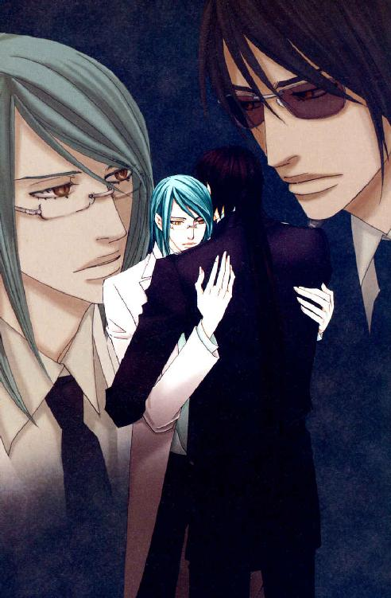
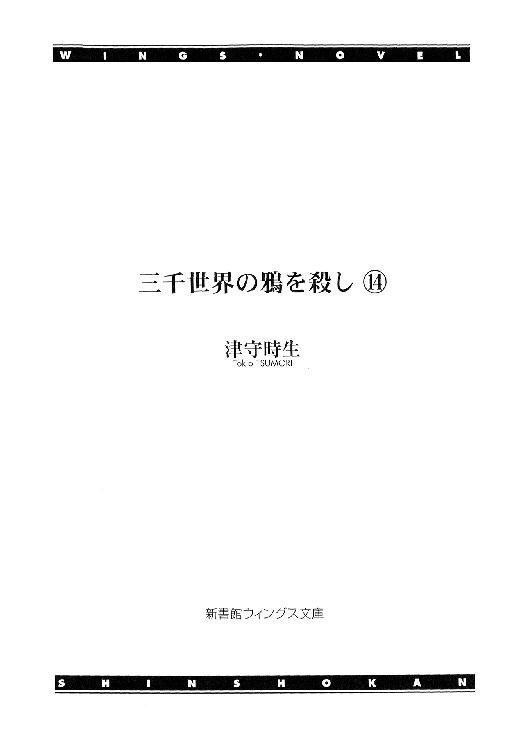
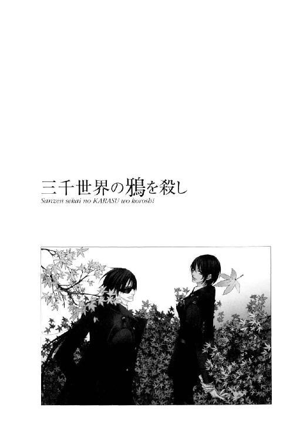
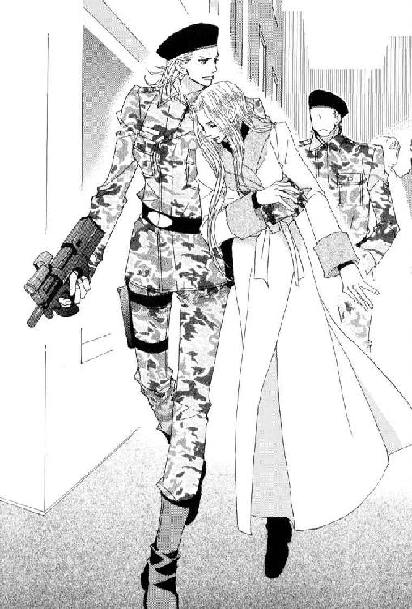
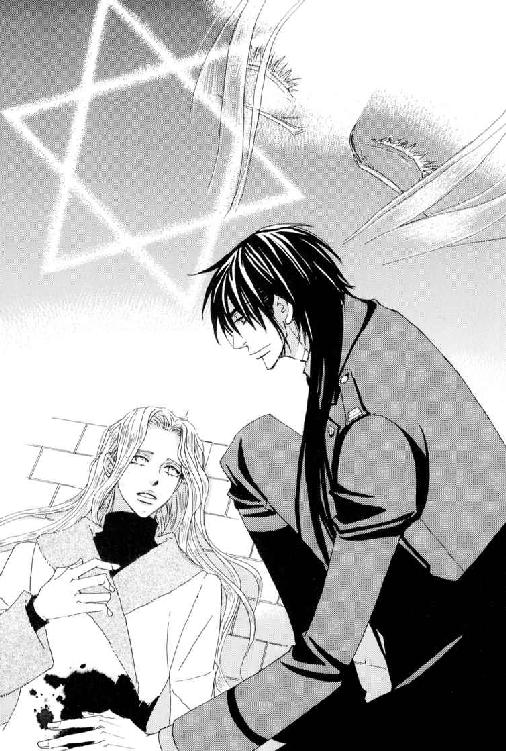
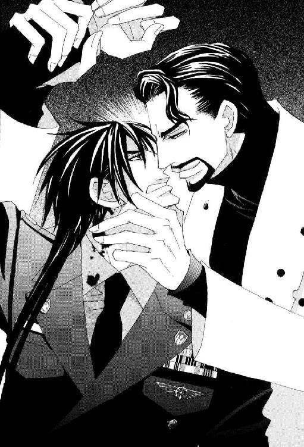
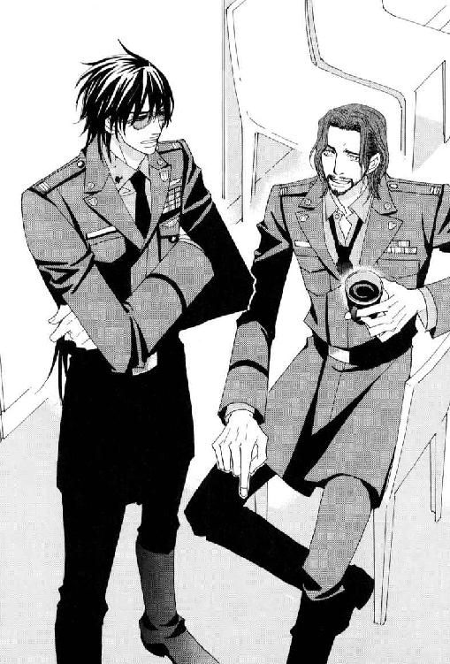
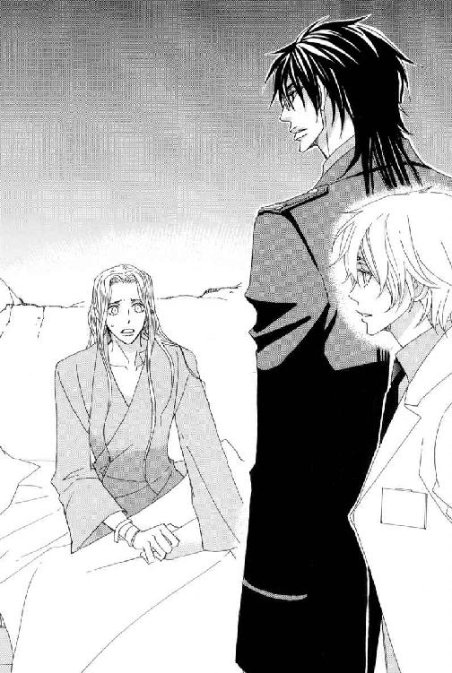
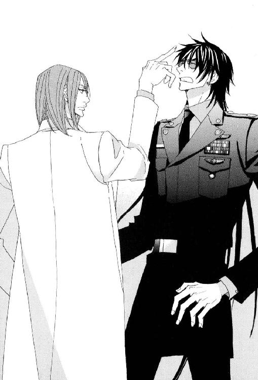
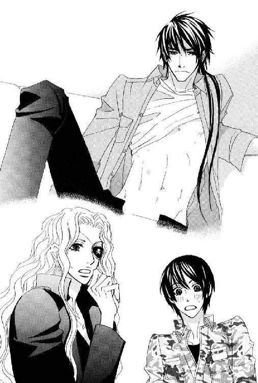

| 三千世界の鴉を殺し(14) (ウィングス・ノヴェル) | |
| 津守時生 | |
| 新書館 (2008) | |




１
簡易ミサイル・ランチャーで発射されたミサイルが、近距離で爆発したとおぼしき横からの衝撃を受け、装甲車の車体が傾きつつスライドする。
慣性によってシートベルトが体にきつく食い込み、反射的に漏れかけたうめき声を歯を食いしばって押し殺す。
自動制御装置が働き、車体の傾きが修正されるとほぼ同時に、車は予定のコースに戻り全速力での走行を続けた。
「残り、あと五発」
ニコラルーン・マーベリックのつぶやきに、安堵しかけた兵士たちの表情が再び厳しく引き締まる。
貫通することに重きを置いた対ＡＦＳ砲でもなければ、この車の装甲は破れない。携帯用のミサイル・ランチャーで発射できるミサイル程度の爆発力では、何発直撃を受けても破壊される恐れはなかった。
一行が恐れているのは、車の走行速度が落ちて、爆発物を処分する時間がなくなることだった。直撃した衝撃で進行方向にズレが生じ、道路の両脇にあるビルの一階に突っ込むようなことにでもなると、時間のロスは相当なものになる。
直撃と同程度に避けたいのは、至近距離での爆発だった。爆風に煽られて横転したら、速度が出ているだけにどこまで吹っ飛ぶかわからない。
超能力者のラフェール人が精神感応で狙撃手の脳に干渉し、照準を狂わせているおかげで、そのどちらもまぬがれている。
敵が浮遊型乗用車に積み込んだ合計十二発のミサイルが、自動追尾装置の付いていない安物で助かった。
車体に熱迷彩を施してあるので、熱源追尾装置付きミサイルを恐れる必要はないが、目標を映像でセットして追尾させるタイプになると、迎撃するほか対処のしようがない。
ともかく破壊を目的として量を撃つことが目的の市街戦用ミサイルなら、目標設定は狙撃手任せなので、ニコラルーンの付け入る隙がある。
一人の兵士が後部の銃眼から追跡してくるエアカーの運転席を狙撃したが、本来車体を軽量に作る乗用車タイプなのに、防弾仕様になっていたのは、さすが流民街と言うべきか。
敵も目標にミサイルを命中させたあとの巻き添えを警戒し、充分な車間距離を保っているため、火力の強いショットガンの有効射程距離外なのも腹立たしい。
「今のは結構近くてやばかったですね。道路沿いのビルじゃなくて、リニアカーに命中したんじゃありませんか？」
グラディウス・ベル軍曹は車体に受けた衝撃から、爆発で破壊され四散したものがぶつかった音と、吹き付けた爆風とのあいだにあまり時間差がなかったことに気づいた。
違法移民たちの手で勝手に作られた、正規の都市計画とは無関係な流民街の幹線道路だが、正規のものを真似して作っただけあって、多少蛇行運転しても車道から飛び出す心配のない片側三車線の広さが有難い。
ただし、流民街の交通網は都市警察交通局の管理下にないため、時限爆弾を載せた装甲車が街の中を走行中であっても、その周囲を走る他のリニアカーを強制停車させることはできなかった。
装甲車を運転している兵士は、後方から敵の攻撃を受けつつも全速力で走らせ、自動運転で走行するリニアカーを巧みに追い抜いていく。
装甲車がリニアカーと接触や追突をした場合、はね飛ぶのは車体が軽量に作られているあちらなので、下手をすると多重追突事故を起こしかねない。
さらにリニアカーは、リニアシステムを埋設した道路から外れると自力での浮上走行が不可能になるという欠点がある。接触で弾かれて道路の外に出てしまうと、車体は停止したその場で即座に厄介なただの箱と化す。
極力無関係なものたちに被害は与えたくないが、街中で爆弾が爆発したら厄介などというレベルではないため、この際こちらも割り切って通らせてもらう。
「うん。リニアカーの運転手が頑固で、進路変更に応じてくれなかったんだ。今の爆発に気づいたほかのリニアカーの運転手たちが、急いで脇道に逃げていったから、しばらくは大丈夫。直撃で亡くなった運転手は、身をもって流民街の同胞に危険を知らせた尊い犠牲ってコトで」
答えたニコラルーンは片手を胸に当て、その死を悼むように瞑目した。
天使の末裔と称えられる種族の繊細な美貌を宇宙軍の兵士たちは複雑な思いで見つめる。
言うことをきかないムカつく奴だったケド死んで役に立ったみたいだから、ま、いっか――という口調にしか聞こえなかったのだが、今にも背中に純白の翼を広げそうな男の白い顔を見つめているうちに、何となく緊迫したこの状況が生み出した歪んだ思い込みのような気がしてくるから不思議だった。
しかし、ルシファード言うところの××堕天使は、目を開けるなりため息をついて嘆く。
「それにしてもミサイル・ランチャーを撃っている奴、射撃がとっても下手なんだよねー。こっちがちゃんとずらして発射させているのに、予想外の近いところに着弾しちゃうんだ。ドコ狙ってスイッチ押してるんだよって文句言いたい。いっそ車内で暴発してくれないかなぁ」
青い目で虚空をにらみつつ、ブツブツと暗くひとりごちる。
兵士たちが青ざめた。
――それは結局コントロールできないってことで、大丈夫って言わないんじゃ......？
兵士の一人が半分やけくそ気味で明るい声を出す。
「あと、五発我慢すれば終わりですから！」
「あと五発、あと五発、あと五発！」
「バカ、節つけンなって」
仲間の空元気に合わせた周囲の軽口が、今はひたすら逃げるしかない現状のストレスを少し和らげる。
「あと四発」
ニコラルーンの言葉に少し遅れて感じた衝撃は、後部からのごく軽微なものだった。
後部座席の兵士の一人が好奇心に駆られ、シートベルトを外して銃眼から外をのぞく。
「......げっ。何か、高級そうな店の入ったビルの二階に命中したみたいっスよ。間違いなく死傷者が出たと思いますけど」
「大丈夫。私たちのせいじゃないから」
ラフェール人の言葉に一瞬固まった兵士たちだったが、無理に納得してうなずき合った。
大丈夫、大丈夫。死んだのボクたちじゃないんだし。
そして、釈然としない気分をまぎらわせるために口を開く。
「高級な店って言っても、ここは流民街だろ？」
「何か、偽ブランド品を売ってそう」
「でも一応、都市警察は都市の治安のために取り締まりをしているんだよな？」
「おー。都市警察のサイレンが聞こえてきたぞ」
「遅いっつの！ ここがイエロー・タウンだったら、市民からの抗議が殺到して署長の首が飛ぶぞ」
座席に戻ってシートベルトをしながら兵士が憤然と言った。
「バーカ。イエロー・タウンでミサイルぶっ放す奴なんか、いねーだろーが」
「誰が出動するかで、押しつけ合ってたんじゃねーの？ できれば俺たち宇宙軍に片付けさせたかったってトコだろ」
そのようすが目に浮かび、兵士たちは失笑する。
いくらマフィアと対決するために武装化していても、追跡しながらミサイルを撃ってくるエアカーを都市警察が逮捕できるとは思っていない。彼らはろくでなしな宇宙軍がまた面倒を起こしやがってと、毒づいているだろう。
何を思ったのか、ニコラルーンが誰にともなく尋ねた。
「流民街でも、幹線道路沿いのビルとなれば商業施設としては一等地だよね？」
「まぁ、そうっスけど......。流民街マフィアが仕切ってるそうですから、まともな企業が出店しているとは思えませんが」
兵士の一人が当惑の面持ちで答えた。
さきほど誰かが、偽ブランド品を売っていそうだと言った通り、ここはイエロー・タウンの繁華街を真似て造られた偽物の街であり、惑星政府に代わって流民街マフィアが支配し、税を徴収している。
そんな場所に出店している経営者は、流民街の流儀に従って生きられる同じ世界の人間としか思えない。
「所場代って言うのかな？ いかにも高そうだったよねぇ。私たちの追跡を命じた連中と、あのビルのオーナーとは違うグループのマフィアらしくて、後ろのエアカーの連中が内輪もめしているよ。あとで大変そうだ」
そこは楽しげにクスクス笑うところじゃないだろうと、沈黙した兵士たちは思う。
わざとビルに命中させたのではないかという疑惑も浮上してくるが、射撃が下手な人間のコントロールができないという話も聞いていたので、確信にはならない。
都市警察のサイレンがかなりの大きさで聞こえてくる。
「......まずいな」
「わっ！ ア、アイ・サー」
ラフェール人のつぶやきの直後、運転席の兵士が奇声を発して飛び上がった。
精神感応で命令されたのだと一同が理解する間もなく、装甲車が急に減速した。
背後に衝撃。
そして、急加速。
衝撃緩衝材の座席にシートベルトで体を固定されていても、ベルトが食い込む体の痛みまでは消せない。
歯を食いしばって耐える一同に、背後からもう一度突き飛ばされるような衝撃があった。
前進していても姿勢制御の限界を超え、装甲車の後部が浮き上がる。
運転席で警告音が響く。
やや斜めに傾いた車体の傾きがこれ以上大きくなったら、車道に横転すると感じたその瞬間、コンピュータの指示に従った運転手が片側の緊急噴射ノズルを作動させた。
傾きが止まり、後部が浮き上がっていた車体が水平に戻るのと同時に傾きも修正される。
何事もなかったかのように走行を続ける車内で、兵士たちが一斉に息を吐き出す。
日頃の訓練で肉体を鍛え上げている分隊の兵士たちと違い、根本的に脆弱な肉体のラフェール人が激しく咳き込む。
グラディウスが心配そうに隣の将校をのぞき込んだ。
「大丈夫ですか、少佐殿」
「急に......息を吸い込んだから......。もう、大丈夫。......イタタ......きっとアザになっちゃったなぁ」
シートベルトに圧迫されて呼吸できなかったニコラルーンは、ベルトで圧迫された胸をなでながら恨めしそうに答える。
爆発物は、運転席の後ろにある収納庫に予備の銃や弾丸と一緒に固定されて入っているので、かなり荒い運転をされても衝撃で爆発する危惧はない。
「今の爆発は追跡してきたエアカーですよね？ わざと追突させる作戦はうまくいったとは思いますが、どうして急に？」
「都市警察が来たことで気分的に追い詰められたんだね。外しようがないくらい近づいてミサイルを撃つか、いっそ体当たりしようという方向に連中の話がまとまりかけていたんだ。スピードで上回るエアカーに仕掛けられたら、装甲車では逃げ切れないからね、こっちから当たって逃げたほうがいい」
「それじゃ、今度は運転手に、その......超能力で？」
「いや。私が思考に干渉するまでもなかった。急にスピードを落とした装甲車が眼前に迫ったから、運転手は本能的にブレーキをかけたんだ。問題は残るミサイル四発分の誘爆で、こっちがひっくり返るかどうかだったけど......。あっちに自爆覚悟で体当たりされるよりは――いいよね？」
命がかかっている局面だったのだから、もっと当たり前のこととして話せるはずなのに、超能力の利用についての質問で口ごもってしまったグラディウスは赤面する。
しかし、華奢な美女にしか見えない外見のラフェール人は、超能力者への畏怖を隠しきれない相手の態度を気にする風でもなく、上目遣いで甘えるように尋ねた。
彼なりの配慮だとわかるので、たくましい六芒人の女軍曹は苦笑してうなずく。
「短時間で賢明なご判断をなさったと思います。至近距離で撃たれたり体当たりで自爆されたら、絶対にひっくり返っていました」
「そうそう、結果オーライってコトで！」
脇から別の兵士が笑顔で言い添える。
意識的に明るく振る舞っていないと、時限爆弾の残り時間のことばかり考えてしまう。
今この中で爆発したら、全員粉微塵になる。
分隊長のグラディウスは、浮き足立っている兵士を一瞥しただけで注意はしなかった。頭を使わせるほうを選ぶ。
「しかし、捨て身の覚悟とは......。いくらボスの命令は絶対のマフィアでも異常です」
「流民街のマフィアの一部、もしくは全部の上にイヴルという組織がある。それが下っ端の構成員たちに捨て駒になる覚悟をさせるほど、冷酷非情なんじゃないかな？ 命令を果たさないと家族を殺されるとか。それにしても、どうしてそれほど私を殺したいのだろう。ヴァンサン・ロメールが事件につながる同僚のディスクを持っていたにせよ、すでに取り戻している。おまけにこうして時限爆弾のお土産を渡しながら、気づかれたと判明するなり、わざわざ追っ手をくり出してくるなんて変だ。爆弾を無事に捨てられるかどうかを確認してから、帰り道を待ち伏せするほうが簡単だろうに」
他人事のような彼の分析を聞いて、兵士の一人が苦笑いで抗議する。
「うわ、やめてください！ 俺たち、簡単に処理されちゃ困るんですって」
「私だって困るよ。あっちの立場でそう考えるのが妥当だろうという話さ。キム中尉が輸送艇で迎えに来てくれるんだから、こっちはちゃんと敵の裏をかいているじゃないか」
「でも、ミサイル飛ばされて追われていたってことは、裏の裏をかかれたってコトじゃないっスか？」
反論したニコラルーンは別の兵士にさらに反論され、腕組みをして首をかしげた。
「だからねぇ、そこが不思議なんだ。そうまでして殺したいほど、私に価値なんてないよ？」
「またまた。宇宙軍中央本部のエリート将校じゃないですか。このカーマイン基地じゃ、下手したらブレッチャー司令官より偉い人ですよ」
いささか自虐的な発言に兵士たちがどっと笑う。
「いや。中央本部にしてみれば私も歯車の一つで、つまりが使い捨ての駒だ。私を殺して何が得られるのか、現時点ではわからない。わからないから逃げるだけで、ほかに対処のしようがないというのは、どうにも面白くないんだ」
グラディウスが驚きの表情で真紅の目をしばたたいた。
破顔し、言う。
「うわぁ、すごく格好いいです、マーベリック少佐殿～。外見と全然違って意外と男らしい方なんですね。見直しました！」
――あわわわわっ。言っちゃうか、このお嬢さんはーっ。
兵士たちが必死の形相で口をぱくつかせるものの、ここまで無邪気に言いたい放題言われたあとでは、もはやフォローのしようがない。
グラディウスの言いたい気持ちはわかるが、男のプライドを傷つけない言い方というものがあるだろうに。
男たちが冷や汗をかく中、ラフェール人の将校はにっこり笑って礼を言う。
「六芒人の血を引く君のように勇敢な軍人にほめられて、悪い気はしないな。生まれつきの外見はどうしようもないけれど、中身だけでも見直してもらえるなら、それに越したことはないしね。あはは......」
――うう、怒ってる。ムカついてる。だけど、そこをぐっとこらえて気づかせない。少佐殿偉いっス～っ。やせ我慢こそ、男の美学！ 正しく漢っス！
精神感応がなくても、男の気持ちは男が一番知っている。
兵士たちが心の中で贈る賞賛の言葉が、らしくもなく見栄を張ったニコラルーンの慰めになった。
ライラはしばしば、空気で会話する男たちをホモ呼ばわりするが、男たちからすれば口にしないことが思いやりという場合はいくらでもある。なのに、脳に発達した言語野を二ヵ所持つ女たちは全部言葉にしてしゃべってしまう。
しかし、彼が地球人の兵士たちの同情に心地よく浸れた時間は短かった。
車内で会話をしながらも、ずっと超感覚の警戒網を周囲に広げていたニコラルーンは、運転席の兵士が視認するよりはるか手前で敵の存在を感知する。
「............っ！」
「少佐殿？ 敵ですね！ 待ち伏せされているんですかっ？」
隣に座る男の異変に気づいた女軍曹が、矢継ぎ早に質問を浴びせた。
ミサイルを撃ってきた敵を撃退したことで安堵し、緊張がゆるんでいた車内の空気が一瞬で引き締まる。
ニコラルーンは額に片手を押し当て、金髪の頭を振った。
「......ダメだ。運河に至る道は全部待ち伏せされている！」
「それじゃ、どうしたら......っ？ このままじゃ爆発時刻になってしまいます」
「限界だ。車を捨てる」
「ええっ！ こんな......繁華街でっ？」
分隊の兵士たちが同時に驚きと非難の声を上げる。
「正確には、我々は全員ここで車を降りて、進路を固定した装甲車を無人で自動走行させるんだ。運河までは無理でも、まっすぐ走らせれば荒れ地に出る。そこで爆発するなら一番いいが、無人と知らない敵に攻撃されて横転したら、そこでタイム・リミットを迎えるだろう。この車の装甲が内部からの爆発にどれだけ耐えられるかわからないが――」
「ですが、その前に他の車にぶつかったらどうします？」
「私が運転手たちの思考に干渉して、全部幹線道路から退避させる。――可能なら、待ち伏せしている敵も」
大勢の人間の思考に強制介入することが、どれほど困難でラフェール人の心身に負担がかかることか、超能力者ではない兵士たちにはわからなかった。
だが、それしか残された方法がないとなれば仕方がない。
そして、柔和な雰囲気を一変させたニコラルーンの厳しい表情が、それ以上の質問を許さなかった。
彼はやると決め、彼は少佐だった。
軍人は上位者の命令に従わねばならない。
護衛の指揮官であるグラディウスは運転手に対し、車線はそのままで、すみやかに停車するよう命じる。
一秒でもムダにできない一行の行動は素早かった。
停車しきらないうちにシートベルトを外し、必要な装備を持ち出せるように準備する。
車を降りて路上に出たグラディウスは運転席側に回り、説明する時間を惜しんで運転手にニコラルーンの身柄の保護を命じると、自らがコンピュータに自動走行の指示を出す。
幹線道路の中央車線に停車した装甲車は、行き交うリニアカーの運転手だけでなく、歩道を歩く人々からも奇異の目で見られていたが、武装した兵士たちはかまわず道路を横断する。
グラディウスが加わるのを待って、装甲車が向かった先と反対方向に歩き出す。
通行人に内容を聞かれてはまずいため、中央本部所属の将校は、屈強な兵士たちに囲まれて歩きながら精神感応で彼らに必要事項を伝えた。
『装甲車が待ち伏せの連中を振り切れたら教えるから、全員近くのリニアカーに乗ってイエロー・タウンに向かい、交通局の管理下にあるリニアカーに乗り換えてから、カーマイン基地に帰還してくれ』
兵士たちは了解のしるしに深くうなずく。
『敵を振り切れずに横転した時も教えるから、各自散開して近くのビルに入り、中を通って別の道路に抜けてくれ。走るのは目立ち過ぎるから早足で。この距離からだと直接爆風を浴びることはないと思うけど、飛び散った破片が飛んでくることはあるかもしれない。爆発の衝撃を感じたら、即座に近くのリニアカーに乗って、この場から離れるように。私たちはこの街では目立ち過ぎる余所者だという認識を忘れないでくれ』
屈強な兵士たちが、同時に無言でうなずくさまが不気味だったのだろう。前方から歩いてくる通行人たちが、嫌悪と驚きのないまぜになった表情で脇に飛びのいた。
前方だけではない。
至るところから敵意のこもった視線を向けられる。あからさまに舌打ちをしたり、小声で悪態をつくものもいた。
幹線道路沿いの繁華街は歩道も完全に整備されているので、拾って投げる石がないのが幸いだった。
『グラディウス。悪いが、私の片腕を摑んでいてくれ。装甲車の進路に集中すると、足元に注意を払っていられない』
ニコラルーンの右側を歩いていた女軍曹は、サブ・マシンガンを右手に持ち直し、左腕を相手の腰に回す。
二人の身長差があるのでラフェール人の足は宙に浮き、彼はグラディウスに抱きかかえられた格好になった。
「少佐殿の体重なら大した負担になりません。作業に没頭してくださっても大丈夫ですから」
抱いていくから歩かなくていいと言われ眉間にしわを作りながらも、小さく礼をつぶやく。
街を歩く人間がすべて敵意を向けてくる四面楚歌の状況で、にやつくほど余裕のある兵士はいなかった。
ただし、知らないものがこの集団を目にしたら、自力で歩けないほど動揺した女性を強制連行する宇宙軍兵士の一団に見える可能性はあるだろう。決して好ましい誤解ではない。
中央本部の士官だとわからないようにと配慮した私服姿だったのに、仇となったのは皮肉な結果だった。
爆発物を乗せて送り出した装甲車のことがなければ、超能力で通行人に心理的な目くらましをかけられた。が、爆発物がなければ装甲車を乗り捨てることもなく、今頃はカーマイン基地に戻っている。
などと詮ないことを考えるのはやめて、今は無人走行中の装甲車の周囲から一人でも多くの人間を避難させることが大事だった。
装甲車の進路を走るリニアカーの運転手たちは、幹線道路沿いの店に用がある人間以外、比較的楽に脇道へ誘導できた。
ニコラルーンの超感覚の〝視力〟は、普通人が想像できないほど広範囲にわたって、多くのものが〝視える〟のだが、待ち伏せをしている連中を無意識のレベルで翻意させるのは困難そうだった。
荒れ地へと向かう幹線道路の外れは人通りも減って、建物の陰の脇道で待ち伏せするには、ちょうどいい場所が多い。そんな場所のそこかしこに、目つきのよくない男たちが立ったり座ったり、どこかに電話をかけたりしている。
彼らの足元には武器を入れているとおぼしきケースや布袋が置かれ、中には人目が少ないのをいいことに簡易ミサイル・ランチャーに小型ミサイルを取りつけ始めたものまでいた。
長年、情報工作員の仕事を続けてきただけあって、ニコラルーンにも何ら痛痒を感じずに人間の命を切り捨てる非情な部分がある。
だが、流民街マフィアの構成員はともかく、巻き添えで死ぬ無関係の人々をできる限り減らしたいと思う程度には、まだ人間らしさが残っていた。
――仕方がない。事実をぶつけよう。
装甲車を発見した一人の男が、ミサイルの照準を合わせようとした時に――。
『逃げろっ！ 無人の装甲車には、強力な時限爆弾が積まれているぞっ』
司令官の不興も覚悟して乗り捨てることにした以上、装甲車の性能には期待していたが、一応爆弾が破壊し尽くすとされた半径五百メートルの範囲にいる人間全員に、精神感応で呼びかけた。
近くで誰かが叫んだと錯覚した男たちの何人かが浮き足立ち、用意してきた武器すら放置して逃げ去っていく。
通行人は我先に走って近くのビルに飛び込み、通りかかったリニアカーの乗員たちは行く先を変更し、全速力でその場から遠ざかる。
それでも、何人かが踏みとどまった。
ニコラルーンの精神感応の言葉を疑ったものや、使命感や粛清への恐怖が勝ったものたちだった。それでも数は当初の四分の一に減っている。
――さっきみたいに、この連中が照準を合わせる時に干渉すればいい。
そう思ったが、それは簡単ではなかった。
強力な爆弾を積んだ車を攻撃する覚悟は、そうでない車を攻撃する時の比ではない覚悟と恐怖がある。それでもミサイル・ランチャーのスイッチを押す人間の意志の力は、安易な干渉など受け付けなかった。
無意識レベルではなく、明確な意志を曲げさせるとなれば、当然干渉される相手にも違和感が生じ、抵抗してくる。意識している人間を強引に従わせるとなると、意志対意志の戦いになり、神経の繊細なものが多い超能力者側の精神にかなりの負荷をかける。
一度に数人の意志を屈服させてコントロールしなければいけなくなったラフェール人は迷い、唇を嚙んで考えた。
――装甲車が待ち伏せ地点を通り抜けるまでなら......！
決断し、一同の意志の抑圧に取りかかる。
最初、彼らの心から自分の肉体が自分の意志通りに動かない驚愕が伝わってきた。
驚きから醒めると苛立ちや怒り、嫌悪や恐怖が、それぞれの個性に合わせて現れ、反発が強くなってくる。
「う......っ！」
パニックになった男の精神に触れ続けるのは苦痛だった。相手の混乱した思考のせいで気分が悪くなり、現実に吐き気がしてきた。
蒼白になって口元を覆うニコラルーンのようすを気遣い、グラディウスが彼の腰に回した腕の力を強める。
彼女の強く安定した精神に触れたおかげで立ち直り、落ち着きを取り戻せた。
最高速度で近づいてくる装甲車を目にしながら、何もできない男たちの思考は、邪魔をする見えない相手への憎しみと怒りに埋め尽くされ、装甲車が眼前に迫るに及んで強い殺意へと代わった。
複数の激情をむき出しの状態でぶつけられる苦痛は、袋だたきにされているようなものだった。
強い反発があるにもかかわらず、一度に複数の意志を抑圧して、殺意や憎悪にさらされる。それに耐える負荷が激しい頭痛を引き起こす。
――あと少し......あと少しだから......。
何本もの針が頭の芯に突き込まれるかのような鋭い痛み。
髪の中に両手を差し入れ、歯を食いしばって漏れかけるうめき声を押し殺す。
無人の装甲車が、待ち伏せ組の中で一番後方にいた男の脇を通過する。
ニコラルーンの安堵と一人の男の激怒。
その瞬間が不幸にも重なり――相手の意志を抑圧していた超能力者の力が弾き飛ばされた。
「............っ！」
一瞬の気のゆるみが、一人の男を自由にする。
その男は狂喜してミサイル・ランチャーを構え、再び邪魔が入らないうちにと、ほとんど狙いも定めず発射スイッチを押した。
超能力者に衝撃から立ち直る暇も与えず、一動作で行なわれた行動だった。
ミサイルは装甲車の進路左側面の路上に着弾し、爆発したまさにその時、その場所に装甲車が突っ込む。
縦長の物体を縦に転がすのと横に転がすのでは、どちらが容易か自明の理。
横の、しかも下から吹き上がる爆風を受けた車体は斜めに傾く角度を大きくしながら進み、ついに横倒しになった。姿勢制御装置の限界を超えた時点でエンジンは停止し、慣性で路面をすべったのちに止まる。
もはや、これ以上装甲車にかかずらっていても意味はない。
ニコラルーンは割り切った。
「すまない、失敗した。一同、散開」
兵士たちは肉声での命令に無言でうなずき、即座に散った。
女軍曹もラフェール人を小脇にかかえたまま歩を早める。
「......グラディ――」
「そんな顔色で何をおっしゃっても聞きませんから」
「ごめん......甘える」

彼女の腕の支えがなくなったら、自分で歩けるかどうか正直なところ自信がない。まだ頭痛が残り、何かを考えるのもつらい。
――ルシファに連絡しなきゃ......。心配している。
今の状態で、基地にいる友人に精神感応で話しかけるのは無理だった。ならば基地の外でも使用できる携帯端末を取り出して利用すればいいのだが、あいにく手に麻痺が出ている。
無理をしすぎた。
代わってグラディウスに連絡を頼もうにも、現在両腕のふさがっている彼女にできるはずもない。
ビルの中に移動してから一度彼女に下ろしてもらい、連絡を頼むことにする。
グラディウスは、いくつものテナントが入っている商業施設に入って行く。やや遅れて部下の一人が続いた。
一人ずつになっても迷彩服の軍人が目立たないわけがない。ならば片腕にラフェール人をかかえた分隊長の補佐をしようという、彼の考えは正しかった。
「......すまないが、基地に連絡を......」
「アイ・サー」
伍長の階級章をつけた兵士は、左耳に装着したイヤホン型の通話装置に手をかける。
流民街の幹線道路沿い、しかも流行を追った高級な品を扱うファッション系の店ばかりを集めたビルの中で、武装した宇宙軍の兵士二人は誰もが顔をしかめて顧みる異分子だった。
伍長は極力声をひそめて話すのだが、ここまで注目されるとどうしても、言葉少なにならざるを得ない。加えて、ここがどこなのか正確な位置が不明だった。
かといって、非友好的な視線を向けてくる流民街の人々に聞いたところで、正確な場所を教えてくれるような親切は期待薄だった。間違った情報を与えられる可能性もある。
「了解。――即時離脱せよとのことです」
短い通信を終えた兵士は、二人に身を寄せてささやき、グラディウスは無言でうなずく。
もはや自分たちにできることは何もない。一刻も早くリニアカーの空車を呼んで基地に戻らないと、自分たちの身が危うくなる。
方針が決まった三人はビルの反対側の出口に向かう。
居心地が悪いことこの上ない場所から別の通りに抜け、一緒に肩の力も抜いた兵士たちだったが、さほど遠くない場所で鈍い爆発音が響く。
装甲車の中の時限爆弾が爆発する時間だった。
通りにいる人々が全員そちらを見て、一点を指差す。
ビルの間から立ちのぼる黒煙が見えた。
「まずい。急ぐぞ」
部下の返事を待たず、グラディウスは小走りに駆け出す。
今の爆発と、道路の真ん中で装甲車から降りてしまった不審な宇宙軍兵士たちの話はすぐにつながる。
幹線道路沿いは区画が大きく、一本離れた通りでもそれは同じだった。すでに見えてはいるのだが、リニアカーの走る道までの距離はかなりある。
「いたぞ！ 宇宙軍だっ！ あの爆発はあいつらの仕業だ！」
「軍曹殿！ ここは自分が引きつけます。少佐殿を連れて、リニアカーで逃げてください」
グラディウスは部下の言葉にうなずいた。
軍人なら最優先で何をなすべきかは知っている。
「キム中尉殿の救援が到着するまで、死ぬな」
「アイアイ・マム」
女軍曹は部下にその場を任せて歩き出す。
ニコラルーンは、肝心の時に使いものにならないほど無理をしたおのれを責めた。
おのれの無能に打ちのめされることが、部下を犠牲にして生き延びる士官の代償だった。
小走りでも呼吸を乱さない六芒人の女性兵士は、油断なく周囲に視線を配りながら言う。
「少佐殿。あなたの超能力がなければ、我々は今頃、装甲車と一緒に吹っ飛んでます。それだけで、おつりが来ます」
こんな場面では、男ならよけい傷口をえぐる無駄口と考えて何も言わない。自分のしたことは、自分が一番よく知っている。それでも彼女の女性らしい気遣いは、重度の自己嫌悪に浸りかけていたニコラルーンを救った。
今はそんな感情に囚われている場合ではない。
やっと交差点に到着した。離れた場所で爆発があっても、ここには影響がないので、交通量に変化はないようだ。
「有難う。自分で立つくらいはできる。ルシファードに現在位置と爆発を報告してくれ。私はリニアカーを呼ぶから」
「アイ・サー。......お気をつけて」
グラディウスは慎重に歩道に立たせると、ラフェール人がふらついたりしないことを確認してから手を離す。
彼女が現在位置の目安になる通りの名称を記したプレートを探しているあいだに、ニコラルーンはリニアカーを呼ぶスタンドを見つけ、そちらに足を向ける。
スタンドには画像通話器があることを思い出したが、基地にいるルシファードに直接つながる通話装置のほうが早いだろうと思い直し、彼女のそばから離れた。
流民街のスタンドは単に空車のリニアカーを呼ぶだけでなく色々とほかの機能が付属していて、シンプルな基地のものとは勝手が違う。
――えーと。このボタンを押せば――......殺意っ？
たとえ疲れ切っていても殺意にだけは即座に反応できた。
とっさにスタンドを盾にし、自分に向けて発砲された銃弾の一発目をかわしたが、続く二発目はよけ切れない。
左脇腹に焼け付くような痛みを感じた時には、ラフェール人の華奢な体は衝撃で後ろに吹き飛んでいた。
「バカ者。誰が撃っていいと言った」
硬い歩道に叩きつけられ、薄れかける意識を男の声がつなぎ止める。
――......うわぁ......すごく、いい声......。
声楽家のように深みと艶のある低音の美声だった。
ルシファードの若々しく官能的な華やかさを持つ声とも違う。重みのある落ち着いた声の響きがいつまでも耳をくすぐっているようで、快感すら覚える。
離れた場所で、通信状況が悪化した通話装置を調整していたグラディウスは、異変に気づくのが遅れた。
それでも視界のすみでラフェール人が倒れる姿を捉えるや否や、つながりかけた通信を放棄し、向き直りざまにサブ・マシンガンを撃つ。
数人の銃を構えた男たちが、直撃を受けて後ろに倒れた。
が――。
「六芒人か。さすがにもう、サンプルはいらないな」
引き金を引くまでは、確かに離れた場所にほかの男たちと一緒に立っていた人物が、グラディウスの眼前に立っていた。
異常な移動の早さの理由を考えるより先に、銃の引き金にかけた指に力を入れる。
恐ろしく危険な相手だと彼女の本能が告げていた。
しかし、弾丸は出なかった。
金属音が足元に響く。
銃を持ったまま自分の右腕が肘近くで綺麗に切断され、歩道に落ちていた。
「あ......あああ――......っ！」
鮮血が吹き出す腕をかかえ、その場にうずくまる――ふりをして、ブーツに仕込んだナイフを抜き取った。
バネがはねるように立ち上がりながら、握ったナイフを突き出す。
「六芒人はタフだね。満身創痍でも衰えない闘争本能といい、実に好ましい」
深々と心臓にナイフを突き立てられながら、その男は笑っていた。仕立てのいいスーツの上着に、さきほど彼女が撃った弾丸のあけた穴もある。
生きている人間の手応えはあった。
なのにナイフで心臓を刺されても平然と笑う男は、おもむろに片手を伸ばし、驚愕する女性兵士の頭を鷲摑みにする。
硬い頭蓋骨を貫いて、何かが刺さる感覚があった。
男は口元に笑みをたたえたまま手を離す。
半面を朱に染め、意識を失ったグラディウスがその場にくずれおちた。
――グラディウス......！
ニコラルーンが肘を突いて、何とか上体を起こそうともがく視界の先に、取り出したハンカチで血まみれの片手を優雅にぬぐう男の姿がある。
その顔に見覚えがあった。つい最近、ルシファードに関係したとある事件で取り寄せた資料に含まれていた人物で、まさしく主犯の――。
「......おまえ......アル＝ジャア...ファル......ッ！」
うなるように吐き出した声は、ささやき程度のものにしかならない。
離れた場所に立つ男の耳まで名を呼ぶ声は届いただろうか。ニコラルーンを見下ろす男は直接答えず、明るい口調でおぞましいことを言う。
「ちょうど良かった。新生ラフェール人のサンプルは、まだ入手できなくてね。生きて捕まえたかったのだが......弱いから、死んでしまうかな？」
男は少し悲しそうな顔をしたあと、背筋が寒くなるような邪悪で淫らな笑みを浮かべて付け加えた。
「特別親しい君が死んだら、私の美しい坊やはさぞ苦しむだろうな。――あの子の苦しむ姿は最高だ。この目で見られないのが、とても残念だよ。とても――」
２
ニコラルーンたちが車を捨てた時点で、ルシファードは衛星から送られてくる映像の倍率を変えて、より大きな倍率でコンピュータ画面に表示させていた。
従って個々に逃亡するべく兵士たちが散開し、流民街のメイン・ストリートから遠ざかったことも知っていたが、頭上から撮影した映像では、その倍率でも個人を識別して追跡するまでには至らない。
画面は再び倍率を下げ、流民街の数ブロックを俯瞰する映像に切り替わる。
装甲車の爆発を確認したマルチェロ・アリオーニは、鋭く舌打ちをした。
しばらくは兵士たちが無事に逃げている証を求めるように画面を眺めていたが、結局何もわからない苛立ちがにじんだ口調で傍らの男に問いかける。
「まだ、おまえの副官は到着しないのか？」
「あと十五分というところだ」
「......遅いっ！」
焦っていないわけはないだろうに、微塵もそれを感じさせない冷静な応えを聞いて、憲兵隊隊長は八つ当たり気味に舌打ちした。
ルシファードは斜め後ろに立つマルチェロを肩越しに見上げ、片手を伸ばしながら言う。
「輸送艇なんだから、ＶＴＯＬより遅いのはしようがねえ」
「そんなことはわかって......っ――何だ？」
「爪を痛める。よせ」
左手を摑まれて初めて、自分が無意識に親指の爪を嚙んでいたことに気づく。
この癖が出たのは久々だった。
六年前の裁判所爆破事件で、瀕死の重傷を負った部下たちの手術が終わるのを待っていた時以来ではないだろうか。若い時ほどは頻繁に出ないので、自分にこんな癖があったことも忘れかけていた。
自分の力の及ばないところで大切な人の命が失われようとしている無力感――。
宇宙空間で行なわれる戦艦同士の戦いでは、特殊兵科の憲兵隊に所属する自分が戦闘の指揮を執ることはない。
もちろん憲兵とて一人の兵士であり、戦闘訓練も積んでいる。自分や憲兵隊所属の部下たちが、普通兵科の兵士たちに勇敢さで劣らない自負はあった。
だが、実戦での指揮経験は、今コンピュータの前に座っている黒髪の男には遠く及ばない。
出発前にニコラルーンの身を案じていたルシファードを近くで見ているだけに、この緊迫した状況で友人の爪を嚙む癖に気づく冷静さがあるのは、さすがだと思う。
『何だ、爪の形が悪くなるってのか？ 美形の兄ちゃんが美容にも気を遣っているのはわかるが、今はそんな優雅な場合か、カマ野郎っ！』
「俺に当たるなよ、親父。爪は何をするにも大事だろう。何かした拍子に爪が割れたり剝がれたりしたら、銃を撃つどころか光学式キーボードに触れるのさえ難しくなる」
ルシファードが都市警察のスノーリ・ウンセット部長に言い返したとたん、いい年をした二人の男が悲痛な悲鳴を上げる。
「うわ、よせ。想像するだけで痛い......っ」
『そういうチマチマしたカマ臭い痛みはゴメンだっ。男なら銃で撃たれろ！』
歯をむいて抗議する部長をマルチェロがたしなめた。
「おっさん。言わんとするところはわかるが、痛みに性別なんて関係あるか。ホモだって爪を剝がされるのはイヤだろうよ」
『小さな痛みじゃなく、銃に撃たれた痛みに耐えるほうが男らしいと言っているんだ！』
「だったら陣痛はどうする。出産時の苦痛は、男だったら耐えられないで死ぬって聞いたぜ。おっさんの論法だと苦痛に一番強い女が、最も男らしいって結論になるぞ」
『男は子供を産めないんだから、陣痛の痛みに耐えられなくて何が悪いっ！』
「論理がずれてるぞ！」
都市警察の部長と憲兵隊隊長が〝男らしい痛み〟などという、はなはだ主観的な問題を論じているあいだ、二人にはさまれた格好のルシファードは黙って画面を見つめていたが、不意に眉をひそめてつぶやいた。
「撃たれた......？」
『え？ いや、それは昔の話で今は――』
都市警察に爆発物が仕掛けられた事件をきっかけにして、ガーディアン・レッドを始めとする電脳刑事たちの保護をルシファードに押しつけた部長は、今のやり取りで再び都市警察本部が襲われたと勘違いさせたと思ったらしい。
あわてて誤解を解こうと言いかけるのを片手で制し、黒髪の大尉は椅子からゆっくりと立ち上がった。
飲料ディスペンサーに行くのかと思いきや、何もない方向へ曲がる。歩幅も狭く、妙に足の運びも遅い。
目的があるようには思えない足取りを不審に思ったマルチェロが声をかけた。
「おい、どうした？」
「......ダメだ、ニコル......気をしっかり持て......」
「おい！ 超能力ってヤツか？ あのラフェール人が撃たれたって言うのか！」
勢い込んで尋ねる友人にルシファードは答えず、片手で苛立たしげにスクリーングラスを外した。
虚空に視線を泳がせる美貌の横顔をモニターの向こうで見ていた部長が、金属的な輝きを宿す黄金色の双眸に息を呑む。
「......呼べ......ニコル、俺を呼べ......意識を闇に呑まれるな......呼べ俺を......強く、望め！」
遠い場所にいる誰かにささやきかける声が、次第に強い命令口調になっていく。
「おい、撃たれたって言うなら、位置――を......」
長身の男の背後から歩み寄ったマルチェロが、引きとめようとして手を伸ばし肩を摑む。強く後ろに引いたはずみで、軽く持っただけだったスクリーングラスが、ルシファードの手から離れ宙に飛んだ。
その瞬間、淡い光が二人を包む。
『うお......っ！ 消えたっ？』
ウンセット部長が驚愕の声を上げた。
二人が奇妙な光に包まれたことに気づき、目を凝らしていた彼の目の前で、宇宙軍将校の黒い制服に身を包んだ男たちの姿は忽然と消えた。
都市警察本部で部長が見ているモニター画面には、最初からその場に誰もいなかったかのような無人の部屋が映し出されている。
否。妙に遅れて床に落ちたスクリーングラスが音を立てる。普通に落下するより時間がかかった気がするのは気のせいだろうか。
――......もしかして......空間が歪んだのか......？
ウンセット部長の問いに答えるものは誰もいなかった。
ニコラルーンは、ルシファードが士官学校時代に誘拐され、宇宙軍の脳科学研究所でさまざまな人体実験をされたあげく、解剖される寸前で救出されたという話をカジャ・ニザリから聞かされた。
ルシファードを幼い頃からよく知っているニコラルーンは、何重にもショックを受けた。
大事な友人がむごい目に遭わされたことへの怒り。超能力を研究するために行なわれた非人道的な実験は、同じ超能力者としても戦慄を禁じ得ない。
何より、カジャに教えられるまで、その事件について何も知らず、ルシファードと再会してもいたわりの言葉一つかけられなかった自分に憤りを感じる。
現役時代の情報部の友人知人のつてをたどり、当時の事件について可能な限り調べてみた。
唯一逃亡した主犯の男について、ある程度のデータは得られたものの不可解な点は多い。
サイード・ハダム・アリ・アル＝ジャアファル、通称アルジャハル教授。学都の教授を務めたほどの優秀な科学者であり、プロフェッサーという敬称はその経歴に由来する。
多くの人権侵害に関わる罪で、銀河連邦宇宙警察の指名手配レベル１の犯罪者――という情報までは簡単に得られたが、何故か詳細な経歴が手に入らない。経歴不詳の人物が学都の教授になれるはずがなく、教授になるにはそこの教授三人の推薦と教授会の審査を必要とする。
最優先で逮捕されるべき指名手配レベル１の犯罪者なのに、有効な手がかりとなる経歴が開示されないのは異常だった。それはすなわち、その犯罪者との関係が明らかにされては困る人物が、銀河連邦に対して相当の影響力がある社会的地位にいるということを意味している。
名前は地球系だが、手配の映像を見る限り、地球系人類にはいないオレンジ色の肌から判断して、混合種である可能性が高い。
知性的な広い額に乱れかかる縮れた黒髪、彫りが深く精悍な顔立ち、深い眼窩にはめ込まれた鮮やかな青い双眸、肉感的な唇の上から顎にかけてよく手入れされた髭が蓄えられていた。
その髭が正確な年齢をわからなくさせる。落ち着いて貫禄のある三十代の男にも見えるし、やや若く見える壮健な六十代としても通用する外見だった。
身長も百九十五センチと、学究の徒にしては堂々たる偉丈夫で、上流階級の人間が集う場所に出入りしても、奇異に思われない気品と威厳がある。
実際、賞金稼ぎたちに提供される参考映像の中の彼は、クラシカルなデザインの高級な服を好んで身につけ、声楽家のような美声で銀河系共通高等言語を使い、芸術や科学、人類のあるべき理想の姿について論じていた。
列挙された違法行為――というより犯した犯罪のリストからは、人間を細胞の塊としか認識していないような唾棄すべきマッド・サイエンティストの姿しか浮かばない。
なのに映像の中のアルジャハル教授は、見るものに高い知能と深い教養、豊かな財力を有する人物だという、強烈な印象を与える魅力的な男だった。
だからこそ今に至るまで、一度も逮捕されることもなく逃げおおせたのだろう。一般人の考える指名手配レベル１の犯罪者のイメージと、アルジャハル教授は違いすぎる。
だが、二桁にのぼる賞金稼ぎを返り討ちにしてきた記録が示すように、極めて危険な男でもある。ライセンスを持った一流の賞金稼ぎたちを撃退するのに、どのような手段をとったのか不明だが、今のように武装したボディガードに護衛させてきたのかもしれない。
――ルーシーに教えてやらなきゃ......。
ニコラルーンの頭に浮かんだのは、現在の自分に迫る危機ではなく、目の前の男の被害者になった年下の友人のことだった。
おのれの意思と自由を薬で奪い、生きながら切り刻まれる苦痛と屈辱を与えた人間を、誇り高いルシファードは自分の手で殺したいと思っているだろう。今この場所にいると教えたら、狂喜して飛んでくるに違いない。
うつぶせに倒れ、肘で上体を起こした体勢では、コートの内ポケットにある携帯端末が取り出せない。
ニコラルーンは体の重心を傾け、横ざまに倒れる勢いを利用して仰向けになる。
体を返したはずみで胸の上に乗った右手で胸元を探ろうとしたが、小刻みに震える指先でコートの生地に爪を立てるのがやっとで、携帯端末を取り出す力など残っていない。ましてや撃たれた脇腹の傷を押さえて、少しでも出血を少なくしようとするなど無理な話だった。
あまりにも非力な自分の肉体がうらめしい。
脇腹を貫通した銃弾は内臓を傷つけていたが、地球人の基準では失血の量さえ限度内なら手当を受ければ充分助かる傷だった。
しかし、ひ弱なラフェール人の肉体には、撃たれた衝撃だけでも耐え難い負荷になる。それに加え、舗装された道に叩きつけられた。
体の姿勢を変えただけで余力を使い果たしてしまい、意識が急速に遠のいていく。
基地まで届く強さでテレパシーを発することができるほど、先程の無理からまだ回復していない。
意識が呑まれかけている深淵の昏さに死を予感する。
現在は一線を退いていても、今までラフェール人なりに肉体を鍛えてきたニコラルーンだからショック死しなかったようなもので、それでも時間の問題だった。
――......ルシファード......ごめん、もう君のもとへ戻れそうにない......。
心配して、基地を出る時にわざわざ見送りに来た黒髪の友人に呼びかける。
予知能力は持たないはずの彼が、それでもニコラルーンの未来に起こる災厄を恐れていた。戦う男の勘というものなのか、大切な人を案じる人間の超常的な力なのかはわからない。
ただルシファードが、時折自分たち母子の前に現れてはしばらく一緒に過ごしたラフェール人の友人を、子供の頃から大切に思っていることだけは知っている。
一見淡泊な性格だと思われがちだが、一度受け入れた相手に寄せる情は深い。
ニコラルーンが生きて戻らなかったら、どれほど悲しむだろう。
消えゆく自分の命より、ルシファードに痛手を与えるほうが残念で悲しい。
その時、すぐ耳元でささやくかのような〝声〟がした。
『......ダメだ、ニコル......気をしっかり持て......』
華やかで官能的なその響き。
死に瀕しているラフェール人は、どうして友人の〝声〟が聞こえるのかという疑問すら抱かず、心の中で答える。
――眠いんだ......ものすごく眠いんだよ。それに......体が重くて......地の底に沈んでいくみたいな感じ......。
そのまま死の眠りが待つ深淵に滑り墜ちていきそうなニコラルーンの意識を、強い力を持つ〝声〟が引きずり戻す。
『......呼べ......ニコル、俺を呼べ......意識を闇に呑まれるな......呼べ俺を......強く、望め！』
深みのあるその〝声〟の響きに合わせて、闇の中で小さな光が躍る。
薄れかけた意識が光に惹かれ、わずかに力を取り戻した。
友人の姿を思い描きながら、名前を心の中でつぶやく。美少女めいた外見をした幼い頃から知っている彼なのに、思うのは背が高く厚い胸と大きな手を持つ今の姿だった。
唇の端を曲げて揶揄する時の男っぽい表情、広い肩を軽くすくめる粋な仕草がさまになり、優しく気遣う低い声は甘さを含んで耳に心地よい。
もう一度逢いたい――。
ニコラルーンの胸に宿った思いは願いに、願いは渇望へと変わる。
――もう一度逢いたいよ、ルシファード......！
街の歩道に横たわるニコラルーンの真上で空間が引き裂かれ、その間隙から清冽な光がほとばしった。
目で見たわけではない。蒼白な顔で目を閉じていた超能力者は、おのれが有する超感覚の力で、空間を引き裂いた力が光となって輝くのを視た。
その光は六芒星を描く。通常見かける上下に一つずつ、左右に二つずつの尖った先端がある形とは違い、上下に二つ左右に一つずつ突き出た鋭い先端を持つ星の形。
ラフェール人は、ある特定の超能力者たちが発する独特の波動を視覚的イメージに変換して感知する。波動が強いほど、星の形はくっきりと描き出された。
その星形は、かつて王家の星と呼ばれていた。
ラフェール星に住むラフェール人がシタン病ウイルスによって滅ぶ前、王家には力の強い超能力者が多く生まれ、彼らの力の波動が六芒星を描いたからだが、王家はもう存在しない。
最後の女王の息子で超Ａ級テレパシストだったマリリアード王子は死に、女王の姪で新生ラフェールの惑星代表を務めるユーフェミア姫の力は弱く、王家の星を描き出すほど力を使うと倒れてしまう。
だが、ニコラルーンは王家の星を描く超能力者をほかに二人知っている。彼らは王族どころか公式にはラフェール人ですらない。
一人は自分の上官オリビエ・オスカーシュタイン少将。残る一人はＯ２の息子――ルシファード・オスカーシュタイン。
幻の星から力を与えられたかのようにニコラルーンの意識は覚醒し、青い双眸を開く。
別の場所から星形のゲートを抜け、一瞬で移動してきた黒ずくめの人影が、すぐ傍らに降り立った。
膝の屈伸で落下の衝撃を吸収した姿は、大きな黒い鳥を思わせる。
やや遅れてもう一人が落下し、無事歩道に着地したものの後ろによろめいて尻もちをつく。
「......いっ......てーっ！ ん？ 何だ？ おいっ、ここは――まさか、本当に流民街かよ......っ！」
半分恐慌状態に陥った連れの叫びを背中で聞きながら、ルシファードはそれを無視し、倒れていた友人の右脇に片膝をつく。
長く残した後ろ髪の一部が、黒い制服の肩から前へと流れ落ちるさまを目にして、ニコラルーンは彼の実在を確信した。
幻影がこんな細かい動きまで再現するとは思えない。
「............！」
「大丈夫だ。すぐ治す」

名を呼ぼうとしても声にならない相手に、半分虹彩が金色に変化している男は微笑んで手を伸ばす。――その手が、血に染まり黒く変色したコートの脇腹に触れるかどうかの位置で止まると、たちまちラフェール人の体に変化が起こった。
脇腹が熱くなる。急激な体感温度の変化は温かいというより熱いと感じるが、決して不快なものではなく、軽いむずがゆさを覚える。それは治りかけた傷口にかゆみを覚えるのと同じ性質のものだと気づくより前に、ニコラルーンの銃創は完全に消えていた。
相手に向けて放つ力を軽く押し戻される感覚が、傷の完治を意味すると知っているルシファードは手を引く。
そのあいだに素早く周囲を見回し、状況を大まかに把握した憲兵隊隊長が、立ち上がりながら友人に声をかけた。
「そこに転がっている連中と銃撃戦をやらかしたおかげで、通行人が逃げてくれたのは何よりだったな。道路の反対側にいる奴らや遠巻きにしている連中が騒ぎ出して、面倒なことにならないうちに、ここを移動したほうがいい。――......どこまでも非常識な野郎だぜ」
冷静な状況報告のあとに少しぼやいたマルチェロだが、超Ａ級の超能力者でも成功したという報告例があまりない空間移動に巻き込まれながら、非常識の一言ですませた自分もかなり異常だとは思わないらしい。
ルシファードと一緒にいると、ほとんどの人間が彼のやることにいつまでも驚いていられなくなる。
「グラディは......っ？」
マルチェロの忠告を受け入れて移動する前に、ルシファードは腰を浮かせながら、六芒人の女軍曹の姿を急いで探す。
よほどのことがない限り、命令に忠実な彼女が上官から警護を任された人間のそばから離れるとは思えない。
路上に撃たれた男たちの死体が転がり、ニコラルーンも撃たれて倒れていたとなると、マルチェロの推測通り銃撃戦があったのは確実だろう。グラディウスが負傷者の応急手当もせず、この場から離れるなど通常ならあり得ない。
男たちの死体から反対側に視線を転じた男の長身が、不意にこわばり動きを止めた。
「おい、どうした？」
無精ひげをはやした憲兵隊隊長は、不審に思って声をかけつつ日蝕眼の視線をたどる。
人品卑しからぬ長身の紳士が立っていた。
短く刈り込み、つながる形によく手入れをされた口ひげと顎ひげが、ダンディでセクシーな印象を与える。
職業柄多くの人間を観察してきたマルチェロだが、相手の年齢の見当がつかなかった。外見と雰囲気を当てはめられる年齢の幅が広すぎる。
着ている服は、地球人が礼装として着るフォーマル・スーツに似た型で非常に古くさい趣味だった。本来なら滑稽に見えるところなのだが、古めかしさが彼の雰囲気によく合っている上に、オーダー・メイドの服は最高級品の布地を使用しているのが一目瞭然。
ハンサムな上に懐具合が良さそうなので、若い女性たちがまったく相手にしないタイプとは言い切れない。――というより、階級年齢とも自分より守備範囲が広く、かなりモテるだろうと判断し、マルチェロは自分が嫌いなタイプというレッテルを貼る。
三秒間でタイプ分けまでしてのけた憲兵隊隊長は、明らかに上流階級に属する男が、死体の転がる流民街の歩道に平然とたたずむ不自然さに眉を寄せた。
ルシファードを鋭いまなざしで食い入るように見つめていた紳士は、不意にアイス・ブルーの目を懐かしげな笑いに細める。
「おお、坊や。何と素敵な再会だろう！ まさか君が、こんな方法で直接私の前に現れるとは思ってもみなかったよ。本当に君は素晴らしい。存在自体が奇跡だ......っ！」
人好きのする笑顔で両手を広げた。
マルチェロの眉間のしわが深くなる。
超絶美形で天然ボケの友人が、奇跡の存在だという意見には同意するにしても、相手の声楽家のような美声と芝居がかった身振りが気に入らない。
多少大げさなだけで、見るものの失笑を買うほど奇妙な身振りというわけではなく、ただどこか――何か普通ではないイヤな感じがした。それは憲兵としてつちかった勘によるもので、往々にしてこの類の第一印象が後日の事件に重要な役割を果たす。
憲兵隊隊長はおのれの勘が正しいかどうかを確認しようと、どうやら紳士とは旧知の仲だったらしいルシファードを見上げ、その異様なようすに息を呑む。
虹彩が金一色に変わっていた。端整な顔から血の気が失せ、異形の目とあいまってアンドロイドじみて見える。
その瞬間、マルチェロはあの年齢不詳の紳士が〝個人的にミンチにしたい野郎がいる〟とルシファードの言っていた相手だと悟った。
拳を堅く握ったルシファードがのどの奥で低くうなる。アンドロイド的な美貌に反して、それがまるで獰猛な肉食獣のようだと思った時には、すでに襲いかかっていた。
腰のベルトにつけたホルスターの拳銃を使わないのは、いきなり民間人を射殺するのはまずいという理性が働いたのか、逆に激情に駆られて我を忘れたのか――。
日頃泰然としているルシファードからは想像もつかないが、あの目の色からしておそらく後者だろう。
格闘訓練を積んだ兵士でもよけられないと思われた拳の攻撃を、紳士はわずかにのけぞってかわし、続く鋭い蹴りも脇に飛び退いて逃れる。二人の動きの速さに目が追いきれず、紳士の姿がかき消えたかに見えた。
そして、マルチェロはスーツ姿の長身を見失った歩道に誰かが倒れているのに気づいた。
迷彩服の大柄な体、濡れた歩道、投げ出されたサブ・マシンガン。
肘から先が体とつながっていない腕が、マシンガンを握ったまま転がっている。
「......っ！」
この場にとどまる危険を感じた憲兵隊隊長は、気絶しているラフェール人の体を抱き起こすと、向こう側の歩道に行けないものかと道路を顧みた。
自分たちが到着する前に起こった銃撃を恐れ、周囲から人影が消えているのはいいが、交通量自体は変わっていない。
メイン・ストリートでの爆発から多少距離があり、夕方近くのこの時間帯の道路は、リニアカーがかなりの速度で行き交っている。
両腕に人間をかかえて横断するのは自殺行為だった。
蹴りをかわされたルシファードは、さらに攻撃をしようと構えたが、視界の隅に入った迷彩服に動きを止める。
アルジャハルは自分を攻撃したい欲求と、部下の身を気遣う感情との葛藤に動けないルシファードを見て、嬉しそうな顔をする。
「その六芒人の女性兵士は、君のお気に入りだそうだね。カーマイン基地着任を知ってから、君に関することなら何でも報告させたから、色々と知っているよ。そこのラフェール人を殺したら、相当な痛手だろうとか――」
「......まさか、そのために貴様......っ！」
「気に入ってくれたかな？ ほんの挨拶代わりだよ。レスに先を越されたものだから、私は間接的に攻めようと思ってね。君を手に入れたいという情熱では、彼女に負けないつもりだ」
指名手配犯は勝手なことを言い立て、のどの奥で笑う。
マルチェロは、自分の見ている男がどういう種類の犯罪者かを知って鳥肌を立てた。
友人がミンチにしてやるという剣呑な言葉を吐くに至った裏には、胸の悪くなるような二人の因縁があるに違いない。一度聞いたら忘れられず、後悔するに決まっているので、それを知りたいとは思わなかった。
黒髪の大尉は一動作で腰のホルスターから拳銃を引き抜き、仇敵に銃口を突きつける。
「おめでとう、見事に両思いだぜ」
言い捨てるが早いか、わずかな躊躇もなく撃った。
一発、二発、三発――。
ほとんど一発の銃声にしか聞こえない速さで引き金を引き、外しようもない至近距離からスーツの胸に撃ち込む。
後ろに大きくよろめいた男が倒れるのを見届けず、ルシファードはホルスターに拳銃を納めながらグラディウスの脇に片膝をつく。
肘から先を何か鋭利な物で切断された女軍曹は、左手で右腕の付け根をきつく摑み、さらにそちら側に体を倒して体重で圧迫している。
深刻なのはかろうじて大量出血を防いでいる右腕の傷ばかりではない。顔面が頭から流れる血で真っ赤に染まっていた。
凄まじい彼女の姿にひるまず、上官は首に手を当てる。
脈があった。
強靱な六芒系フィラル人の生命力に感謝しつつ、歩道に転がる右腕を拾い上げる。鍛えた筋肉のついた褐色のそれは、かなりの重さがあった。
そして、意思を持たない存在になりながら、サブ・マシンガンをきつく握り、手放そうとしない。
やむなく右手には銃を握らせたまま、彼女の体に手をかけて角度を調節してから、傷口同士を合わせる。
再び治癒能力を使うルシファードは、初めて覚える感覚に目を見張った。
たとえて言うなら、乾いた大地が雨水を吸い込み、たちまち潤ったそこから芽吹いた植物が天に向かって伸びていく光景。長時間撮影した映像を早送りで見せられた時、旺盛な生命の姿に啞然とし、貪欲さに畏敬の念さえ感じる。
今のルシファードの驚きはそれに近い。
グラディウスの肉体は、深く傷ついたおのれの肉体を回復させるため、彼の細胞賦活能力が与える〝活力〟を貪っていた。
混合種の彼女の肉体が、優性遺伝によってほとんど六芒人のものだったことに感謝する。
助けられると安堵したのも束の間、今度は嫌な感覚に見舞われた。
頭部の傷が再生を促す彼の力に応えない。わずかな手応えは頭皮の一部といった、ごく表面的なもののような気がした。
可能性を考えたくなくて逃げても、貴重な時間を浪費するだけで結論は変わらない。
――......脳にまで達している傷なのか......！
堅い頭蓋骨に守られている脳の組織はもろく、働きは繊細だった。それに対して、自分がここで頼りとしている細胞賦活能力は決して万能ではない。
傷口からの細菌感染や衝撃を受けた際の脳の腫れ、脳漿の流出も充分考えられた。固まった血液が組織を圧迫するだけで命の危機に陥り、さまざまな機能障害が後遺症として発生する。
今は力の及ばない部分を考えてもしようがない。切断された腕を元通りに治し、頭部の出血も止められるだけ止めようと、前向きに決心した。
一方、マルチェロ・アリオーニも腕に抱いたラフェール人の異常に気づき、目を剝く。
顔色の悪さが尋常ではない。最初に抱き上げた時に見た青白さと異なり、血の気が失せていた。
撃たれたショックと失血による貧血で気絶したのだと思っていた。
いくら華奢で抱き上げているのが苦にならなくても、両手がふさがっている今の状態では、脈を調べられない。
一旦ニコラルーンの体を下ろそうと考え、支障のない場所を探して頭を巡らせた。
助けたのが普通の男なら、マルチェロは遠慮なく歩道に転がしただろう。そもそも同性を両腕で抱き上げるなどという気色の悪い真似は絶対にしない。
ラフェール人のはかなげで美しい女性にしか見えない外見が、憲兵隊隊長のとっさの判断を狂わせていた。
彼には軍の心理カウンセラーにも打ち明けられないトラウマがあり、華奢な女性に対しては親密度に関係なく、罪悪感に近い負い目を感じる。
周囲を見回すと、この騒ぎを遠巻きに見守る人々の敵意を込めた鋭い視線とぶつかって、体温が二、三度下がった心地になった。
流民街の住人といっても、惑星政府に正規の市民登録をせず税金を払っていない無認可移民というだけで、イエロー・タウンに住む人々と服装面で目立った違いはない。
まったく異なるのは、本来カーマイン市の治安を守る都市警察や宇宙軍に敵意を持っている心理面だった。
彼らの注視を無視して行動するのはたやすいが、いつこちらを攻撃してくるかわからない危険なギャラリーであり、うかつに刺激しないように連中の存在は常に頭の隅にとどめておくべきだった。
マルチェロは、歩道沿いに建つビルの一階に入った店にニコラルーンを運び込むか、道路近くに設けられたリニアカー呼び出し用のスタンドに寄りかかれるように下ろすかを迷った末、リニアカーで逃走するのに便利な戸外を選ぶ。
呼び出しスタンドは、つや消し処理を施した金色の金属製で、何かのモニュメントを思わせる形をしている。イエロー・タウンにある物とデザインはよく似ていたが、正式な物と違い仕上げや細部に荒さの目立つところが、偽物ずくめの街を象徴していた。
意識のない体をそっと下ろし、ゆるやかな曲線を描くスタンドの側面にコートを着た上体がもたれかかるような姿勢をとらせて、首の頚動脈を探る。
脈がない。
失血のせいなのか、撃たれたショックのせいなのか、その両方なのか――。
――......っとに冗談じゃねえぞ、ラフェール人っ！ わざわざ基地からスッ飛んできた非常識男に、傷は治してもらったんだろうが......っ。
慄然としたのも束の間、まだ蘇生の望みはあると思い、心肺蘇生法に取りかかる。丁寧に扱った体ではあるが、歩道に横たえねばならない。
気道の確保をした上で、マウス・トゥ・マウス人工呼吸法を二回、次に心臓マッサージを三〇回。何度かやったことがあるので覚えている。
あの男が大切にしている人間を絶対死なせはしない。
人工呼吸器と除細動器を積んでいる輸送艇が到着するまで続ければ軍病院まで保つ。
人工呼吸を二回して、心臓マッサージをしようと顔を上げた時、マルチェロは信じられないものを見た。
至近距離から心臓を拳銃で撃ち抜かれ、歩道に死体となって倒れたはずの男が、何事もなかったように立っている。
恐怖に近い驚きは一瞬だったが、蘇生を続けなければならない義務感に縛られて動けず、治癒能力で瀕死の部下を救おうとしている友人に警告するのが精一杯だった。
「ルシファード。後ろだ......っ！」
ルシファードは憲兵隊隊長のただならぬ叫びに反応し、腰の拳銃に手を伸ばした。
その手首を途中で誰かに摑まれて愕然とする。背後に忍び寄られたのに、まったく気づかなかった。
右腕を引き上げられると同時に、後ろに立つ相手の左手がルシファードののどに掛かり、締め上げられた。
まだ治癒を続けているグラディウスの傍らに片膝をついた姿勢で首を摑まれ、強引に上向かされた彼を、背後の人物が逆しまにのぞき込む。
「とどめを刺すまで、油断してはいけないよ。私は君の体の中まで知っているが、君は私のことを何も知らないのだから」
青い目が楽しげに輝き、指先が食い込んだあたりの首に鋭い痛みを覚える。――続いて、濡れたものが肌を伝う感触。
「君の血の香りだ。このまま首を落としたいくらい懐かしい」
「......ド変態の、クソ野郎が......」
「この体勢でそういう蛮勇は感心しないな。この場に君の脳細胞を新鮮なまま保てる溶液とケースがあったら、ためらいなく首を切断して研究所に持ち帰ったところだ。これほど容易に君の首を手に入れるチャンスは、二度とないだろうからね。......つれない言葉で私を誘惑しないで欲しい」
「......っ！」
ルシファードは刃物のように鋭い爪の先でのどの傷口をえぐられ、身をこわばらせる。意地でも苦痛の声は上げまいと、息を詰めて奥歯を嚙みしめた。
念動力で相手をもぎ離そうにも、首にナイフを突きつけられたに等しい格好では、相手が頚動脈をかき切るほうが早い。
それに、少しでもグラディウスの傷を治しておきたかった。もうすぐ到着するはずの輸送艇は、本格的な治療のできる医療器具を積んでいない。
いかに旺盛な生命力を誇る六芒人でも、ルシファードの力の助けがなければ、おそらく軍病院に運ばれる前に力尽きるだろう。間に合ったとしても、多くの処置に手間取っているあいだに後遺症が重くなる危険性は増していく。
歯を食いしばり、苦痛に耐える美貌の男を見下ろすアルジャハルは、邪悪な顔をして笑う。
「いいねぇ、その顔。薬漬けでは決して見られなかった顔だ。君のそんな表情が見たかった。......あの時、性急なスポンサーがうるさくて無茶な真似をしたが、どうしても君をもっと調べたくてね。だから、君の情報を宇宙軍に流したんだよ」
ほとんど常態の黒に戻っていた日蝕眼が、虚空に向けて大きく見開かれる。
宇宙軍の脳科学研究所に捕らえられ、人体実験の被検体にされていた自分は、次の日に脳を解剖される予定だった。
そういう記録が残っていたと聞き、危機一髪で救い出してくれた父親と彼の率いる情報部に感謝したのだが――。
今この瞬間まで、宇宙軍の捕縛の手を巧みに逃れたとルシファードに思われていた最高レベルの指名手配犯は、若者の驚いたようすを見下ろして喜ぶ。
「悪運の強い奴だと呪ったかい？ 必要な研究データはすべてコピーし持ち出せたから、スポンサーごと研究所や助手たちを切り捨てても、私に失う物など何もなかったんだよ。そう、君とひととき別れることだけが、つらかった......」
マルチェロはニコラルーンに何度目かの心臓マッサージを施しながら、聞こえてくるアルジャハルの台詞に身震いした。
聞くに堪えない妄執の言葉は、まるで邪恋じみて背筋を寒くする。
この男の言葉から得た断片的な情報だけでは推測の域を出ないが、ルシファードがこの男に対して、どんな遺恨があるのか大体わかった。
ここで死にかけているラフェール人の情報将校や女軍曹だけでなく、自分まで彼の反撃の妨げになりかねない事実に歯がみをする。
得体の知れない混合種の紳士は、拳銃で胸を撃たれても平気な上に気配を殺した動きが恐ろしく速い。ルシファードすらおくれを取った相手を自分が銃で狙い撃ったところで、果たして斃せるのだろうか。
試してみたい誘惑に駆られながらも、誰より反撃に出たいはずのルシファードの気持ちを慮って、無力感からくるおのれの怒りを押し殺す。
アルジャハルは再びその身を捕らえる願いがかなった最上の被検体に、男性的な低音の美声で甘くささやきかける。
「君をこの手に取り戻したいと幾度思ったか。渇望するあまりに焦がれ死にしそうだった。だけど、きっと君は私を二度と会いたくない思い出すのも嫌な男だと思っているだろう――そう考えると本当に切なかった。......両思いだったという先程の言葉が私をどれほど有頂天にしているか、君は知らないだろうねえ」
「知るかよ。俺にかまわず、さっさと地獄に――......っ！」
治癒能力で傷が治った首にまた爪が浅く傷をつけて、悪態を封じ込む。
「運命の再会を祝って、昔のように口づけをしよう」
「誰が貴様なんぞ――くぅ......っ！」
「あまり強情を張ると頚動脈をかき切るぞ。傷口は治せても、失った血液までは戻せない。貧血で動けなくなった君を自由にするのも一興だが、正気でいる君を従わせるほうが新鮮で面白い。......さあ、坊や。口を開けなさい」
屈辱に身を震わせ音がするほど奥歯を嚙みしめたルシファードだったが、深くなった傷口から漂う血臭に顔を歪め、促す言葉に応じた。
若者がおのれの要求に屈服したのを見て取ったアルジャハルは、薄く笑うと相手の左肩越しにかがみ込む。

「......んうっ！ ......うぅ......っ！」
ルシファードののどから激しい嫌悪のうめき声が上がる。
きつく摑まれた右手をふりほどこうとして、衝動的にもがいたものの、相手の剛力のほうがまさって果たせない。
それは、アル＝ジャアファル教授がルシファードに対して抱き続けてきた、深い妄執のうかがえる口づけだった。
今、腕の中に捕らえている存在を貪り尽くそうとするように、力ずくで奥まで蹂躙して舌を絡め取り、傲然とおのれの欲する通りの動きを強いる。
烈しく執拗で――時折、残酷なほど優しく。
顎が砕けるかと思うほどの力で摑まれ、嚙みつくことさえままならず、ルシファードは仇敵の舌に口中を嬲られる嫌悪感に鳥肌を立てながら耐えた。
それも長くは続かず、ついにグラディウスの体から手を離して、アルジャハルの左腕に手をかけ、引き剝がそうとする。
刃物より鋭利な爪に引き裂かれたのどが血しぶいた。傷口に小指の先が食い込み、容赦なくえぐり回す。
「んっ......ん――......っ！」
悲鳴が深く重なった口の中でくぐもる。
心臓マッサージをくり返しながら、友人に心配そうなまなざしを向けていた憲兵隊隊長は、むごい光景を正視できず視線を手元に落とす。
その耳が、遠くからかすかに聞こえてくる音を捉える。
輸送艇のエンジン音。
マルチェロは心の中で快哉を叫びながら、携帯端末を収めた上着の隠しに手を入れた。緊急事態が起こって通話不能な状況で、救援を求める際に使用する信号の発信ボタンを押す。
その音に気づいたアルジャハルも、腕の中の若者を嬲るのを止めて顔を上げた。
ずっと反撃に出る機会を狙っていたルシファードは、その隙を見逃さなかった。
念動力で繊細に動く長い黒髪が、拳銃を腰のホルスターから抜いて、下げていた左手に武器を握らせる。
無理な姿勢ではあったが銃口を上に向け、下から顎を撃ち抜く角度で引き金を引く。
視界に銃が入った瞬間、アルジャハルはルシファードの体を離して飛びすさった。
さらにルシファードが振り返りながら立ち上がり、頭部に向けて二発撃つ。
正確な射撃であるがためによけるのは簡単だったのか、混合種の男は地球人にない反応速度で脇に逃れた。
ルシファードは拳銃で目的を達するのは困難と判断した。素早くかがむと、女軍曹の傍らに空薬莢と共に転がっていたサブ・マシンガンに手を伸ばす。
無事に神経のつながったグラディウスの腕は、緊張をといて銃を手放していた。
銃身を摑み損ねて、ルシファードは鋭く舌打ちする。
アルジャハルの剛力に長く摑まれていた右手に強い痺れが残り、思い通りに動かない。
ならばと拳銃を捨てた左手で拾い上げた。
動きの早い敵の足を止めるには、一秒間に三十発以上の弾丸を発射する軽機関銃で掃射するほかない。
だが、彼の意図を察した憲兵隊隊長が、彼が引き金を引くより速く、ニコラルーンの上体を胸にかかえてかばいながら叫んだ。
「よせ！ 跳弾が当たるっ」
ルシファードは敵の動線上に友人たちがいるのを認め、攻撃を断念せざるを得なかった。
ライラの乗った輸送艇もすぐ近くまで迫っている。
マルチェロは何とか生きて基地に戻れそうだと安堵し、小さく息を吐く。その手がラフェール人の首に触れると、心肺蘇生法を再開する前に念のため脈を調べた。
弱いが脈がある。
苦労が報われた喜びに口元をほころばせたマルチェロだったが――。
「手ぶらで戻るのもつまらないから、そのラフェール人をもらっていこうか」
笑いを含んだ低音の美声が、驚くほど間近で聞こえた。
訓練を積んだ軍人の反射神経で拳銃を抜き、声のした方向に銃口を向けたものの、マルチェロは自分を冷ややかな目で見下ろす人型の怪物を退ける自信がない。
おそらく頭が急所なのだと思う。
だが、対人射撃訓練の時、射撃の初心者は一番面積が広く動かない腹部を狙えと言われるように、動きの速い相手の頭部を撃ち抜くのは難しい。
ルシファードですらサブ・マシンガンを必要とした男の動きを、地球人の反応速度しか持たない自分がどうやって捉えられるというのか。
――くそったれ。ケンカは気合いでやるもんだ！
虫けらを見るような冷たい目をにらみ返し、憲兵隊隊長は自分を叱咤する。
その時――。
地面が一度、大きく揺れた。歩道に座り込んでいたので感じ取れたのだが、目に見えない何か巨大なものが、歩道を左から右に一瞬で駆け抜けていった気がした。
気のせいではない。
歩道に深い亀裂が走っていた。
立ち上がらないと、それがどのくらいの深さにまで達したものなのか不明な程度には深い。
マルチェロは一度きりの、地震とは思えない揺れで発生した亀裂を啞然として眺めたあと、顔を上げる。
アルジャハルと自分との距離が大きく離れていた。
こちらが全然動いていない以上、相手が大きく後退したわけで、それはあの男が立っていた場所に亀裂が走ったせいで――。
「ルシファード......？」
やっと思考が正常に戻り、超常現象の原因に思い至る。
グラディウスのそばに立つ彼の目は金色だった。
彼と周囲の風景は、まるで揺らめき立つ陽炎越しに見ているように歪んでいた。
その揺らめきに合わせ、宙に広がったルシファードの黒髪もうねっているさまが、独自に意思を持った生き物のようで気持ちが悪い。
金属の輝きを帯びた金色の目や髪の動きだけではなく、無表情な白皙の美貌が一番異様な感じがする。
あらゆる表情が欠落した美しすぎる面は、もはや人間の顔に見えない。
仕事に支障がない限り、マルチェロは自身が喜怒哀楽をはっきり表す性格だった。従ってあまり表情を大きく動かさず、重大事にはまったくのポーカーフェイスになるルシファードに対し、最初はあまりいい感情を持っていなかった。
超絶美形が気取ってやがると忌々しく思ったものだが、今の非人間的な状態の彼より遥かにマシだったのだと、当初の自分の認識の甘さを改めて痛感する。
不意にアルジャハルが笑った。
「やっと本気になったね。私の造り出したい理想の人類に、最も近い君の力を、早く私に見せてくれ！」
興奮したようすで両腕を広げ、奇怪なことを口走りながら強く促す。
その言葉で、この男がどういう目的でルシファードにどんな真似をしたのか、憲兵隊隊長には見当がついた。
変態性欲者のマッド・サイエンティストなど最悪の組み合わせだった。見込まれてオモチャにされたルシファードの迷惑たるや、想像を絶する。
歩道に大きく口を開けた亀裂の両側に、細かなひび割れが生じた。
見ているうちにそれは、おびただしい大小の塊となって宙に浮かび上がる。大は拳くらい、小は小指の先程度の石が宙に静止していた。
あまりに非現実的な光景を見せられて、こみ上げてきた笑いに唇が歪む。
少し前までカーマイン基地本部ビル内にいた自分が、遠く離れた流民街でこんなことに巻き込まれているなど、荒唐無稽にもほどがある。
これではまるで、子供の頃ＴＶで見た超能力ヒーロー物ドラマだった。
遺伝子操作で超人を生み出し軍事利用をもくろむ組織の施設から、主人公たちは幼い頃に脱走する。執拗な追跡の手を逃れつつ成長すると反撃に転じ、個々の超能力を生かした戦い方で組織を壊滅に追い込む、という物語。
超人はともかく、養肢や移植用臓器を造り出す技術は、容易に人体複製に転用可能だし、遺伝病因子を削除する研究から、遺伝子を操作して人為的に特定の能力の資質や容姿を有する子供、いわゆるデザイナー・チャイルドも誕生している。
どちらも倫理規定で厳しく規制されているが、アルジャハルのようなイカレた科学者の出現は完全に防げないだろうし、ルシファードのクローンなら、本気で軍事利用が可能だろう。
もっとも管理も恐ろしく大変だと思ってしまうのは、オリジナルの天然ボケっぷりを近くで見過ぎたせいか。
人間の性格は、個体が有する遺伝子とその特定因子を発現させる環境に左右される。完全にオリジナルと遺伝子が同じクローンであろうと、異なる環境で成長すれば性格も異なったものになる。――はずだが、あの天然ボケの因子は超能力の暴走を防ぐための安全弁の役目があるという話なので、クローンであってももれなく発現しそうだった。
軍事利用を意図して、倫理観の欠如や命令への絶対服従を教育で教えようと、周囲の理解できない理由で全部放り投げて逃げ出す場合も考えられる。ある意味、あの天然ボケ自体が最凶の生体兵器と言えなくもない。
などと、マルチェロが現実逃避の思考に浸っている間に、空中で静止していた石の塊は渦を巻きながら間隔を詰め、宙に躍る石の大蛇と化して、アルジャハルに襲いかかった。
獲物を呑み込む蛇が大きく顎を開けるように、石の渦巻きは超自然的な攻撃をかわそうとしたアルジャハルの手前で密度を変え、一瞬で広範囲に広がる。
古風なスーツ姿の長身が石の渦に呑まれるのが見えた。
さらに殺到するおびただしい石の塊。
空中に出現した石の大蛇は、マルチェロの目の前からメイン・ストリートまでを、数秒で移動してのけた。
しかし、憲兵隊隊長はアルジャハル教授がどうなったかを見届けるどころではない。
小石は大きな石の塊とぶつかり合い、勢いよく渦の外へはじき飛ばされる。その小石の石つぶてを盛大に浴びて、悲鳴を上げていた。
「イテイテイテイテ......ッ！」
やっと蘇生させたニコラルーンの心臓をまた停止させることにならないよう、胸にかかえ込んで体でかばったため、よけい石つぶてにさらされる。
とどめとばかりに大きな塊が頭を直撃する。
ぶつかった衝撃で閉じたまぶたの裏に一瞬閃光が走り、すぐ激痛に襲われた。
「い......ってえぇ――......っっっ！ ×××」
「大丈夫か？」
片手で痛む頭をかかえ口汚くののしると、間近から気遣う声。
あまりの近さに驚き顔を上げた彼は、異様な金色の目と正面から見つめ合う形になった。何かを考えるより早く、反射的にのけぞる。
瞬きする間に金色が吸い込まれて消え、黒い双眸が現れる。
「悪かった」
短く言って立ち上がりかけた男の長い髪の一房を握り、急いで引きとめた。
「待て、コラ。ぴかぴか光る目玉を鼻面にいきなり寄せられたら、普通は誰でもたまげるだろーがっ。そっちより、頭のタンコブのほうを謝りやがれ！ でっけえ石をぶつけやがって、頭カチ割れるかと思ったぞっ」
相手に余計なことを考える隙を与えないように、憤然とした口調でまくし立てる。
「悪かった。だけどむしろカチ割れたほうが治してやれたな。打ち身に俺の力は効かねえ」
「使えねえ奴！」
「すまん」
マルチェロの理不尽な無能認定に対し、ルシファードは苦笑してわびた。
「効かないと言えば、マーベリック少佐殿が一度心停止した。心臓マッサージで何とか脈は戻ったが、早く治療しないと」
頭上近くに到達した輸送艇のエンジン音にかき消されまいとして、マルチェロは後半部分を大きな声で言わなければならなかった。
銃撃戦に続き、歩道を破壊する念動力の発動まで目にした流民街の人々は、恐怖と好奇心が入り交じった表情で軍人たちを遠くから眺めていたが、異常な低空飛行をしている輸送艇に驚き、今度は空を見上げて騒いでいる。
マルチェロの携帯端末が呼び出し音を鳴らす。
ルシファードが意識の戻らないニコラルーンの体に手を伸ばし、憲兵隊隊長はその手にラフェール人を委ねながら、内ポケットを片手でまさぐった。
マルチェロが輸送艇に乗るライラと通話を始める。まず、基地に残ったはずの自分が、何故この場に存在するかの説明を要求された。
機上の相手とやり取りを始めた友人に背を向けて、ルシファードはかろうじて守り通せたグラディウスの元に戻っていく。
女軍曹もニコラルーンも、一刻も早く治療が必要だった。
ここがイエロー・タウンなら都市警察交通局に連絡し、一時的にメイン・ストリートを走るリニアカーを止めてもらった上で輸送艇を着陸させるのだが、流民街ではそれができない。
瀕死の二人のために時間を惜しむルシファードは、担架をロープで下ろし、一人ずつ運び上げるという一般的な収容方法をとらず、念動力を使うつもりでいた。
どれだけ見物人がいようとも、歩道に深い亀裂を作ったり、砕いた歩道の破片を大量に飛ばしたりした今となっては、取りつくろっても意味はない。
力を隠さないというのなら、輸送艇で運ぶより自分が二人を直接瞬間移動で病院に連れて行くほうが早いとわかっている。
しかし、宇宙港でテロリストの自爆に巻き込まれかけた時も今回も、テレポーテーションをしようと思って実行したのではなく、ここから一秒でも早く移動しなくてはならないという焦燥感が発動につながった。
輸送艇での搬送に生存の可能性を感じてしまう自分の心が、能力の発動を阻害している。
――いや、待て。今回ここに来た状況は、テロリストの自爆に巻き込まれかけた前回の瞬間移動と違う。よく思い出せ。
プロジェクト・ルームのパソコン・モニターで、ニコラルーンたちの乗った車の動きを見ていた時、何の根拠もなく感じたのは、ニコラルーンと〝つながった〟という感覚。
相手の情報が流れ込んでくるあれは、かつて体験した精神連結に似ている。ただし、あそこまで濃厚な一体感はなく得られた情報の密度も全然違う。
パープル・タウンで狙撃された時、ガーディアン・レッドから無理矢理狙撃手の情報を読み取った、あの感覚に近い。
ただ、それでは自分が〝つながった〟と感じた理由が説明できない。
モニターに表示された流民街の映像を眺めていて――何故だか突然アクセスできたと思ったのだ。それが〝つながった〟という言葉になった。
以前ニコラルーンは、ルシファードが本来精神感応の力をもっているのに、使えないように封印されていると言った。
彼は父親のＯ２の仕業と考えて憤慨していたが、おそらくそれは息子が物心つく前に、母親のフリーダム・マリリアード・ゼロがやったことだろう。
その封印が対コンピュータになると甘くなるのは、人工頭脳が人間と違って論理的で、情緒的に欠落した部分のあるルシファードを混乱させないからではないか。
マリリアードは、息子の念動力の暴走を非常に恐れていた。実際に暴走させて甚大な被害を発生させたのだから、彼女の心配の根拠は充分ある。
それでは今回、封印が有効に働くはずのニコラルーンと〝つながった〟のは、どうしてなのか。人間の脳を有機コンピュータと見なし、アクセスを可能にした条件を考えてみる。
――そうか。テレパシストだ。
アクセス可能な通信回路を持った有機コンピュータ。
軍病院にもテレパシストはいる。封印の影響でひどい頭痛に苦しむルシファードから、同じ頭痛を感染されたと苦情を申し立てたカジャ・ニザリが。
彼とアクセスできれば、重傷の二人を即座に病院へ運べる。
ルシファードは、どう考えれば白氏の内科医にアクセスが可能かを考え始めた。
人間として対峙するのではなく、生きた自律型コンピュータとして考えなければ封印は効力を発揮し、アクセスは失敗するだろう。急がなければならない。
問題はここに瞬間移動した時ほど切迫感のない今、どうやって生身の自分の感覚をあざむくか。その点のクリアにかかっている。
ルシファードはグラディウスのそばに片膝をつく。両腕に抱いていたニコラルーンの足のほうを支えていた腕を外し、その手で彼女の顔の半面に残る乾いた血を落とし始めた。
強い意志の光を宿す赤い両眼が閉ざされているだけで、見た目から受ける印象が大きく変わる。若い娘らしい華のある顔立ちが日頃の精悍な女戦士の印象を覆す。
褐色の肌に金髪、真紅の目という色彩の組み合わせを持つ六芒人という種族は、ルシファードから見てもエキゾチックで美しい。
多少個人の体格差はあると聞いたが、大半は男女共に大柄で筋骨たくましく、グラディウスは典型的な六芒人の種族的特徴を備えている。
早くに父親を喪って、母親と弟や妹を養うため宇宙軍に入隊したと言っていた。
六芒人の遺伝的特徴として体力や戦闘能力に恵まれているだけでなく、彼女は度胸があって頭もいい。性差など意識させない優秀な兵士だった。
それでいて素直な明るい性格で、年頃の乙女らしい可愛い面もある。
死なせたくない。そう強く思う。
肩越しに顧みると、足下の歩道に生じた深い亀裂を見下ろしながら、携帯端末でライラと通話するマルチェロの姿がある。ライラが地上のようすを輸送艇のモニターで見て、歩道に走る亀裂について尋ねたに違いない。
ルシファードはわずかに渋い顔をした。
公共物損壊につきゲンコツほぼ決定。
いつものように力を暴走させたわけではない。友人たちを変態外道科学者の魔手から守るため、意識的に範囲と威力を限定して念動力を使ったのだから、よくぞコントロールができたとほめてもらいたいくらいだ。
政府機関に認定された超能力者は、その特殊能力で他人に危害を加えないよう、銀河連邦法に基づいて強力な負荷をともなう暗示を深層心理に施されている。
万が一、正当防衛以外の目的で他人を傷つける行為に及んだら、暗示によって心臓に強い負荷がかかり、最悪の場合は死ぬ。
連邦宇宙軍士官学校の入学検査で、計測不能の超Ａ級と認定されたルシファードも、例外なくその処置を受けていた。
それでもライラが監視者として存在するのは、彼の能力があまりにも強大で危険なため、日常的な抑止力が必要だと判断されたせいだった。
確かにライラは抑止力として役に立つ。
暴発後に〝やっちまったモンはしようがねえ〟と居直って責任放棄するルシファードが、一応〝極力気をつけていたんですケド......ごめんなさい〟という、しおらしい謝罪の言葉を吐く程度には。
殴られようと蹴られようと、やった行為の結果をやらなかった状態には戻せないし、他人を傷つける意図のない暴走、もしくは暴発にライラの暗示は発動しない。
その上、ライラは知らなかったが、ルシファードは意識的に深層心理への暗示を無効化できる。子供の頃、ニコラルーンから深層心理への暗示発動条件を逆手に取った考え方を教えてもらった。
ここの歩道を自分の足下から、あのスタンドまで引き裂く。そう考えるだけ。その間に立っている人間は、力の行使と何も関係ない。
歩道の一部を砕いた物を一定の空間に集め、それを回転させながら、メイン・ストリートまで放り投げるだけ。障害物があれば、それも一緒に巻き込んで処分する。障害物とは単に進行方向にあるもの。それ以外の何ものでもない。
そう考える。
ニコラルーンは自己暗示程度ではごまかせない時、自分自身の表層意識に精神感応で暗示をかけていると言った。
情緒面で欠落している部分の多いルシファードは、そこまで強い暗示を必要としない。その状況下で人間の存在を認識しないとおのれに定めれば、まったく感情が揺らがなかった。
さらに彼自身、一個の戦闘機械になれる優秀な兵士でもある。
兵士が敵に銃口を向けた時、気持ちが揺らいで引き金を引く動きが止まれば、逆に自分が撃たれる。生き残りたいと思うなら、相手を撃つべき敵だと認識した時点で、子供だろうと女だろうと躊躇せず撃つ。撃ったあとにも動揺せず、冷静沈着に作戦を続行する。
感情の揺らぎとは、自分の行為に対する疑問と不信にほかならない。
自分の正当性を疑いながら超能力で人間を殺せば、暗示が発動する。
しかし、今回ばかりはいつもと勝手が違った。
仇敵を眼の前にして、憎悪と復讐に囚われないよう自分を厳しく律する必要があった。
アル＝ジャアファル教授に烈しく心乱された自分に、ルシファードは驚いている。
カーマイン基地に着任して二ヵ月もたっていない。そのたった二ヵ月弱で、自分が変わった自覚はある。が、どうやら自覚していた以上に変わっていたらしい。
コンピュータとなら自在にコミュニケーションができた。これからは、人間とそれができるのだろうか。
〝怪物〟の自分に――。
ルシファードは、そこで我に返った。
聞こえてくるマルチェロとライラのやり取りから、自分が妙な思索にふけっていたのは、ほんの一分程度のことらしい。
そんな場合ではないと自身を叱咤したところで、閃いた。
携帯端末。自分もカジャも持っている通信機器で通話するイメージを使えば、カジャに〝つながる〟かもしれない。
できないかもしれないなどと逡巡して、時間を無駄にする謙虚さのないルシファードは、即座に挑戦した。
一方、内心の苛立ちを抑え、ルシファードが超能力を使うに至った事情をライラ・キムに説明していたマルチェロは、ついに声を荒らげてしまった。
「変態科学者がどうなったかなんて、俺は知らん！ そんな人でなし野郎の命なんてどうでもいいだろう。それより早く担架を下ろしてくれ。二人も死にかけているんだ。手遅れにならないうちに、基地の軍病院に運ばないと。......あー？ 念動力を使えって、そんな便利な真似が簡単に――」
憲兵隊隊長の視界には、先程からラフェール人を片腕にかかえたまま女軍曹の脇に膝をついて、その容態をうかがうルシファードの姿がある。
長身を小さくかがめた黒い軍服の姿が、不意に淡い光に包まれた気がして、マルチェロは目をしばたたいた。
もうすぐ日が暮れ始める時刻ではあるが、何かの強い光を金属やガラスの表面が反射しているならともかく、人間が淡い光を帯びて見えるはずがない。
目の錯覚だと断じかけて、同じ光を見たことがあるのを思い出す。
――この場所に飛ばされた時じゃねーか、おい......っ！
思い出し、あわてたマルチェロが声をかけるより早く、ルシファードは瀕死の二人と共に一瞬でその場から消えた。
ターコイズ・ブルーの目を大円に見開いたのも束の間、わめきながら駆け出す。
「こら、待て！ 巻き添えで連れてきやがったくせに、俺は置き去りだなんてありかよっ！ 定員オーバーとでも言う気か、この××野郎っ！」
憲兵隊隊長と通話中だったライラ・キムは、地上のようすを映すモニターを輸送機の副操縦席で眺めていたので、どんな事態が生じたのかを正確に把握していた。
宇宙港での自爆事件で初めて空間移動を行なったルシファードは、その時両腕にはめていたサイキック・コントロール・リングのせいで危うく死にかけたのだが、今回両方とも外した状態で意識的にそれを使ったことに色々な意味で驚きを禁じ得ない。
友人として純粋に喜ぶ半面、〝監視者の暗示〟が効力を発揮する前兆を感じて、重苦しい気分になる。
そろそろ、これは正当な理由があってのことなのだから銀河連邦法に違反していないと、自分に言い聞かせて理性で抑えるのも限界に近い。
ルシファードに再びＰＣリングをはめてもらわねばならない時がきたようだ。
知らなかったとはいえ、ドクター・アラムートが治療のためにＰＣリングの一つを破壊したことも、おのれに施された〝監視者の暗示〟に影響している。
とりあえず、この問題は基地に戻るまで先送りする。
今やらなければいけないのは、ラフェール人の護衛をしていた部下たちの中で、まだリニアカーを摑まえられず、流民街を離れていない兵士たちの回収と――。
携帯端末でライラと通話中なのを失念し、自分を置き去りにしたルシファードにずっと悪態をついているマルチェロ・アリオーニをすみやかに黙らせることだった。
内科主任医師のカジャ・ニザリは、勤務時間の終了間近になったナースや医師たちの引き継ぎに立ち会っていた。
主任とはいえ勤務時間はあるのだが、何かあればすぐに呼び出される管理職の悲しさで、そのたびに宿舎と軍病院を往復するくらいなら、主任室に詰めていたほうが楽だという毎日。
妻帯者ならとうに結婚生活は破綻し、離婚の憂き目にあっているだろう。管理職手当などもらっても、全然割に合わない仕事だった。
カジャは独身で、研究室も兼ねた主任室に入り浸るメリットを高く評価しているから、こんな生活を長年続けていられる。
サイバーボードに表示されるチェック済みの必要事項を確認したのち、カジャはその場にいる白衣をまとったものたち全員と、一人一人は短時間であるがまなざしを交わしていく。
各自の心の中にある言いそびれた気がかりなことや、些細なことだと思い報告を見送ったこと、うっかり忘れていたこと。視線が交わるのはごく短い時間なのに、気がつけば彼らは内科主任にそれを打ち明けていた。
それがきっかけで、大事に至らなかったケースもかなりあるので、主任の最終確認を誰も奇異には感じない。
テレパシストの白氏は、その力で彼らの気持ちの後押しをすると同時に、心にかかえる屈託の有無も読み取っていた。
個人的な悩み事が医療ミスにつながることもある。異変を感じた相手には居残りを命じ、別室で臨時の無料メンタル・クリニックを開くこともあった。
外見こそ十五歳くらいの美少年だが、内科のスタッフからの信頼は非常に厚い。
「何もないようだな。それでは――」
引き継ぎを終了するという、聞き慣れた言葉が続かない。
一同のいぶかしげな視線が内科主任に集中する。
オレンジ色の目はサイバーボードに向けられていたが、何も見ていないのは、うつろな表情でわかった。
「ニザリ先生？」
隣に立っていた医師が身をかがめ、少年の姿で成長を止めた白氏の顔をのぞき込む。
カジャははじかれたように顔を上げ、厳しい声で言った。
「患者が緊急搬送されてくる。人工呼吸装置と除細動器の用意を。日勤のものは解散」
いきなり何を言い出すのかと全員が思ったが、カジャの表情は反論を許さない。
準夜勤務のナースたちが、主任の指示を受けて足早に立ち去り、日中勤務のものたちは質問で時間を浪費させないように無言で解散する。
カジャは画像通話装置で外科主任を呼び出す。
幸いなことにサラディン・アラムートも引き継ぎをしている最中だった。執刀医として手術室に入っていたら話すこともできない。
「サラ。ルシファードが、頭部を負傷した部下を運んでくる。患者は六芒人のグラディウス・ベル軍曹だ。緊急手術の用意をしてくれ」
『了解しました。ですが、何故その連絡が内科に？』
青緑の髪をした美貌の外科医は当然の質問をする。
「ニコラルーンも撃たれて、ルシファードが治癒能力で治したそうだが、ショックで心肺停止――」
カジャが早口で説明している途中で、凄まじい衝撃が病院の建物全体を襲った。
横に大きく揺れ、よろめいたカジャも倒れそうになりながら、何とか踏みとどまる。
『何事ですか？ 爆撃でも――』
「ルシファードだ！」
カジャはそう叫んで、通話も切らずに駆け出した。
３
カジャが内科病棟の廊下に飛び出したのと前後して、多くの人間が何事かと病室から飛び出してきた。
廊下が白くかすんで見えたため、最初は火事かと思って青ざめたものもいたが、吸い込んだ煙は口の中でざらつく。
素早く手で口を覆ったカジャは、その場の光景に驚愕し、オレンジ色の目を見開いた。
たちまち空中を漂う白い粉塵が入った目に痛みを覚え、まばたきをする。幸い涙とともに細かい異物は流れ落ちた。
廊下の窓側は上半分が開閉不可の硬化ガラス窓、下半分が壁になっているため、太陽が出ているあいだはとても明るい。日没近い今の時間、空は茜色に染まっている。
だが、目の前に広がる夕焼け空は、一部分の面積がいつも見ているものより遥かに広い。
天井と床の一部、そして壁を含む窓が直径三メートルほどの円形状に消滅していた。削られた床がゆるやかな曲面になっているので、正確には球形に消滅していることになる。
不思議なのは、あれほどの衝撃を発生させておきながら硬化ガラスや壁の破片が一つもなく、残った部分にも一筋の亀裂すら入っていない。
そして、壁や窓の残った部分の断面には微細な粉が付着している。切断されたのではないとしたら、文字通り原形をとどめないほど粉々にされたとしか考えられない。
しかし、消失した部分の質量と宙に舞う粉の総量が等しいとは思えなかった。
そんな疑問がカジャの頭をかすめたのは、異様な光景を目にした一瞬のことだったが、目に入った異物に二、三度目をしばたたくうちにも大きく空気が動き、宙に漂う粉末の大半は消滅していた。
――念動力で周囲の空気を丸ごと入れ換えた？
えぐられた床の中央にうずくまる黒い影がある。
右腕で迷彩服の女兵士の頭部をかかえ込むように胸に抱いた男は、左右に大きく頭を振って、黒髪を白く染め変えていた粉を振り落とす。
流民街から空間移動をしてのけた彼の左脇には、コートを着た細身のラフェール人が横たわっていた。
そこで内科主任はおのれの職務を思い出し、近くにいるナースに指示を出す。
「ストレッチャーを二台用意！」
緊急事態に慣れているナースたちは即座に反応し、仕事の途中だったものは病室に戻る。
歩ける程度に元気な患者や見舞いの家族たちは、好奇心と恐れのない交ぜになった表情でこちらをうかがっている。
自分も正確にこの状況を把握できているとは到底言えなかったが、野次馬を追い払うために宣言した。
「この件についてはのちほど説明します。今は運ばれてきた患者の治療が最優先なので、皆さんは病室に戻ってください」
誰が誰をどう運んできたのか。
カジャの言葉は彼らの好奇心を刺激し、逆効果になる。
その時、六芒人の女兵士を両腕に抱いて立ち上がっていた男が、吼えた。
「一同散開っ！」
「アイ・サーッ！」
軍病院に入院している患者の大半は軍関係者か、基地内の施設や飲食店などで働く民間人なので、軍隊口調の命令に対し、何か思うより先に体が反応する。
ましてや今の一声は、民間人ですら即座に従わせる峻厳な響きがあった。
「......病棟で大声を出してすまん、ドクター」
迫力に呑まれて硬直していたカジャは、低い声で謝罪した相手に弱々しく言い返す。
「医療現場で殺気を放つなと言ったはずだ......」
「悪い。殺し合いをした直後だから、まだちょっと〝抜けて〟ねえ」
全身から殺伐とした雰囲気を漂わせているルシファード・オスカーシュタインは、軍人らしい戦闘という単語を使わず、あえて殺し合いと言った。
その違いが意味するものを考えまいとして、カジャはぶっきらぼうに尋ねる。
「襟に血が付いているようだが、貴様の怪我は？」
「自力で治した。ニコルもだ。グラディウスの頭部だけは無理だった――」
答えの途中で、ナースが先に一台のストレッチャーを押してくる。
ルシファードは地球人の大柄な男に引けを取らない体格の部下を、壊れ物を扱うような慎重さでストレッチャーに乗せた。
乾いた血のこびりついた女軍曹の顔を見つめ、祈るように独りごちる。
「――あとはドクター・アラムートに期待するしかねえ」
「急いで外科に運んでくれ。話は通してある」
外科手術の必要な患者を送り出した内科医は、黒髪の大尉に抱き上げられたラフェール人の首に手を当てて脈を測る。
続いて運ばれてくる二台目のストレッチャーのほうを見ながら、ルシファードは付け加えた。
「脇腹の貫通銃創は完全に治したが、念のために感染症対策は必要だな」
「失血量は？」
「俺だったら平気なレベルだが、ニコルはラフェール人だ。人工血液がラフェール人にも使えるなら、輸血も――」
「お前を基準にしたら、地球人だって死ぬ。張り合えるのは六芒人くらいだぞ。いい加減自覚を持て」
六芒人とは六芒系フィラル人を指し、同じ六芒太陽系に住むラフェール人はフィラル人より古い歴史を持ちながら決して六芒人と呼ばれない。
一太陽系に二種族の人類が発生するのは不自然であり、どちらかが移民の末裔ではないかと考えられた。
そして、銀河連邦議会の派遣した調査団によって、意外にも歴史の古いラフェール人のほうが、太古の移民の末裔と見なされ、フィラル人が六芒人と称されることになった。
ラフェール人がかつて住んでいたラフェール星には、高度な文明が栄えていたことを示す先史人類の遺跡がいくつも遺されていた。
ラフェール人の伝説には、自分たちの祖先の半分は巨大な船に乗って旅立っていき、残ったものが今のラフェール人のもととなったとある。
先史人類は星間航行が可能な宇宙船によってラフェール星にたどりつき、居住可能な惑星に改造したのち、政治的な対立等の何らかの理由で半数の人間のみが、ラフェール星を捨てて再び旅立ったのではないかと考えられた。
ほかにもさまざまな説があるが、種の限界もささやかれるラフェール人が非常に古い種族なのに変わりはない。栄枯盛衰の必然から先史人類の持っていた科学力を失っても無理はないと思われるほどに。
この時、ラフェール人と同様に古い種族である白氏のカジャは、自分が先ラフェール人の謎に迫る一言を発したことに気づかなかった。
ルシファードは苦笑し、意識のないニコラルーンをストレッチャーに乗せて言う。
「それじゃニコルは任せた。俺は、派手にぶっ壊したここを早急になんとかしねーと」
「病院長のヴァン・ユーにはあとで直接謝罪に行くと連絡しておけ。目撃者として私が立ち会ってやる」
空いている病室に向かって歩き出しながら、内科主任は言い残す。
サイコ・ドクターズと退任間近の病院長の長年にわたる相克など知らないルシファードは、カジャが謝罪の場に立ち会うことにあまり意味があるとは思わなかったが、あいだに入って取りなしてくれるつもりなのだと解釈し、一応礼を言って見送った。
空間移動によって生じた破壊の惨状を自ら調べ、とりあえず建物の構造上重要な部分に大きな打撃を与えずに済んだことを確認して安堵する。
破壊された範囲を目測し、自分の空間移動先に最低限必要なのは直径三メートルの球体が収まる空間だとわかった。
とはいえ収まる空間があったとしても、今回のように球体の中心がずれていたら何の意味もない。宇宙港の駐車場や流民街の歩道のように空間移動するなら戸外が最適だろう。
破壊されるのが移動先であって自分でないなら、これからも緊急時には結構有効活用できる超能力だなと、相変わらず他人の迷惑を顧みない結論を下す。
それでも現在、内科主任のカジャに迷惑をかけている自覚があるルシファードは、携帯端末で通信科のオペレータを呼び出し、工兵科の責任者につないでくれるように頼んだ。
流民街に取り残された憲兵隊隊長マルチェロ・アリオーニ大尉は、グラディウス・ベル軍曹の部下たち三人と共に無事カーマイン基地に帰還した。
彼らを輸送艇で撤収させたライラ・キム中尉は、出発地だった宇宙軍と民間機との共用空港に直行せず、兵士たちが希望した軍病院屋上にあるヘリポートに四人を下ろした。
ベル分隊長の負傷を聞かされた部下たちは、かなり深刻な状態だったという彼女の容態を気遣い、会えなくとも近くまで駆けつけたいと願った。
巻き込まれて連れ出されたあげく、流民街に置き去りにされたマルチェロは、クソタレな友人に直接文句を言うつもりで外科に向かう。
だが、ナースに案内されて入った患者の関係者控え室には、彼らの予想外に多くの人間が集まっていた。
二人の軍人と、グラディウスの母親と思われる中年の女性、そして成長期に入って身長だけ先に伸びたという感じのやせて背の高い少年と十歳前後の少女。子供たちはグラディウスと同じく容姿に六芒人の種族的特徴を備えている。
三人の兵士はオスカーシュタイン中隊長とアダン小隊長の姿を認め、あわてて敬礼した。
ルシファードは答礼し、帰還した部下たちをねぎらう。
「一同ご苦労だった。分隊の残りのものも、リニアカーで基地に向かっているという連絡があった。無事で何よりだ」
「申し訳ありません、サー。マーベリック少佐殿をお守りする任務を果たすことができず......その上、軍曹殿まで......。軍曹殿に限ってまさかとは思いますが、その......容態はどんな具合でありますか？」
三人を代表して一人の男が、軍曹の家族の心情を慮った小声で尋ねる。
珍しく普通のサングラスをしている美貌の将校は、落ち着いた低い声音で言った。
「安心しろ。今、ドクター・アラムートの執刀で手術中だ。ドクターは天才で、必ず助けると確約して下さったし、グラディはお前たちも知っての通りのタフなレディだ。ここで全員が深刻な顔をして集まっている必要はまったくない」
兵士たちは緊張を解き、かすかに微笑みを浮かべてうなずき合う。
タフなレディ。そう、自分たちの自慢の分隊長は大したレディなのだ。
同じく彼らの自慢の中隊長は、部下を安心させてから褐色の巨漢を振り返る。
「――ということで、アダン曹長。グラディのご家族とこいつらを病院の食堂に連れて行ってくれ。ボチボチ夕食の時間だ」
「アイ・サー」
純粋の地球人だが、六芒人かと見まごう体軀のメイジャ・アダンは、上官が指先で弾いて投げ渡したカードを片手で受け取り、慇懃に応じる。
グラディウスの母親が狼狽し、長身の大尉を弱々しくすがるようなまなざしで見上げた。
地球人の母親と優性遺伝によって六芒人の姿をした子供たちは、赤の他人としか思えないほど外見に似ているところがない。
「あの......でも......っ！ もしもあの子の容態が急変したら......その、困りますし......」
「脳の手術ですから、終わるまでにまだかなりの時間がかかります。我々にできることはありません。お嬢さんがご心配なのは当然ですが、ほかのお子さんのことも考えましょう。明日も学校がありますよね？」
「そうですけれど......。今まであの子が家族を支えてくれたんですもの、こんな時こそ家族みんなであの子のそばについていてあげなきゃ......」
「母さん。姉さんは大丈夫だって、さっき手術の説明に来てくれたカトウ先生も言っていただろう。俺たちが姉さんのためにできるのは、祈ることくらいだよ」
一家の生活を支える娘が重傷を負い、狼狽するばかりの母親に対し、十三、四歳くらいの息子が脇から優しく言い聞かせるようになだめる。
「俺は明日も学校に行くよ。自分ががんばって稼ぐから、俺たちはしっかり勉強して上のいい学校に行けって言うのが、姉さんの口癖だ。......それに俺たちがただここにいるだけで、ほかにも仕事がある大尉さんや病院の人たちがどこにも行けないから、かえってすごく邪魔になると思うよ」
六芒人の血を引く父親が早くに他界したため、頼りない母親をしっかりした子供たちが支えているというけなげな構図は、子沢山で子煩悩なアダン曹長の心を大いに揺さぶった。
褐色の巨漢は慈父の顔になり、大きな手のひらで少年の頭を撫でる。
「坊や。負傷した部下の身を気遣い、その家族の世話をするのもおじさんたち上官の仕事なんだよ。お母さんや君たちが、仕事で大ケガをしたお姉さんの心配をするのは当然なんだから、邪魔だなんて気を遣う必要はない。完全に治るまで時間はかかるだろうが、それまで君たち家族はちゃんとご飯を食べて充分寝て、元気で待っていよう。きっとグラディウスはそう望んでいる」
グラディウスの部下たちも口々に小隊長の言葉を肯定し、少年は丁寧に礼を言う。
「有難うございます。――さあ、母さん。行こうよ。お腹減った」
「アイギスもお腹減ったー。内臓まで全部消化しちゃった感じ」
母親を仰ぎ見た少女は、屈託なく空腹を訴えて兵士たちの笑いを誘う。
まだ浮かない顔の母親を控え室から連れ出そうとして、意識的に子供らしさを演じた兄と比べ、末っ子には年相応の無邪気さがある。
兄とアダン曹長との会話中も退屈を隠さなかった彼女の金髪を、少女の姉の部下たちは笑顔で交互に撫でた。
「それじゃあ、中隊長殿。ご馳走になりまーす」
夕食のスポンサーになったルシファードに対し、陽気に礼を述べる兵士たちが、上官の意を受けてグラディウスの家族を連れ出す。
最後に敬礼したアダン曹長の退出を見送ってから、傍観者の立場を貫いたマルチェロが初めて口を開く。
「おい、この野郎。よくも置き去りにしやがったな」
「すまん。万が一、空間移動に失敗したらヤバイと思ったんでな。ニコルとグラディはともかく、あんたは病院に運ぶ必要がねえんだし」
「ヤバイって......失敗したら、どうなるんだ？」
心持ち顔を引きつらせた憲兵隊隊長の問いに、超Ａ級超能力者は軽く肩をすくめた。
「それまでは障害物のない開放的な空間に転移していたが、軍病院のどこに転移するかわからないとなると、転動した場所に壁や検査機械とかが存在する可能性もある」
「存在したら、どうなるっていうんだ？」
「物質を構成する分子同士が同じ空間に二重に存在できるわけがない。下手をしたら大爆発。うまくいっても――どう、うまくいくのかわからねえ。取りあえずやってみないと始まらないってコトで」
「じょ、冗談じゃねえぞっ！ そんなヤバイことに俺を巻き込むなっ！」
友人の非難に対し、ルシファードはいたって軽い調子で言い返す。
「だから巻き込んでねーじゃん。置き去りにされて文句言ってるのはそっちだろ」
「博打を打つにもほどがあるぞっ！ ......まぁ、結果オーライでよかったがな」
あまりの無謀な話に青ざめたマルチェロは、それでも友人の無事を喜んだ。今この優秀な天然ボケ男に死なれると、色々なところに深刻な支障が出る。
しかし、相手は打算と本気の入り交じった祝福を無にし、マルチェロの心臓の鼓動をいたずらに早めることを言った。
「いやー。結構まずい結果になったぞ」
「どう......まずかったんだ？」
つい、声が震えてしまう。この男と直接関わるようになってから、憲兵科所属の職務を超えて、自分の人生が恐ろしい速度で起伏に富んだものに変わった気がする。人間には多少のストレスが必要だそうだが、始終過度のストレスにさらされていたら病気になってしまう。
この男の副官を長年務めてきたライラ・キムには同情と尊敬を禁じ得ない。彼女は間違いなく、並みの男より剛胆でタフな精神の持ち主だった。
「内科病棟の壁に大穴を開けて、廊下もあと少しで穴が開くくらいにえぐった。状況がわかった内科はドクター・ニザリがうまく収拾してくれたんだが、ほかの科では今の爆発は何事だと大騒ぎになって――」
「ちょっと待て。爆発って何だ？」
「超能力の研究自体が進んでいないから、理論的に不明な部分ばかりだが、空間転移した際に俺の念動力が先方の障害物に対し分子の結合を解く方向に作用したんじゃねーかな？ 一瞬で物質が分子分解したエネルギーが、爆発を思わせる衝撃になった......とか？ 発生した衝撃で病院の建物にひびが入らなかったのは何故だろうな？ エネルギーの性質や拡散の指向性も考慮に入れて、当てはまる公式を――」
途中から自分の世界に入りかけた無駄に頭のいい男に対し、現場と現実を重視する主義の憲兵隊隊長はぴしりと言う。
「お勉強はあとにしろ。――屋上から病院に入ったせいで、お前のやらかした穴は見ていないが、それをどうした？」
「工兵科に連絡して、安全面で問題を生じない程度に仮補修をしてもらった。本格的な補修は専門の民間業者に任せないと無理だな」
「そんな金、こんな貧乏基地のどこにある。司令官殿と病院長との全面戦争勃発だな。やれやれ......」
「始末書は仕方ねえとしても、グラディを助けるためだったんだから、ライラに殴られるのはちょっと勘弁だよなー」
「お前なぁ。そこは副官のゲンコツじゃなく、大佐殿に拳銃の弾丸を喰らわされるかどうかを心配するべきじゃないのか？」
ルシファードの行動の抑止力が副官の拳だと再確認し、ため息混じりにたしなめたマルチェロは、さらに言葉を続けた。
「その副官殿からの伝言だ。自分と次に会うまでに例のリングをはめておけだと。空間移動を目にしたせいで、監視者の暗示が発動しかけているんだそうだ」
「ゲッ。ＰＣリングどこにしまったっけかな？ 司令官殿はともかく、ライラから弾丸は喰らいたくねえ」
「おい。司令官殿はともかくってのは何だ？」
「だって、頭に血が上った司令官殿なら一、二発撃てば気が済むだろうが、ライラだと絶対に弾倉が空になるまで撃つぞ。頭に当たらないようによけるのが大変じゃん」
マルチェロは片手で顔を覆った。
この男に出会う前の日常が恋しい。
「......なぁ、ルシファード。こんな些細なことを気にする自分の小ささにちょっと自己嫌悪を覚えないでもないんだが、どうしてそんな気取ったサングラスなんぞかけているんだ？」
「ん？ 軍病院の売店にはスクリーングラスがないんでな。アダン曹長を呼び出したついでに、どこかでスクリーングラスとうがい薬を買ってきてくれと頼んだら、家に息子のサングラスがあったからと貸してくれた。十八歳だっていうから、しゃれた格好をして女の子にモテたいお年頃なんだろうよ。ともかく、工兵科の連中と話すにしても病院関係者と話すにしても、素顔をさらしていると埒があかねえ。おまけにナースやら患者やらがカメラを持って集まってきやがるし、ここに逃げ込んだ時には本当にホッとした」
「規格外の顔を持つと大変そうだが、世間様には規格外の性格で相当迷惑かけているんだから我慢しろ。で、うがい薬ってのは何だ？ のどをどうにかしたのか」
猟犬の性を持つ憲兵は、気になったことは何でも聞かずにいられない。
「あの最低最悪な変態クソ野郎が、ケツの代わりに口へ突っ込みやがったんだから、うがいくらいしたくても当然だろ」
「ああ？ 今、何て言った？」
「何だよ、その仰天した顔は。俺だってその程度の繊細さは持ってるぞ」
「いや、驚いたのはソコじゃない。お前にそういう......歪んだ性欲を察知する感性のあることが、意外だったんだ。そっち方面は至極ノーマルだと確信していたから」
昼と夜の顔が全然違う人間はよくいるが、一緒にラブ・ホテルに入った時の反応からして、大らかなこの男は日頃見せている態度の通り、やや淡泊なきらいのある異性愛者だった。歪んだ性癖などかけらも感じない。
他人が素顔に見惚れて会話もできないほど美しい男は、呆れたように苦笑して腕を組む。
「あのなぁ。俺がガキの頃からどれだけ性暴力の脅威にさらされてきたか、あんたは知らないからそんな感想が出るんだ」
軽く首をかしげた拍子に不揃いに切った黒髪が流れ、束の間首筋があらわになった。
すでに傷は跡形もなく、ワイシャツの襟に残る黒いシミだけが、白い首を赤く彩った鮮血の名残をとどめる。
その首の白さと鮮血のあとにマルチェロの心臓は強く反応し、鼓動を早めた。流民街での記憶が甦り、快とも不快ともつかない感覚がこみ上げて肌が粟立つ。
仇敵だという異様な男に部下の命を半ば人質にとられ、ルシファードが無理強いに深く口づけられていたあの時――。
首を深く傷つけられ血を流しながらも、全身で相手を拒絶していた彼の姿は無惨で痛ましく――マルチェロですら戦慄したほど、淫らで倒錯的な美しさがあった。
ルシファードの強さと誇り高さを知るからこそ、悪魔的な男の歪んだ情熱に屈服させられた彼の苦悶を目にして、おのれの中に生まれた昏い感情に狼狽せずにはいられない。
人間の心には至高の存在が堕ちることを悦ぶ闇がある。その闇から生まれる加虐心が、美しく強く気高いものの踏みにじられ穢れるさまに昂ぶりを覚えさせる。
一瞬感じたおぞましい歓びを思い出したマルチェロは顔をわずかに歪め、視線を友人の首から背後の飲料ディスペンサーに移す。
「そりゃ悪かったな。俺は個人的に、子供に手出しする××野郎は即座に射殺すべきだと思っているくらい大嫌いなもんで、そっちに考えがいかなかった。よくぞ無事にここまでデカく育ったもんだ。――後ろの機械でコーヒーが飲めるか？ ミルク抜きの砂糖入りを頼む」
「了解。――あんまり無事じゃなかったが、色々な変態をブチ殺したり半殺しにしたりして、とりあえずケツは死守したぜ」
ルシファードは話しながら飲料ディスペンサーを操作し、淹れたてのコーヒーが入ったカップを手渡す。
「生き延びたお前のケツに乾杯。連中には、高嶺の花ならぬ高嶺の穴だったな」
「......マルっちぃ。そのジョーク全然イケてないよ？」
「うるせえ。その話題自体に俺は拒絶反応があるんだっ。――で、何者だ。ミンチの原材料」
憲兵隊隊長は受け取ったカップの中身を口にしながら、近くにある椅子の一つに腰を下ろした。座ってから、自分がかなり疲労していたことに気づく。
流民街での救出劇が、自分を心身ともに消耗させたのは間違いない。
もっと疲れていそうな男は、アルジャハル教授について淡々と語り始める。
「あの野郎は上に無限記号をつけてもいいくらいの超弩級の変態だよ。学都で遺伝子工学の教授をしていた男で、人間の体や脳を切り刻んで弄ぶ性癖を満足させるために、理想の人類創造というテーマを見つけた。不老不死かつ超人的な筋力と体力を備えた美しい肉体に、超能力のオプション付き。研究が完成したあかつきには、その肉体にあなたの脳を移植いたしますよ、という奴のふざけた売り込みに、結構引っかかる阿呆がいるらしくてな。研究資金と隠れ場所には事欠かないようだ」
「バカバカしい限りだな。不老不死って段階で、すでに人間じゃなくなってるぞ。おまけに超能力だぁ？ 神さまにでもなる気か。不遜にもほどがある。地位と名誉と使い切れないほどの金を持っている連中が、いかにも願いそうな絵空事だぜ、まったく」
鼻を鳴らし一蹴したマルチェロだが、アルジャハルの言葉を思い出して嘆息する。
「つまり、お前はそんな奴の研究テーマに一番近い人間ってことで、特別ご寵愛が深いって話か。迷惑の極みだな」
「さすがに不老不死ではないとしても、多少の乱暴狼藉なら勝手に治るから、俺はあの変態にとって最高のオモチャだった。×××をケツに突っ込まれてレイプされたほうが、はるかにマシだって目に何度遭わされたことか」
「詳しい話はするな。夕飯が喰えなくなるから聞きたくない」
「友達甲斐ねーぞ、マルっち。これでもヘコんでるんだ。慰めろ」
憲兵隊隊長のターコイズ・ブルーの目が、宇宙軍の英雄という二つ名を持つ男をさりげなく観察する。
無表情でわかりづらいが、冗談を言っていないことは確かだった。
地球人の男は相手の性別に関係なく、他人に向かってこれほどあけすけに弱音を吐いたりしない。虚勢だと言われても、自己評価を下げる言葉を口にするくらいなら黙って引きこもり、自分の失敗の原因を分析し、次回があった場合の傾向と対策を考えるものだ。
しかしながら、この男は地球系ではない上、内面も普通ではないので、蓄積してきた過去の人間観察データに基づく心理分析と合致しない場合が多々ある。
ただ、誰彼かまわずこういう台詞を吐くとも思えないので、おそらく自分は甘えられているのだろうと思う。とはいえ、本気で甘えるほど弱くも幼くもない男だから、ひとしきりじゃれ合って気分転換したいというところか。
マルチェロは自分の結論が正しいか否か、実践して試すことにした。
にやりと意地悪く笑って自分の前の床を指で示す。

「俺の前にしゃがんだら、頭くらい撫でてやるぞ？ ワンコ」
「チッ。野郎相手じゃその程度か」
「何だ、その舌打ちは。俺にどんな行為を期待してたんだ？」
「サンバでルンバな愛の狩人のあんただから、もの凄いテクニックを持っているんじゃないかって。やっぱり企業秘密？」
「......お前なぁ。そのクソ恥ずかしい妙な呼び名をもう一度口にしたら、弾倉を空にするまでぶっ放すぞ。そもそも落とす気もなきゃ落ちる気もない男同士で、そんなテクニック駆使してどうするんだ」
「友情は深まるかもよ？」
「そんなテクで深まる友情なんかいるか。――お前の第一の敗因は、あの男の身体能力に関する情報を何も持っていなかった点にある。第二の敗因は冷静さを失ったこと」
憲兵隊隊長の指摘にルシファードはうなずいた。
「もともとの能力なのか、あいつの×××な研究成果なのかさえわからねえが、とどめを刺さずに背中を見せたのは失敗だった。あいつが研究対象として俺の脳に執着していなかったら、俺は背後を取られた時に死んでいたな」
「お前のヘコみのツボはそこか」
「......ミンチにしてやるつもりだったのによ」
抑揚のないつぶやきが、逆に彼のくやしさを雄弁に伝え重く響く。
「しようがねえだろ。あれは人間の形をした化け物だ。同じくらいの化け物じゃなきゃ到底対等にやり合えない。俺はそんな化け物にはなりたかないね」
「まぁ、身体能力だけなら張り合える程度に俺も化け物だし、次に会った時油断しなきゃ殺せるだろう」
「ルシファード。自虐に浸るのは勝手だが、俺の言った言葉の正確な意味をわからないとは言わせないからな」
マルチェロは剣呑な表情で低くうなった。
「んー？ つまり奴は人間の皮をかぶった超ド変態で、変態を理解しないと変態の思考や行動の予測がつかないが、自分が変態になるのはヤダなって話だろ？ もちろん俺もヤダ」
「いきなり低レベルに話を落としやがったな。大意は合っているが、まともな人間の思考じゃ勝てないと言っているんだ。あんな非人間的なおぞましい怪物......っ」
あの芝居がかった楽しげな口調を思い出して身震いする。人間の形をした別の生きものだと思わなければ、人間の心が生み出す闇の深さに絶望しそうだった。
しかし、悪魔の王の名前を持つ男は、友人の言葉に異を唱える。
「そうか？ 奴の研究過程は変態性欲者の暴走だが、テーマ自体はいかにも人間らしいものだと思うぜ。より速く走れるように、より美しい花を咲かせるように、より甘い実を実らせるように、より小さく愛らしい外見に生まれるように――欲望に従って人間は動物も植物も造り替えていった。改良したのは生きものだけじゃねえし。人間だけ特別扱いして、遺伝子操作という形の品種改良を禁止するのは、旧品種が新品種に駆逐されるのをまぬがれたいためか？」
「実験材料にされる人間と、実験によって生み出される人間の人権を守るためだ。誰だって、人間を細胞の塊としか見ない奴らに好き勝手されたくないだろう！」
「そりゃそうだ」と、体験者は同意する。
「銀河系にはさまざまな種族がいて、寿命も身体能力も違う。だからといって特定の人種が他種族を皆殺しにしようと考えるのは非現実的な話だ。それが可能なほど軍事的優位性をもつ種族は、少なくとも銀河連邦に加盟している種族の中にはいないからな。連邦と決別した六芒系にしてみたところで、経済交流が続いている限り、テクノロジーの均一化は避けられない。新人類が旧人類を駆逐するという話は、一種族間なら発生する可能性を否定しないが、銀河系規模の話となると、それが自然発生的なものであれば穏便に移行すると思う。遺伝子操作で造り出すデザイナー・チャイルドも人為的なものだから禁止しているだけで、遺伝的疾患の因子を削除する遺伝子治療は認められている」
ルシファードは遵法精神にあふれる憲兵隊隊長の話を聞きながら、父親のＯ２が学都の違法な実験により生み出されたデザイナー・チャイルドだった事実を告げたら、辣腕家の情報部部長を尊敬し憧れるこの男は、どういう反応を示すだろうかと思った。
もっとも今の父親の肉体は、遺伝子をデザインして造り出された当時のものとは違う。もともと先ラフェール人のそれに近かったものを、さらに完全な先ラフェール人に近づけて造り直された半クローン体だった。
Ｏ２とその兄弟たちを造り出した研究者たちのメンバーの一人が、サイード・ハダム・アリ・アル＝ジャアファル。
士官学校時代の誘拐事件の後、ルシファードは父親から通称アルジャハルと呼ばれる男と父親との、長く続く奇妙な関わりを聞かされたが、現在ルシファードが教授をミンチにすると固く心に決めているのは、自身に加えられた暴力に対する純粋な報復以外のなにものでもない。
何であれ、たまたま左遷された惑星で仇敵に出会ったルシファードにとって、銀河系は広いようで狭かった。
オスカーシュタイン親子の秘密を知らないマルチェロ・アリオーニは、何故遺伝子操作が違法であるかという説明を続けていた。
「遺伝子の変異率がずば抜けて高い地球人を見てみろ。まだ惑星改造技術が発達していない初期に移民した地球人は、その惑星の自然環境に合わせて肉体を短期間で変化させていった。四世代目には別種族かと思われるほど、外見が異なっている。人類は必要に迫られれば自分たちの肉体さえ変えるんだ。必要ではない時に人為的に遺伝子を変異させると、逆に滅亡への変化の引き金を引く可能性だってあるだろう」
「――ということを、超人類になりたがっているあの変態クソ野郎のスポンサーどもに言ってほしいが、正論じゃ納得しないだろうな。あいつがスポンサーの前でわざと銃で撃たれて見せれば、それだけでも充分説得力がある」
マルチェロは癖のある栗色の前髪を片手で梳き上げて、いらだたしげにうなった。
「次から次へとわき出してきやがって！ 俺たちは超過勤務手当もつかないんだぞ。過労死したらどうしてくれる」
「同感だ。俺も体力には自信があったんだが、結構血を失っているところに決闘してみたり、寝不足で会議の資料を作ったりと忙しくしたもんで、さすがにちょっとキツくなってきたかなー？ ここのところ多様性に富んだ出来事続出で一日が長い長い」
「ああ、そうだった。俺がお前ならとっくにひっくり返ってるな。せっかく病院にいるんだから、内科で造血剤を処方してもらうか、栄養剤の点滴でも打ってもらうか？」
「造血剤はドクター・ニザリにもらった残りがある。サプリメントさえ飲む習慣がないから、いつも飲み忘れちまうんだが」
「自己管理をしっかりしろよ、プロジェクト・リーダー。――で、お前がここにいるということは、マーベリック少佐殿は無事に持ち直したってことだな？」
話題にのぼらないので良いほうに解釈していたが、確認のために尋ねると、珍しく失念していたらしいルシファードがあわてて謝る。
「報告が遅れてすまない。まだ意識は戻らないが、脈拍と血圧は正常値になったと、ドクター・ニザリから連絡をもらった。あんたが一緒にいてくれて助かったよ。俺一人だったら、ニコルかグラディウスのどちらかを失っていた。本当に有難う」
「お互いの意志に関係なく、たまたま事故で一緒だったようなものだが、人の命を救うお役に立てて何よりだ。そういうのもお前の運の強さなんだろう。まぁ、できることなら一生会いたくなかった野郎のツラまで拝まされたのは、嬉しくないオマケだったな」
「あのサディスト野郎は、俺に痛手を与えるのが目的で、俺の大事な人間を狙ったと言いやがった。あんたもヤバイから気をつけてくれ」
「お、おう......」
マルチェロは、さらっとルシファードの大事な人間の一人に入れられて、瞬間的に体温が上がりかけた。赤面しないように自分の意識をほかにそらす。
「心配なのは六芒人のお嬢さんのほうだな。いかにドクター・アラムートが名医の誉れ高くても、やられた場所が場所だ。傷口を接着してハイ元通り～なんて都合良くはいかないし、深刻な後遺症が残ったら、家族を養っている身で名誉除隊もあり得る。ある程度の覚悟はしておかないと......」
「その傷についてなんだが、あんたの意見も聞きたいんで、これを見てくれないか」
グラディウス・ベル軍曹の上官は、医師が患者の関係者に説明する時に利用する多目的スクリーンに触れて、壁面に内蔵されたコンピュータを起動させる。
彼の操作によって、緊急検査で走査した患者の脳が立体的に表示されると、さらに一目でわかるよう色彩を調節した半透明の画像に切り替わった。
赤く輝く直線が四本、頭頂部から脳の中心に向かって伸びている。
ルシファードに対し、手の動きで立体映像を横方向に回転させるよう指示した憲兵隊隊長の視線は、何度も赤い線をたどった。
「この赤い線が損傷部分を示すとしたら、凶器は薄くて異様に長い......ヘラ状に加工された金属だな。頭蓋骨を突き通っても歪んでいないことからして、相当硬度が高い。しかし、そんなものをどうやって頭部に打ち込んだんだ？ ベル軍曹だって大人しくされるがままになっていたはずもない。携帯用の鋲打ち機を改造したもので......いや、個別に打ち込んだら、もっと角度が大きく違ってくる」
「グラディウスに短時間でこれほどの傷を与えられるのは、あのド変態野郎しかいない。だとしたら、俺にやったことを元に考えて......こうじゃないかと思うんだが」
見やすいようにスクリーンでは拡大表示されていた脳の映像が、ルシファードの操作によって等倍表示に変わり、さらに横からの視点が真上から見たものになる。
画面に表示された脳の下が顔で、上が後頭部側。
ルシファードは右手を広げて指先をやや曲げ、脳に重ねた。つまり向かい合わせに立った位置から手を伸ばし、相手の頭を右手で鷲摑みにしている格好になる。
ほぼ完全に重なった傷口の赤い表示と指の配置を見て、憲兵隊隊長は呆然とつぶやく。
「......指？」
「正確には爪、だ。流民街で奴が俺の首をえぐった時には、爪に特殊加工処理がされているのか、爪に似せて作った武器を指先に埋め込んでいるんだと思ったが、どうやら自在に伸ばせる凶器を手に持っていたらしい」
「だって、爪だぞ......！」
「爪は皮膚の一部だろ。防御のために自在に表皮の硬度を変える動物も何種類か知っている。動物全部ができるわけじゃないのと同じく、全部の人類にできるワケじゃないってだけだ。頭蓋骨さえ楽々と貫通させるには、分子密度を変えて――」
「お勉強はあとにしろ。つまりあの人でなし教授は、突っ込んだ長い指先で、軍曹の脳を生クリームになるまでかき回すこともできたんだな？」
青ざめた憲兵隊隊長が身震いするそばで、黒髪の超絶美形は食材の調理法を解説するような軽い口調で応える。
「おそらく。俺の内臓をかき回していた時は、手術用メスを使って裂いた腹に手を突っ込んでいやがったから、手でするのが好きなんだろうよ。あのあと奴がスキルアップしたのか、それとも俺が特別だったのか......。――とってもイヤンな想像だけど、たぶん俺が特別だったんだろうなー。手術用の薄い手袋をした手で内臓をさわりながら『君の中は熱くて気持ちいいよ、坊や』ってウットリ言いやがったし。それと同じセリフをパープル・ヘヴンで初めて見た時には、おぉっと、アレはそういう意味だったのかーって、ちょっとお勉強になりました」
「うぎゃーっ。それってまさか、内臓を使ったフィスト・××××ってコトかーっっっ？」
「じゃねえの？ ナニをケツに突っ込まれたほうがマシって目に遭わされたと言っただろ。一度や二度じゃねえんだぞ。指についた血を俺の口になすりつけやがった上で、無理矢理ディープ・キスをしたり――」
今度は顔を紅潮させ、両耳を手でふさいだ憲兵隊隊長がわめく。
「やめろーっ！ 耳の穢れだ。そんな気色悪い話は聞きたくねえーっっっ」
「悪ぃ悪ぃ。夕飯がまともに喰えなくなるんだったな」
美女と酒を愛するマルチェロには、食欲減退より美貌の友人を別の目で眺めるようになってしまうほうが大問題だった。
まるで深海のようにディープな変態さんの世界には、絶対こんにちはと挨拶したくない。サンバでルンバな日常よ万歳。
一生立ち直れない心の傷を負っても不思議ではない犯罪の被害者になりながら、ここまで立ち直っているルシファードは精神面でも超人的だった。図太いとか鈍感というレベルの話とは違う。不快な現実を直視して乗り越えるのに必要な精神的エネルギーは、これからもよりよく生き続けようとする生命力と言い換えてもいいだろう。
肉体と特殊能力につり合った強靱な精神を持たなければ、真の意味で超人たり得ない。アルジャハルの唱える絵空事に踊らされる出資者たちは、そんなこともわからない愚か者だった。
必要に迫られて変異のスイッチが入ったわけではなく、遺伝子操作で人為的な変異を起こした種族は、逆に暴走し滅亡する危険をはらむという自分の仮説は、さほど見当はずれではないのではないかと、ルシファードを見ていると思う。
「お前の話から判断すると、軍曹は素材として奴の興味を引かなかったから、下手に脳をかき回されたりせずに済み、おかげで助かったんだな。助かったと言っても、お前の超能力による迅速な救助とドクター・アラムートの腕があってのことだから、普通ならあの場でアッサリ始末されていたってコトになるが」
「ああ。逆に俺は、あいつに執着されていて幸運だった。絶好のチャンスだったあの時に俺の首を落とさなかったのは、再会を予想していなかったので、脳細胞を新鮮なまま研究室まで運搬する用意がなかったからだそうだ」
「ずっと狙われ続けているのに、幸運なんて言うな。嫉妬深い、執念深い、情報収集能力は高い、物騒な手下も大勢いる――最低最悪のストーカー野郎だぜ」
「幸運じゃねえか。俺の脳を手に入れるために、奴は必ずまた俺の前に現れる。今度は油断しねえ。俺があのクソ野郎をミンチにしてやる番だ。......楽しみだな」
仇敵の抹殺を誓う男は、拳を堅く握って笑う。
そんな顔もできたのかとマルチェロが瞠目したほど、悪魔王の名にふさわしい残忍で凄艶な笑みだった。
アルジャハル教授が研究を逸脱した欲望からルシファードに強く執着するように、ルシファードもまた昏い復讐の情熱から教授の命を求める。
決して健康的な感情ではないのだから、そんな顔をするなと忠告するべきなのに、何も言えずただ呆然と立ち尽くしたまま、見惚れてしまう。
人並み外れて美しい顔でも、見慣れてしまえば友人の顔だという簡単な認識で終わる。それ以上でもそれ以下でもなく、時々周囲の状況や見ているこちらの心理状態で、眼福ものの美貌を再認識する程度のことだった。いかに美しくてもルシファードの性別が男である限り、自分の見方は変わらないと思っていた。
だが今、強烈な情念を宿す美貌は否応なく人の目を奪う。自分を惹きつける妖しい磁力に、憲兵隊隊長は小さく身震いした。
人間の心を闇の側に引きずり込み、破滅させる悪魔は、こんな顔をして誘惑するのかもしれない。魅力的で優れた誘惑者だからこそ、行く手が闇だと知りながら多くの人間が堕ちる。
天然ボケで無邪気な人たらしのルシファードに、こんな顔をさせるのだから、あの男も極めて悪魔的な人間だった。
怪物を倒そうと望むものは怪物を知らねば追えず、やがて我が身も怪物と化す――。
地球人には大昔から伝えられている有名な哲学者の言葉だとかで、色々なヴァージョンも聞くが、大意はそんなものだったように記憶している。
憲兵隊という特殊な兵科に長年所属していると、先人の箴言を実感する場面に何度も出会ってきた。
アルジャハルとルシファード。
人の姿をした怪物が邪恋じみた執着で求め続ける男は、決して怪物のなすがままに貪られる生贄ではなかった。
十年前、濃厚な血の匂いと共に二人のあいだに結ばれた淫靡な絆が、別種の怪物を目覚めさせてしまうかもしれない。
このまま友人を復讐に走らせると、取り返しのつかないことになるという暗い予感と、おそらく自分はそれを阻止する力を持たないという哀しい確信があった。
「......どっちがレベル１の銀河連邦指名手配犯か、わからない顔をして笑うんじゃねえよ」
憲兵隊隊長は努力して視線を外し、力なくたしなめた。
自分の信じる正義など、今の頼りない声のように、ルシファードの心に響かない。
無力感を嚙みしめる友人の思いも知らず、ルシファードは使っていた多目的スクリーンに向き直る。
手術の進行状況を確認するため、手術室の映像を呼び出そうとして、代わりに表示された終了の文字に驚いた。
「ん？ 手術は終わったそうだ。予定よりずいぶん早い」
「再手術が必要な分、早かったんじゃないのか？ 必要な処置をしたあと脳の腫れがひどい場合は、腫れが引くのを待って頭蓋に収めるんだ。でないと脳が元通りに入らないという笑えないことになる。何であれドクター・アラムートは恐ろしく手業が早いぞ。それが魔術師と二つ名で呼ばれる所以だ。ここへ説明に来たドクターは、手術予定時間を一般的な医師の基準で言ったのかもな」
「誰か知り合いが、ドクター・アラムートが執刀する手術を受けたのか？」
「ん？ ......ああ。副官になる前にリンジーがちょっとな」
一瞬虚を突かれて妙にひるんだようすを見せたマルチェロだが、すぐ照れと苦笑の入り交じった笑みにまぎらわせる。
「コールドマン中尉が脳の手術か。大変だったん――......」
「おい、どうした？」
唐突に言葉が途切れた。
不審げに問い返した憲兵隊隊長の目の前で、黒ずくめの姿が三度燐光に包まれる。
厚みに過不足のない唇が声なく〝カジャ〟と動く。
次の瞬間、超能力者の全身は虚空にかき消えていた。
４
内科主任室でたまっている書類仕事を半分片付けたあと、カジャ・ニザリは軍病院一階にある食堂まで降りて夕食にしようと思い、部屋を出た。が、研究棟付属エレベーターのボタンを押しかけたところで気が変わり、入院病棟のほうへと歩き出す。
限られた夕食の時間、入院病棟のナースたちは非常に忙しい。
配膳室から運ばれてきた入院患者たちの夕食を配り、食事の介助を必要とする患者を助け、投薬指導をしつつ、使い終わった食器類をまた回収しなければならない。
ルシファードが運んできたニコラルーンに対し、内科医としてできる治療はさほど多くなかった。銃創が完全に治されている以上、あとはラフェール人の脆弱な肉体が撃たれた衝撃によるストレスに、どれだけ耐えられるかという問題になる。
さすがに宇宙軍中央本部情報部所属の情報工作員として活動しているだけあって、被弾の直後にショック死しなかったのは、並みのラフェール人より心身共にタフだと感心しかけたが、結局、傷を治されたあと一度心肺停止状態に陥ったという話を聞いて失望した。
心配した分だけ友人の不甲斐なさが腹立たしく、やはりラフェール人は鍛えていてもその程度かと、はなはだ辛辣な感想を吐く。
しかし、被弾の衝撃や失血など肉体的ダメージへの耐性は個人差があり、その日の体調や精神状態にも左右される。地球人でも軽傷にもかかわらず、外傷性ショックで死亡するものはいるから、ニコラルーンが弱かったのだと決めつけるのはフェアではなかった。
白氏のカジャとて、大して違いがあるわけではない。
ナースに暴力を振るったマッチョな男性兵士の腕を片手で摑み、造作もなく壁に叩きつけたという武勇伝で一気にナースたちの好感度を上げた某外科主任と異なり、本当に外見通りの非力な一見美少年の百五十歳だった。
現在、ニコラルーンの容態は安定している。
心拍数と血圧を自動的に計測し、異常があればナース・ステーションに知らせる装置があるので、神経質になる必要はないのだが、食事の時間に病棟のナースたちがどれほど多忙か知っている内科主任は、寄り道する感覚で友人の病室に向かう。
果たして、ほぼ確信していた通り、カジャがこの病室を出て行った時と何も変わらない状態で、ラフェール人は眠り続けていた。
寝台と一体化している装置の作動状況と計測値を確認し、点滴による投薬の記録に目を走らせる。
地球人なら意識が戻っていてもおかしくない。検査データでは脳内出血等の異常も認められず、深昏睡状態が続く原因がわからなかった。ラフェール人特有の体質に起因するのか、精神感応者だからなのか。それさえ不明。
カジャ自身レベルの低い精神感応者だが、超能力は個体差が大きくて、個人の体験などまったく参考にならないのは承知している。
精神力が強いから精神感応を使うのではない。むしろ逆に繊細すぎて力に振り回され、コントロールを失い自己崩壊を起こした超能力者もいる。
――一度心肺停止した時、自分が死んだと錯覚したのか？
精神を仮想現実ゲームに同調させた人間が、ゲーム内での自己の死を現実の死と錯誤し、意識が戻らないというＳＦドラマを見たことがある。
精神の死＝肉体の死ではないという理屈は、薬物中毒や酸素欠乏症、脳内出血等で脳が回復不能のダメージを負い、正常な精神活動が営めなくなった患者を多数診てきたので同意できるが、脳が死を確信したから精神活動を停止するという論理はおかしい。
現実世界で自分はもう死ぬんだと確信しつつ意識を失い、心肺停止にまで至った患者が、救命処置によって蘇生し、順調に回復して退院していく例などいくらでもある。
現実世界では肉体を損傷していないにもかかわらず、仮想現実世界での死が現実に影響を及ぼすとしたら、仮想世界で体感した苦痛によるショック死しかないだろう。
その場合、救命処置が間に合わなければ現実の肉体は死ぬ。蘇生の遅れによって脳死に至る可能性もないとは言わないが、それはゲーム内での自己の死を認識した脳が、精神活動を停止した結果などではない。
「......などと愚にもつかないことをダラダラ考えるのは時間の無駄だな」
自分で決心をうながすようにひとりごちて、白氏はいまだ目覚めないラフェール人の額に片手を伸ばす。
友人に対して使うのはためらわれる方法だが、彼が頭蓋の中の迷宮に囚われて目覚められないのなら、自分の力は彼を助け出す役に立つだろう。
青白い額はなめらかで、少し冷たい。
そう感じた一瞬あとには、もうニコラルーンの心の中に入っていた。
ラベルの貼られた瓶が棚に並んでいる。壁に大きな亀裂の走る診察室らしき場所は、すでに放棄されているのか、まだ清潔さは保っているものの荒れた雰囲気が漂っている。
目の前の診察台には、下半身が完全に炭化した六芒人の女性が横たわっていた。荒い呼吸で胸を上下させ、血の気の失せた褐色の肌は灰色がかって見える。
レーザー兵器で焼かれたとおぼしき姿は、一目で助からないことがわかった。六芒人でなければ即死していただろう。
ジャングル迷彩の戦闘服を着た彼女の金髪は、活動の邪魔にならないようにと短く刈り込まれていた。服と髪型からして、彼女は軍人か傭兵だろう。生まれながらの戦士と呼ばれる六芒人には天職だった。
個々のパーツが大きい目鼻立ちは、女性らしい華やかな魅力がある。娘と呼ぶほど若くないが、中年にはまだだいぶ間がある年頃だった。死相の浮かんだ顔は、年齢に不似合いな母親のように慈愛に満ちた微笑みを浮かべている。
そんな彼女が切れ切れに何かを言っていた。
カジャの耳には、おそらく末期のものになる彼女の言葉は聞こえない。
精神感応者の例に漏れず繊細な彼は、自分のものではない激しい感情にさらされて、気が遠くなりそうだった。
悲しみ、困惑、絶望、怒り。
程なく事切れた彼女に取りすがって泣くのは、ニコラルーンだった。
カジャはニコラルーンの過去の記憶に同調して、感情を追体験している。
親しかった女性の非業の死は、彼の記憶に最も強く残り、容易に再現できる感情なのは確かだろう。
だが、同時に最も思い出したくない記憶でもあるはずだ。それなのに何故この無惨な場面に囚われて、目覚めないのか理由がわからない。
命の危機に瀕した人間の脳は、自分が助かるための手段を求めて自分の記憶を検索することがあるという。
過去の記憶が凄まじい速さで脳裏をよぎったと、種族に関係なく助かった人間たちが一様に語るので、記憶の検索は人類のほぼすべてに共通する生存本能だと考えられた。
ニコラルーンのこれが生存本能なのか別口なのかは、まだ何とも判断を下せない。
凄まじい喪失感にさいなまれつつ、ドアのほうへと向かう彼の心には、悲壮な決意と共にある感情が育ちつつある。
その烈しい感情に否応なく同調したカジャは、悪酔いに似た状態になり吐き気をもよおす。
いつも飄々としていて、時折悪ふざけを装った軽い悪意で、その場を混乱させるトリック・スター。
周囲にいる大半の人間がニコラルーンをそう見なし、カジャもまた同様だった。白々しいほど爽やかな笑顔でブラックなセリフを吐き、楽しげに嫌がらせをする。
ルシファードが彼を〝クソ堕天使〟と呼ぶ通り、堕落しても穏やかで優しい天使的な彼の本質は失われていなかった。決して悪魔的ではない。
だが、今の彼の内面に荒れ狂う感情は、カジャの知っているラフェール人の中から生まれたものとは思えない、憎悪と怨嗟に満ちた破壊的なものだった。
全身を焼かれるようなこんな感情に触れていたくない。
カジャがニコラルーンの精神の中から去ろうとした時に、記憶によって構成された精神世界のラフェール人は、自分がいた部屋から廊下に出た。
足下に転がる無惨な二つの死体を一瞥し、その視線を廊下の奥へと向け、そこに探していた白い人影を見つける。
――ウィーヴ......ッ！
カジャは、白氏でもトップクラスの超能力者だった少女の姿を認めて戦慄した。
純白の細い縮れ毛がからみ合い、綿帽子をかぶっているように見える。オレンジ色の大きな目と小さな唇が、薄く華奢な肢体とあいまって、さらに少女の印象を幼くしていた。
外見から受ける可憐さを大きく裏切るのが、邪悪な輝きの宿る目と嘲笑を刻んだ口元。
白氏は特殊な力が強いほど早い段階で成長を止め、同じ姿のまま長く生きる種族だった。
かつては二千年生きるものも珍しくなかったというが、今は平均して数百年ほど。
超能力をほとんど持たないかわりに成長し続けて成人し、子供を産む白氏族の寿命は百年前後。短命の白氏の女性は多産だが、その子供たちに超能力者が出現する割合は、低下の一途をたどっている。
そう遠くない未来、白氏は超能力を持たない短命な種族になるだろう。
カジャは大した力を持たないくせに十五、六歳で成長を止めた自分を過渡期の落とし子だと考えるようにしていた。
ウィーヴは超能力を持つ白氏たちのあいだで、次代のリーダーと目されていたが、三十年ほど前に消息を絶ったきり行方はようとして知れない。
言動行動共に極めて他人の恨みを買いやすく、しかも快楽殺人の悪癖を持っていたので、おおかたどこかで自業自得の横死を遂げたのだろうとカジャは思っていた。――ルシファードの母親に哀れまれて殺されたという、非常に意外な話を聞くまでは。
どちらの死であっても彼女には一片の同情もわかなかった。あの殺人狂の墓には自業自得という墓碑銘を刻むといい。
カジャが知っている面影そのままのウィーヴは、妖艶な大人の女性の表情でニコラルーンを見上げ、完全に相手を見下した傲慢な態度で何かを言った。
これは記録映像ではない。何年前のものかも不明なニコラルーンの主観的な記憶、正確に言うなら感情の再現だった。ラフェール人の身内に膨れあがる憎悪と怒りが、ウィーヴへの殺意に変換され、細い肉体の奥から強大な力がわき上がってくる。
カジャは恐怖した。
ニコラルーンと互いに思い合いながら死んだ六芒人の女性傭兵と、彼女をむごたらしく殺した白氏族のウィーヴ。
傷ついてルシファードに運ばれてきた六芒人の女性兵士と、軍病院の内科医である白氏族のカジャ。
偶然の一致にすぎない符号のはずなのに、どうしてこれほど恐ろしいのか。
ニコラルーンの体の深奥から、目に見えない力の奔流が吹き上がるのを感じた。
悲鳴を上げて飛びのいたカジャは、強い力で遠くはじき飛ばされ、床に叩きつけられ、我に返る。一瞬呼吸ができなくなったほどの痛みは現実のものだった。
病室の床に倒れたまま寝台を見遣ると、上体を起こしたラフェール人の患者が金色の燐光を放つ双眸でこちらを見下ろしていた。
患者用の薄いガウンを着た華奢な体に殺意と憎悪をみなぎらせた彼の視線は冷ややかで、カジャを友人として認識しているようすは皆無だった。
自分はウィーヴではないと伝えようにも苦痛と恐怖で声が出ない。
寝台のそばの壁から横方向に亀裂が走った。病室の半ばあたりで一度止まったが、今度は新たな亀裂が床に生じ、カジャの倒れている近くまで達する。
相手の念動力は自分に向けられていた。
このままでは殺される。
絶望の中、自分をこの窮地から救ってくれそうな唯一の男の名を声なく呼んだが、近くにいないことはわかっていた。
再び目に見えない力が、ウィーヴとは比較にならないほど非力なカジャの体を薙ぎ払い、今度は病室の壁に叩きつける。
骨の折れる嫌な音がして、右側の背中と脇腹に激痛が走った。
壁伝いに崩れ落ち、左肩を上にして壁の前に倒れ込む。
いましがた自分の頭があった場所に何かが飛んできてぶつかった。次々と病室の備品が飛んでくる。
激痛にあえぐカジャの歪んだ視界の中で、合成木材のサイドボードが宙に浮かび上がった。身動きさえできない彼には、自分に向かって投げつけられるそれから逃れるすべもない。
観念して目を閉じる。
重い物体が肉体に激突する鈍い音。続いて、その物体が床に落ちた騒々しい大きな音。
見舞われるはずだった苦痛がないことより音に驚いて、白氏の内科医は鮮やかなオレンジ色の目を開く。
鼻先につややかな黒髪が一房垂れ下がっていた。
これほど光沢のある漆黒の長い髪は、なかなかお目にかかれる代物ではない。
いつもカジャは、見事なその髪の持ち主が男だという事実に義憤を感じつつも、感嘆のまなざしで眺めていた。
視線を上げたすぐ先に、壁と床に手をつき、白氏に覆い被さるようにしてサイドボードの一撃からかばった男の顔がある。
緑色のサングラス越しに見える片目を苦痛に細めていた。
当然だろう。あの勢いで衝突したのなら、普通は骨折している。鍛えた肉体とそれに見合った強靱な精神を持つ兵士だから、うめき声一つ上げずに耐えられた。
「......あんたの精神波に同調したから、余分な空間を巻き込まずに俺だけの空間移動ができたんだが......この病室の有様じゃ意味なかったな」
とっさにカジャとサイドボードとの間に割り込む形で空間移動した男は、壁や床に亀裂が走る病室の惨状に苦笑する。
その背後で空気が動く。
ルシファードは振り返りざまに怒鳴った。
「いつまでも寝ボケてるんじゃねえぞ、そのくそラフェール人がっ！」
念動力対念動力の、力のせめぎ合いの勝負は一瞬でつく。
ニコラルーンの念動力を力ずくで押し戻した男は、愕然とする相手めがけ、オマケとばかりに床に落ちていた物を拾って投げつける。
本来ベッドの下に置かれていた靴の片方が、かなりのスピードで持ち主の頭にぶつかった。
悲鳴を上げたラフェール人が仰向けにベッドへ倒れ込む。
タンコブくらいはできるだろう。重傷のカジャはいい気味だと溜飲を下げる。
不意に呼吸が楽になり、苦痛も急速に薄れていく。
「まだ動くな。すぐに治す」
穏やかな低い声に深い安心感を覚える。
かがみ込んだルシファードがカジャの肩に軽く手をかけていた。その部分から温かくむずがゆい不思議な感覚が広がっていくのがわかる。
初めて治癒能力の恩恵にあずかる内科医は苦笑した。
「こんな簡単に治されると、私やサラは職を失いかねんな」
「万能じゃねえよ。打ち身は治せないから、打ち付けた場所にすぐ消炎剤をスプレーしてもらったほうがいい」
「......皮下出血で派手な色の背中になりそうだ」
「しばらくは抽象画の刺青だと思って、風呂に入った時に鑑賞して楽しめよ」
カジャはあることを思い出して小さく笑う。
「お前かサラが描いた龍の刺青とでも思って見たら、確かに楽しんで鑑賞できそうだ」
「絵が下手だからって、俺が誰かに迷惑かけたコトあるかよ」
内科主任の軽口にルシファードは憮然とした調子で返すが、口元は笑っている。
生きた芸術品と言っても過言ではない美貌の外科主任と宇宙軍の英雄は、開いた口がふさがらないほど二人そろって極めつきに絵が下手だった。
さらに不思議なのはサラディンで、犬を描かせると豚にしか見えないくせに、心臓などの臓器は正確かつリアルに描く。
「よし、と。打撲の衝撃は残っているから、無理せず安静にしていろ」
「まだ仕事が残って――......っ」
ルシファードの手を借りて立ち上がったカジャは、瞬間的に背中に走った痛みに体をこわばらせ、バランスを崩しかける。
脇から素早く伸びた大きな手が、自分より頭二つ身長の低い白氏の肩を抱いて支えた。
「空室か主任室まで運んでやろうか？」
「今はちょっと油断しただけだ」
心配してのぞき込む男に虚勢を張る。遥か年下の男に甘えるなど自分の矜恃が許さない。
仰向けに倒れ込んだあとに軽く失神していたのか、ニコラルーンがうめきながら再度上体を起こす。
長身の大尉は外科主任を自分の背後にかばって立ち、主治医に対し深刻な怪我をさせるところだった点の非難を始めた。
「ニコル。この病室の状況をよく見ろ。いくら寝ボケたからといって、念動力を暴走させるのは――......どうした？」
自分を見返すラフェール人のただならぬ表情に言葉を切る。
混乱と当惑、畏怖のないまぜになった奇妙にこわばった表情でニコラルーンは尋ねた。
「......君は誰だ？ 私の知り合いにとてもよく似ている。その軍服......見たことがないが、どこの惑星軍のものかな？」
無表情を保つ男の背後でカジャが息を呑む。
肩越しに顧みて、ルシファードが主治医に質問する。
「ドクター・ニザリ。これは俺が靴をぶつけたせいか？」
「いや......おそらく違うと思う......。一時的なものであってほしいが......」
「しようがねえ。――あんたにとって、今は星暦何年だ？」
その質問が意味するものを悟ったニコラルーンは蒼白になりながらも、シーツを握りしめて懸命に平常心を保とうと努力する。
「せ、星暦四二五〇年だ」
「なるほど。Ｏ２が情報部に復帰したばかりの年か」
「やっぱり君はＯ２の関係者かっ？ マリリアード王子にも似ているから、もしかしたら私と同じラフェール人かもしれないと期待したんだが......」
「生憎だが違う。俺はＯ２の息子ルシファードで、あんたとはガキの頃からのつき合いだ。俺が着ているのは現在の銀河連邦宇宙軍の制服。ここは銀河系の端にある惑星バーミリオンのカーマイン基地で、あんたはＯ２の命令を受け任務で来た。基地外での任務中に敵に撃たれて、一時期心肺停止状態に陥ったが蘇生し、今に至る。ちなみに今は星暦四二七九年」
「七九年......っ！ 三十年近くも記憶が飛んでいるなんて......」

ニコラルーンは口に出したことで改めて衝撃を受けたのだろう。うなだれて肩を震わせた。
手弱女が雨に打たれて嘆き悲しむがごとき哀れを誘う風情にも、ルシファードは眉一筋動かさず淡々と告げる。
「外見的な年齢が変わらないのは不幸中の幸いだな。一時的な記憶の混乱なら回復を待つ。長引くようなら今回の任務は降りてもらうしかない。――とはいえ当面は不自由だろうから、とりあえず俺の記憶を読んで必要な情報を得るといい」
それは情報交換や遠距離で会話するため、二人のあいだでは今までにも何度となく行なってきた行為だった。
三十年近くの記憶を失った友人のためによかれと考えての提案に対し、精神感応と念動力の両方を操るラフェール人は、はじかれたように顔を上げ、おのれの感じた嫌悪を隠さず叫ぶ。
「何てことを言うんだ。無防備な他人の記憶を読めだなんて、気持ち悪い......っ！ 君は精神感応者がどれほど繊細かを知らないから、そんな無神経な提案ができるんだ。それとも露出狂なのか？」
いかに記憶を失っているとはいえ、ルシファードの配慮を無にする、それこそ無神経な言動だった。
相手が親しい知己のニコラルーンだからこそ、ルシファードも心の中をのぞく行為を許すのだと、どうしてわからないのか。
子供の頃から積み重ねてきたものがあっての親密さであり、信頼関係だった。二人のあいだに存在する優しい空気をひそかにうらやんでいたカジャは、我がこと以上に憤然とし、暴言をとがめようと前に足を踏み出しかけた。
さりげなく脇に伸ばされた男の手が、それの邪魔をする。ここは自分に任せておけという合図だと感じて、不承不承に引き下がる。
古くからの友人に嫌悪感むき出しで拒絶されたルシファードは、小さく笑ったあと、緊張感のない口調で感心した。
「あんたに言われたくはねえやと言い返してやりたいところだが、記憶喪失の相手に言ってもしようがねえ。歳月というのは大したモンだな。摑みどころのない海千山千のあんたも、反抗的なガキ丸出しで尖っていた時期があったとは」
「......そうやって嫌みたらしく上からものを言うところが、父親そっくりだな」
「俺は単なる事実を言っただけだぜ。点滴のお陰で回復したように見えるが、体にはかなり深刻なダメージが残っているはずだ。しばらく安静にしているんだな。あとでパソコンを差し入れるから、三十年分の知識の穴埋めに使うといい。Ｏ２には折を見て連絡するが、それまでに記憶が戻っていることを切実に願うよ。――俺のため以上にあんたのために、な」
笑って付け加えた言葉は、厳しい上官が部下の失態をどう思うか、暗にほのめかしているあたりに軽い皮肉を含ませた揶揄だった。
今までの二人なら、この程度は軽口のレベルだろう。
カジャは、相手の体を気遣うばかりでなく、失われた記憶の穴埋めにも配慮する男の優しさに対し、嫉妬混じりのいらだちを覚えた。
無神経な面も確かにある男だが、こちらが本当につらい時は無意識に一番心にしみる言葉を与え、慈父の如き気遣いで痛手を癒してくれる。
現在はともかく、過去のニコラルーンにはこの男から優しくされる価値がない。
ニコラルーンは皮肉に反応して表情を険しくしたが、ルシファードの優しさを無視するほど礼儀知らずではなかった。
「ありがとう。......時間が空いた時でいいから、今までのことを話してもらえないだろうか。その......記憶を取り戻す役に立つと思うので」
「あんたが戦力から外れるのは正直痛い。協力は惜しまないと言ってやりたいところだが、厄介な任務をかかえているので、できる限り努力するとだけ約束しよう。二十九年前のあんたとの関係は知らないが、一応中央本部情報部の先輩後輩の間柄で、現在親しいアレックス・マオ中佐殿にもこの話を通し、ご協力をお願いしておく」
「......残念ながら、その名前にも心当たりがない。ただ、少しでも共通した話題があるなら、記憶を取り戻すきっかけになるかもしれないから助かる」
ニコラルーンは目を伏せ、ささやくような小さい声で告げる。
彼と子供の頃からの知己であったはずの男は、それについて特別コメントはせず、事務的な口調で話題を変えた。
「体に無理がかからないなら、明日にも記憶喪失の件で診察を受けたほうがいいな。おそらく記憶が飛んだのは外傷性ショックが原因だ。神経内科に今から予約を入れておくか。脳は人間のブラックボックスだ。飛躍的にとは決して言えないが、それでも三十年前より研究は進んでいる。幸い、ここの軍病院は規模もでかいし、最善を尽くしてくれるだろう」
内科主任のカジャはルシファードの言葉を聞いて、神経内科に所属する脳神経の専門医の顔を思い浮かべる。
内科のほうが外科より細かく専門が分かれているので、主任であってもすべてを掌握しているとは言い難いが、かの専門医を経歴で判断するなら、腕はそう悪くないと思う。ナースたちの受けもいいし、患者から苦情が来たこともない。
何故か医師であるカジャに意見を求めないまま、Ｏ２の息子は途方に暮れた面持ちの友人を励ました。
「俺の部下や友人にも、訓練中の事故や戦闘による負傷が原因で記憶喪失になった人間が何人かいる。三日で戻ったやつ、二ヵ月かかったやつ、十年たって突然思い出したやつ、そしていまだに記憶を失ったままのやつ。人それぞれだし、俺は医者じゃねえから、あんたを安心させられるようなことは何も言えない」
それどころか不安にしてどうする、と言ってやりたいところだが、カジャは我慢する。
「ただ、俺はあんたがどこの何者かを承知している。記憶が戻らなくても、今のあんたが知っている世界――つまり、Ｏ２が情報部部長を務める宇宙軍中央本部か、ラフェール人のいる惑星カイユに戻してやることはできる。先方に連絡して事情を話せば、あんたの状態をわかっている人間が出迎えるだろう。だから、とりあえず今は治療に専念しろ」
「感謝する。さっきは取り乱して悪かった」
「気にするな。三十年近くも記憶がぶっ飛んだんだ。誰だってパニックになる」
穏やかになだめる低い声は、聞くものの精神を安定させる力がある。
忙しいという話なので、そろそろ病室を辞去するつもりだろうと雰囲気から察し、カジャは一つの提案をした。
「ルシファード。この部屋の修理もしなければいけないので、新しい病室に移って――」
「よせ、ベン......ッ」
「やっぱり白氏かっ！」
ルシファードが小声で口早に忠告するのと、ニコラルーンが凶暴に叫ぶのとは同時だった。
ウィーヴではなく、まさか自分に憎悪が向けられるとは思っていなかったカジャが驚き、立ちすくむ。
「出て行けっ。同じ部屋の空気を吸いたくないっ！」
「やめろ、ニコル！ 彼は主治医であんたの――」
「さっさと出て行かないなら......っ！」
ラフェール人はルシファードの制止も聞かず、白氏のウィーヴに恋人を惨殺された恨みと怒りを同族のカジャに向かってぶつけた。
精神感応によって脳内に直接送り込まれた強烈な負のイメージに、カジャは小さな悲鳴を上げて倒れた。両手で頭をかかえ、床を転がって悶え苦しむ。
問答無用の一方的な精神攻撃は、乾いた音によって唐突に断ち切られた。
ニコラルーンの白い頰を張った手で細い頤を鷲摑みにした男は、長身を折って相手の顔をのぞき込む。
「このヘッポコ情報工作員。ったく使えねえ野郎だな！ 状況説明はしただろうがよ。病室を念動力で破壊したあげく、今度は主治医に精神攻撃か。そんな真似をしても、この病院で治療を続けられると考える理由は何だ？」
「白氏がここにいるほうが悪い」
「寝言を言うな。医者が患者のようすを診るために病室にいるのは当然だ。ウィーヴじゃないと知っていて暴力をふるったんだから、傷害罪で拘束されても文句は言えねえな」
とりつくしまもなく冷ややかに言い捨てる男に向かって、ニコラルーンは声を張り上げて抗弁する。
「だって......白氏族だぞっ！ 存在すること自体許せるかっ」
「あんたの恋人を殺したのが地球人だったら、地球人全部をあんたは殺せるのか？ ラフェール人だったら同族を皆殺しにするか？ ウィーヴの罪はウィーヴに贖わせろ。言っておくが、ドクター・ニザリは記憶を失う前のあんたと、夜中に酒を飲んで酔っぱらっていたくらい仲のいい友人だ。記憶を取り戻したら百回わびても足りないくらい後悔するからな」
「白氏と私が友人......？ あり得るか、そんなふざけた話。この世の終わりが来ても絶対にそんなバカバカしいことは起こり得ない」
すべての白氏族に対する憎悪を隠そうともせず嘲笑するニコラルーンは、ルシファードの知っている彼とまったく違う人間に見えた。
ルシファードは低い声で静かに諭す。
「いくらでもあり得るさ。人間三十年も生きていりゃ、自分がどんなに狭い世界に生きていて視野が狭くて、ガキで馬鹿だったか、思い知る機会は山ほどあるんだよ。――これ以上、カジャを傷つけるな。記憶を失う前のあんたに代わって、俺があんたをぶん殴る」
声音には何の感情も含まれていなかったが、よどみのない口調は本気だと確信させる何かがあった。
ずっと年下の男の迫力におびえてラフェール人がうなずくと、間近に顔を寄せ説教をしていた男は、背筋を伸ばして言う。
「ガキの頃、親父が部下たちのヘマに時々キレるのを見かけたが、今ならその気持ちがよくわかるぜ。親父のためにも記憶を取り戻してほしいモンだな。ヘッポコ野郎を育てた三十年の苦労が無に帰すなんざ、いくら鬼畜部長でも気の毒すぎる」
「......ヘッポコヘッポコと連呼するな。私より年下のくせに無礼だろう」
「今のあんたの中身なら、俺のほうが年上だ」
くやしまぎれのセリフを素っ気なくかわしたＯ２の息子は、床に丸くなっている白衣の体を抱き起こし、両腕にかかえ上げながら尋ねる。
「気持ち悪いか？ 吐き気はどうだ？」
弱々しくかぶりをふるカジャは、目も開けられないほど具合が悪そうだった。
超能力で他人に危害を加えたラフェール人に非難の一瞥を投げてから、病室を出る。
ちょうど廊下を通りかかったナースが、内科主任をかかえた大尉に驚いて足を止め、その時まだ開いていた扉から病室の惨状も見てしまう。
「オスカーシュタイン大尉っ！ あなたという人は......っ。廊下のみならず病室まで破壊するなんて、何を考えているんですか。ここは病院ですよっ。しかもニザリ先生に何をなさったんですっ？」
「ミズ・ノースウッド......。叫ばないでくれ。君の声が頭に響いてつらい」
「だって、先生！」
「病室を壊したのはルシファじゃない。反対に私を助けてくれたんだ......」
なおも質問しようとするナースを大尉がさえぎった。
「ドクターのために鎮痛剤と精神安定剤を持ってきてくれ。それから消炎スプレーを。その処置をするための場所がほしい。空いている病室はどこだ？」
「三つ先の柱の正面にある病室が空いています。――こんなことでごまかされませんよ。よろしいですか、あとでちゃんと説明していただきますからねっ！」
「だから叫ぶなっつうの......」
カジャを思いやったルシファードは、憂鬱この上ない顔でつぶやく。
ミズ・ノースウッドは間違いなく同僚にご注進に及ぶだろう。〝あとで〟が楽しみだ。
教えられた病室に入ったルシファードは、白氏の体を寝台に横たえて、最初に熱をはかったあと、手首に指を当てて脈拍を調べる。
「骨折は治したが、ショックで発熱したか。暗示が発動しなかったから、ニコルも殺す気はなかったようだが、具体的にどう苦しい？」
「いや、もう......頭の芯に鈍痛が少しと......回転性のめまいが残っているくらいで――うわーっ。何をするか......よせぇっ」
「具合が悪いのに騒ぐな。服の上から消炎スプレーはかけられねえだろ。野郎同士でセクハラだなんてほざく気なら、ズボンまで脱がすぞ」
断固たる態度で服を脱がしていくルシファードに抵抗することもできず、カジャは力なく抗議した。
「医師免許を持っていない人間の診療行為は違法だぞ」
「ンなもん応急手当にさえ入るか。投薬や点滴はナースにやってもらえ。――うわ、すげえ皮下出血だなー」
うつぶせにしたカジャの背中を一目見て、自分が痛そうな声を上げていると、さきほどのナースが入ってくる。
「ご指示通りのものをお持ちしました。......まぁ、先生。背中が半分紫色ですよ！」
「色が白いから余計派手に見えるな。噴霧するあいだ、息を止めてくれ」
ナースからスプレー缶を受け取った男は肩から背中、脇腹へと体に手早く吹き付け、カジャの頭の近くで手を振って薬剤の霧を払う。
「これで腫れは収まるにしても、しばらく痛みそうだな。鎮痛剤は解熱と消炎効果もあるのか？」
「はい。ドクターは熱も？」
「......大丈夫だ。背中を打ったショックのせいだから」
内科主任は肘をついて上体を起こし、かたわらに無造作に積まれた自分の着衣に手を伸ばす。
その手から服を奪った男がたしなめた。
「腕が上がらないくせに無理をするな。着せてやるよ」
「結構だ。子供じゃあるまいに......」
「ガキじゃねえんだから意地を張るな。さっさと服を着て点滴をしてもらえ」
打ち身に影響しないよう慎重に着せていたが、基本は軍人の素早く無駄のない動作なので、カジャが恥ずかしい思いをする暇もなかった。
「ネクタイと白衣は、仕事に戻る時に着用すればいいな？ 点滴は左腕？」
今度はワイシャツの袖を程よい幅でまくっていく。見栄え良く几帳面な仕上がりを見て、中身は規格外でも軍人の基礎はできているんだなと、そんな瑣事に新鮮な驚きを覚える。
かいがいしく内科主任の世話をするルシファードのようすを見守るうち、ナースの険しい表情もやわらいだ。
彼女が精神安定剤の点滴の準備をしていると、黒髪の大尉の携帯端末が鳴る。
会話が耳障りにならないよう、足早に病室の外に出てから応答した。
「オスカーシュタイン大尉だ。......ああ、いきなり消えてすまなかった。おかげさまでギリギリ間に合った。そのへんの話は戻ってからするよ。んー、まだ少しかかるなー......ドクター・アラムートが？ そう言われても、こっちだって都合が......とりあえずアダン曹長に連絡を取ってくれ。まだ食堂にいるようなら、食事が終わり次第早急に......そうだ。すまない、頼む。......なぁ、マルっち。どうして泣きそうな声なんだ？」
答えを聞いた瞬間、あわてて片手で口を覆ったが、先に吹き出してしまった。
イヤホンの向こうで憤慨するアリオーニ大尉が、文句を並べ立てる。
「いや、そういう意味じゃねーって。......大丈夫だよ。だぁいじょーぶ。二人っきりだからって、ドクター・アラムートがあんたに何をするって言うんだよ。......わかったわかった。もう少ししたら必ず戻るから、それまで頼む。......じゃあな」
通話を切ったルシファードは小さくため息をつく。
切れ者の憲兵隊隊長ですら二人きりの密室にいたたまれず、半泣きで連絡してくるほど苦手なのだから、サイコ・ドクターズの威光たるや恐るべしだった。
マルチェロには悪いが、まだ外科には戻れない。
ルシファードが室内に入るのと入れ違いに、ナースが鎮痛剤を飲むための水を取りに行ってくると言い置いて出て行った。
横になったカジャが顔だけを向けて言う。
「忙しいんだろう、もう行っていいぞ。ニコルのことはほかの医師に任せて、私は絶対に顔を見せないようにするから、心配するな」
「すまない。病室の修理は廊下と一緒にして、大至急直すよう業者に依頼する」
「ああ、その件で病院長のヴァン・ユーのところへ行かねばならないんだったな。失敗した。点滴じゃなく経口薬にするべきだった」
「いや、いい。具合の悪いあんたに口添えを頼んだりしたら、ドクター・アラムートに怒られる。ドクター・アラムートはもうグラディウスの手術が終わって、説明のために関係者控え室で待ってるそうだ。なんだったら、病院長の扱い方をレクチャーしてもらうよ」
「......家族もいるんだろう？ 後遺症が残らないといいな」
ニコラルーンの記憶喪失を思い出したのだろう。カジャの声には痛みがあった。
水を持ってきたナースが、出入り口にとどまってルシファードを手招きする。
応じて移動した彼にコップを手渡し、ナースはささやいた。
「このあとナース・ステーションまで来て、説明していただけますか？」
「了解した。少しドクターと話をしたら行く」
鎮痛剤を飲むために起き上がったカジャが、会話の内容を察して苦笑する。
「つるし上げられるぞ。覚悟しておけ」
「しようがねえよ。俺がやったんじゃないにせよ、あの病室の惨状を見たら怒らないほうがどうかしている。しかも外壁と廊下を破壊したのは間違いなくこの俺で、本日立て続けに二回目だ、軍病院始まって以来の大災厄だろうな」
潔く覚悟を決めている男の手からコップを受け取り、錠剤を飲んだ内科主任は、自分を見下ろす相手とサングラス越しに視線が合い、眉を寄せた。
「今さらの話だが、そのサングラスは何とかならんのか？ 軽佻浮薄な軟派男に見えるぞ」
「借り物だ。周囲の評判はさんざんだが、これをかけてさえいれば、一応話し相手の石化はまぬがれるようだしな。緊急避難措置として大目に見てくれ」
憲兵隊隊長に続いて内科医にも不評だったサングラスをはずし、丁寧に折りたたんでサイドボードのコップの脇に置く。
寝台の縁に腰を下ろし、かろうじて助けることのできた白氏の友人を見つめる。
オレンジ・キャンディーを連想させる鮮やかな目が、素顔のルシファードのまっすぐな視線をいぶかしげに受け止めた。
「何だ？」
「つらい目に遭わせてすまなかった」
「仕方ないだろう。それに君のせいではない」
「これからも、もっとつらい思いをさせるだろう。すまない」
「やめてくれ。わざわざそんな――」
笑って聞き流そうとしたカジャだったが、視界が不意に歪みまばたきしづらくなったかと思うと、何かが頰をこぼれ落ちていった。話を続けようとしたのに唇が小刻みに震えて言葉にならない。
打ち身や頭痛にまぎれているのを幸いに、わざと気づかないふりをしていた胸の痛みが急に耐え難くなる。
あまりに痛くて呼吸さえうまくできない。
ルシファードは手を伸ばして、大粒の涙をこぼすカジャの体を抱き寄せた。
頭を優しく撫でる大きな手を感じたが、今日は文句を言う気力がわかなかった。その手が伝えてくるルシファードの穏やかな精神の波動が、カジャに泣いていいのだとうながしている。
誰かと夜中に酒を飲んで他愛もない話に興じ、酔った勢いで別の誰かの部屋を訪ねることなど、それまで一度もしたことがなかった。
自分から進んで人の輪に入らないのは、プライドが高いというより臆病だからで、人なつこく笑って手を伸ばしてきたのはニコラルーンのほうだった。
底意地が悪いくせに寂しがりやなところが似たもの同士。本音でやり合いながら妙に気持ちが良くてあとに残らない。虚勢を張らずに済むところが、とても楽だった。
まさかこんなに突然、つないだ手を振り払われるとは思わなかった。
涙が出るほど胸が痛いのに、せっかくもらって飲んだ鎮痛剤が全然効かない。
「......すまない。みんな俺のせいだ......」
ルシファードは胸の中で泣きじゃくるカジャの頭を撫でながら、静かにつぶやいた。
５
内科のナースたちから解放されたルシファードが、外科手術棟の関係者控え室に戻ってきた時、サラディン・アラムートは知りたいことをほぼすべてマルチェロから聞き出したところだった。
やや青ざめた憲兵隊隊長は、こわばった顔を安堵の笑みでゆるめながらも長身の友人に対し、うわずって聞こえないように心がけて低めに抑えた声音で抗議する。
「遅いぞ、この野郎......っ！ どこで遊んでやがった」
「内科のご婦人たちに長時間サンドバッグにされていました」
「くそ。代われるものなら、代わって欲しかったぜ」
「いやー、いくらマルっちでもキツイと思うぞ。サンバでルンバな愛のテクニックも、怒れるご婦人方の集団に通用するとは思えねえ」
淡々と語る分、彼がどれほどの猛攻に耐えてきたかがうかがえて、マルチェロもいささかひるんだ。
立腹している女性の集団に囲まれて長時間言葉で袋だたきにされるなど、普通の男にとっては恐怖以外の何ものでもない。が、それでも狂おしく訴える。
「俺は間がもたなくて、生きた心地がしなかったんだぞ！」
「――などと私の前で言えるのですから、あなたの神経も結構丈夫だと思いますけれど？」
「はうわっ！」
すぐ傍らから物柔らかな声で、品よくたしなめられた憲兵隊隊長は飛び上がった。
意識するのも恐い存在が間近にいて、長時間緊張を強いられていたマルチェロは、ルシファードの顔を見てつい気がゆるんでしまい、恐怖の存在を意識の外に追い出してしまった。
反対にルシファードは心からの笑顔をサラディンに向けて、明るく声をかける。
「お疲れ様、ドクター。俺の部下を助けてくれて有難う」
「それが私の仕事ですから。あなたのお役に立てて良かったとは思います。すでに彼女のご家族には、手術の経緯や患者の容態、今後の治療計画の概要などを説明しました」
「ドクターは、わざわざお前が戻ってくるのを待っていて下さったんだぞ」
お前のせいで俺は恐ろしい目に遭ったんだという怒りを言外に込めた憲兵隊隊長を、外科医は隣の席から妖艶な流し目で見遣った。
「あなたが私のお相手をして下さったおかげで、退屈するどころか、実に有意義な時間を過ごさせていただきました。有難うございます、アリオーニ大尉」
「えっ、あっ、いいいいいえっ。お礼を言っていただけるほどのことは何もいたしておりませんです、サー」
瞳孔が縦に長い琥珀色の目に見つめられた憲兵隊隊長は、蒼白になってすくみ上がった。
サラディンは軽く片眉を上げて苦笑する。
「おやおや。初対面でもないのに、そこまで緊張されると傷つきますね。犬にとって、自分におびえて逃げる子供を追いかけてしまうのは本能だそうです。私も面白くなって、余計にあなたを怖がらせたくなるのですが、どうしましょう」
「に、人間には本能を抑える理性というものが存在しますから、ドクターにはそれを是非に発揮していただきたく存じます」
マルチェロは以前、カジャに対しても緊張していたが、ほかの地球人と同じくサイコ・ドクターズが苦手らしい。彼の動揺ぶりを意外に思いながら、戸口に立ったままのルシファードがなだめるような口調で尋ねた。
「マルっち。自分で何を言ってるかわかってる？」
「......わかってないかも。もう、いっぱいいっぱい」
「それじゃ、あんたはプロジェクトの分室の連中に今回の事件の説明をして、警備態勢の再確認を頼む。都市警察のウンセット部長には、俺から経緯を話したから問題ない。ライラの輸送艇で流民街から戻ってくる時、一緒に戻ってきた分隊の兵士から、話は聞いているんだろ？ ドクター・アラムートと少し話をしたあと、一度部屋に戻って血のシミがついたシャツを着替えてくるから、合流したら聞かせてくれ。明日改めて分隊全員を集めて話を聞くが、ミシェル・ロメール氏と再度面会の約束を取り付けるためには、何が起きたのか事情を知らないと話にならん」
「そっちはマーベリック少佐殿の意識が戻って、話を聞いてからでもいいんじゃないのか？ 銃創はお前が治したんだから、いつまでも意識不明ってことはないだろ」
ルシファード相手には切れ者の憲兵隊隊長に戻る男を興味深く観察していたサラディンは、わずかに身じろいだプロジェクト・リーダーのようすに異変を感じる。
黒髪の男は端整な顔に何の表情も浮かべず、静かに告げた。
「意識は戻ったが、記憶が二十九年分ぶっ飛んでいた。記憶が戻らない限り、ニコルはもう使いものにならねえな」
「何っ！」
「何ですって！」
聞いた二人は、異口同音に驚きの声を上げる。
現在二百二十七歳という不老長寿の蓬萊人と、三十二歳の地球人とでは歳月の重みが全然違う。それでも三十年弱となれば、人間関係だけでなく生活全般に相当な支障が出ることは簡単に想像がつく。
三十年間のギャップに耐えて、現在の生活に慣れるだけでもストレスは大きい。仕事など論外だろう。
衝撃に言葉もなくさまざまな思いをめぐらせる二人の前で、ルシファードは軍服の広い肩を軽くすくめて言った。
「ま、なっちまったモンはしようがねえ。早々に記憶が戻ってくれると助かるが、こっちも仕事が山積みで精神的なケアをしてやる余裕もねえし、取りあえず当分そっちは専門のドクターに丸投げのお任せだな」
「大尉。そういう言い方はないでしょう。マーベリック少佐の立場になって考えれば、不本意の極みです。任務となると軍人はすぐ効率を口にしますが、人間は部品ではありませんよ」
「失礼。余裕がないモンで、いつにもまして大雑把な言い方をした」
医師は患者の病気やケガの治療と、社会復帰までの補助を職務とする。ルシファードの部下を救うべく手術に力を尽くしてきたばかりなのに、役立たずは切り捨てると言ったも同然の発言は、さすがに不快だった。
片手でひげ面をこすりながら、口を開きかけたマルチェロは、そのまましばし迷ったのちに結局別のことを言って立ち上がる。
「それじゃ、腹も減ったことだし、さっさと坊主どもに会って話をしてくる。合流したら、一緒に飯を食おうぜ」
「ああ、便利に使って悪いな。頼む」
階級は同じだが、年長者の憲兵隊隊長のほうが軍歴は長いため、本来は上位者になる。
ルシファードも階級社会で生きてきた習い性から、マルチェロに対しては無意識に命令ではなく依頼という形をとることが多かった。それが二人の距離を近づける。
長身のルシファードの脇を通る時、頭一つ分低いマルチェロは、顔も見ずに片手を上げて相手の肩を軽く一度たたき、肩に手を置いた一瞬だけ指に力を込めた。
彼が無言で伝えようとした気持ちを受け取ったルシファードは、サングラスの奥の目を伏せて淡く微笑む。
眉をひそめたサラディンは、憲兵隊隊長の背中に声をかけて呼び止めた。
「アリオーニ大尉」
「ア、アイ・サー......！ 何でしょう？」
「リンゼイ・コールドマン中尉に対し、自己判断に任せず月に一度の定期検診は必ず受診するように伝えてください。市販の痛み止めで頭痛をやり過ごすなど論外だと」
「了解いたしました。必ず伝えます。――失礼いたしますっ」
マルチェロは畏怖によるそれとは微妙に異なるこわばった表情でうなずき、軍医に敬礼して部屋を出て行った。
それを肩越しに見送った黒髪の男は、奥にある飲料ディスペンサーに足を向ける。
「ドクターもコーヒーか何か、飲む？」
「いいえ、もう結構です。主任室に戻ってからハーブ・ティーを飲みますので。――大尉。彼と無言で何事かを語らっていたようですね。しばしば他人と意思の疎通に支障をきたすあなたと、憲兵隊隊長が無言で通じ合う光景を目にして、大変奇異に感じたのですが」
「んー？ いや別に......言葉で言うほどのことでもない、ちょっとした色々なことだぜ。お疲れーとか、またなーとか、ちょっくら行ってくらぁとか――色々」
「......ふうん」
充分納得できるはずの答えなのに、それを聞いたサラディンはどこかすっきりしない。
ルシファードはいつも通りコーヒーにするか、今まで飲んだことのないものにするか、機械の選択パネルを見つめて真剣に悩んでいる。
関係者控え室で待機する家族の中に子供がいる場合を考慮して、ここに設置されている飲料ディスペンサーのメニューは、カフェインが含まれていない飲み物が豊富だった。
真剣に悩む子供のような彼のようすにあきれて、外科医は助言をする。
「まずかったら飲み残し廃棄口に捨てて、別な飲み物を選び直せばいいでしょう」
「あ、そーかそーか。ドクター頭いい～。――シトラス・ミルク・ソーダ、と」
どう考えてもそれはミスマッチなのではと思ったが、果たして一口飲んだ男はつぶやいた。
「......微妙」
「あなたは好奇心旺盛ですね。飲み物は、自分の好みが最も重要視される嗜好品の一つだと思うのですが」
「料理のレパートリーを増やすには、ある程度の冒険心と想像力が必要だぜ。もっとも今飲んでいるジュースは、この組み合わせで果たして飲み続けられる味が成立するだろうかという、純粋な疑問から手を出したんだけど。......まぁ、うまくはねーけど、慣れればソコソコって感じ。ミルクにシトラス果汁を加えたら凝固するから、シトラスは香料かなと思ったんだが、ヨーグルトだった。最初からオレンジヨーグルト・ソーダって名前にすればいいのによ」
結局、彼は中身を捨てず、カップを持ってサラディンと向かい合う席に座る。
「私の顔を見て何を笑っているのです？」
「ドクターは綺麗だから、目が心地いいんだよ。ああ、癒されるなぁ......」
「銀河系広しといえども、私を見てなごむ人間はあなたくらいでしょう。アリオーニ大尉がまだここにいたら、あなたの暴言に目を剝いて驚きますよ」
「マルっちは情熱の男だから、喜怒哀楽が激しいんだよ」
「そういう問題でしょうか。綺麗な顔が見たいなら、ご自分の顔を鏡で見ればよろしい」
「そんなもん、顔を洗う時に目にする程度で充分だよ」
この超絶美形は、自分の顔に対し〝そんなもん〟という程度の認識しかないらしい。
副官が説教したくなる気持ちもわかる。
「カジャから伝言を聞きましたが、危険だから当分自分には近づくなと言ったそうですね」
「......ああ。それどころか、ますますヤバくなった。ここは基地の中の軍病院だから、比較的安全だと思うが、見舞客を装う場合も考えられる。俺と親しい人間は狙われるんで、気をつけてくれ」
「アリオーニ大尉から流民街で起こったことは聞きました。あなたと関わりの深い、大変厄介で不快な人物が現れたそうですね」
「......俺、今疲れているんだ。せっかく、あんたと一緒にいられる貴重な時間に、あの胸クソ悪い変態の話なんかしたくねえよ。あれは俺が何とかすればいいんだから、少し現実逃避させてくれる？」
サラディンは目をしばたたいた。
目の前にいる男が、こんな風に弱音を吐くからには、本当に弱っているのだろう。以前に銃撃された衝撃や貧血を起こしたほどの失血量を考えれば、倒れないほうが不思議だった。
だが、一番ルシファードを消耗させたのは仇敵との対決と――事実上の敗北だと思われる。
マルチェロ・アリオーニ大尉から聞いたアルジャハル教授という異常者の話には、彼の個人的見解が多分に含まれているにせよ、サラディンはどこか自分と近いものを感じていた。
それを口にすればルシファードは言下に否定するだろうし、彼をかなり不愉快にさせること間違いなしの話を自分もしたくはない。
アルジャハル教授の呪縛に囚われたルシファードがそうであるように、自分も気分転換をして、暗い影を払う必要がある。
サラディンは立ち上がり、飲料ディスペンサーの前に移動すると、ホット・チョコレートをオーダーした。
「疲れている時は、こちらのほうがいいと思いますよ」
黒髪の大尉に差し出し、カップを交換する。
そして、彼の飲みかけを口にして、危うく吹き出しそうになった。
「......微妙な味というより、未知との遭遇と言いませんか、これは！」
「ヤバい成分入りのドクターのハーブ・ティーといい勝負なんじゃねえ？」
「何をたわけたことを。不味かったら最後まで飲まないでしょうが。多少好みに左右されても、支障なく飲み干せる程度の味ですよ」
「なるほど～。良薬は口に苦し、毒薬は口に甘しなわけですか」
感心して何度もうなずいたルシファードは、新しいカップに口をつけて眉を寄せる。
「薄っ、不味っ！ ホット・チョコレートって薄いと不味いって。ほのかにココア風味の甘味料ドカ入れ飲料って代物だぜ」
「今度業者が納品に来たら締め上げておきます。......まったく。それもこれも病院長のヴァン・ユーが業者からリベートを取るせいですよ。その分コストダウンされた粗悪品を納入される現場はたまったものではありません」
「......ドクター・アラムートの口から、病院内にはびこる不正を告発し糾弾する言葉を聞くなんて、何だかとっても新鮮」
「これでも外科主任ですから。外科だけでなく、カジャの内科もほかの科の主任も、皆、二言目にはコストダウンを口にするヴァン・ユーを憎んでいますよ。彼の定年退職する日が間近でしてね。カジャと一緒にお礼参りを計画中です」
「サイコ・ドクターズのお礼参り......おステキ！ もう聞いただけで、気が弱い人間はちびっちゃいそう」
やんちゃな男心を騒がせるお礼参りという単語に、ルシファードは目を輝かせた。が、自分も病院長に会う必要があったことを思い出す。
「しまった。内科を破壊した件で、直接院長室に出向いて謝罪に行くと言っておきながら、ほかの用事に忙殺されて忘れた。......この時間だと帰っちまったよなぁ。失敗した。ますます怒らせてどうするよ、俺って感じ」
「仕方がありません。あなたも遊んでいたわけではないのですから。よろしければ、明日一緒に院長室へ行きましょう」
「ベンもそう言ったけど、何で？ 俺一人でも別に平気だぜ。内科ナース軍団の突き上げに耐えた今なら、何でも大丈夫な気がする」
「あの守銭奴は、病院内部の事情にうといあなたに色々理不尽な要求をしかねません。それにあの男にいやな思いをさせるチャンスがあるなら、病理解剖の一つや二つ、ほかの医師に譲ってもかまいませんとも」
不穏に笑う外科主任を惚れ惚れと見つめ、黒髪の大尉は感に堪えないようすで言った。
「......やっぱりドクターはいいなぁ！ すっげぇ、なごむ」
「私にはあなたの思考回路が謎です。亜空間を経由しているのではありませんか？」
「三次元の物理法則に左右されないってコト？」
「そう。問題と結論との間に膨大な思考の積み重ねがなければ、そういう答えは出てこないはずです。その思考時間が三次元の法則に当てはまりません」
「俺、プログラムのショートカット得意だし」
「昔、数学の教師から、式を書かずに答えだけ書いても正解ではないと言われたでしょう？ しかもあなたの場合、カットすると思考の流れが謎のまま残ります。答えはさらに謎です」
「謎めいた男って格好いいじゃん」
「単なるおバカか変な人にしか見えていませんよ。とにかく明日、ヴァン・ユーのところには私が付き添いましょう。――現実逃避はここまでにして、あなたの部下グラディウス・ベル軍曹の話をしてよろしいですか？」
「今、ライラみたいなひどいコトをさらっと言わなかった？」
「そうですか？ 複数の観察者による同一人物を評する表現が一致した場合、それは客観的な事実と言いませんか？」
「うっ。論破できない。――可能性として、どういう後遺症が出そうかな」
グラディウスが扶養する家族を思い、彼女の上官は表情を曇らせる。
「銀河連邦の分裂以来、六芒人の身体能力に関するデータ収集が極めて困難になり、特に脳についての研究は全然進んでいませんから、正確な予想はできません。特に彼女の脳は複数のダメージを負っています。脳の可塑性から深刻な後遺症をまぬがれる楽観的な考え方もできる半面、逆に複合的な障害が発生する可能性もあります」
「六芒人だから、あの傷でも助かったわけだしな......」
「間違いなく言えるのは、常人では不可能な早さで駆けつけた彼女の上官が、彼女の命を救ったということです。あなたの治癒能力は、確かに万能ではありませんが、後遺症による障害の程度を軽くしています」
「それはどうだろう。補助コンピュータを埋め込んだほうが、完全に機能を取り戻せる場合もある。オグニ・ウイルスの感染者のように」
ルシファードは冷徹に応じ、サラディンはそれもまた万能ではないと反論する。
「所詮コンピュータは運動機能や知的活動を補助するだけで、たとえば脳を損傷したことによって失った記憶までは取り戻せませんし、人格が豹変する場合もあります」
「......そうだな」
相手の相槌が一拍遅れた間で、サラディンはやっと自分の犯した過ちに気づく。
ルシファードに関するすべての記憶が、ニコラルーンの失った二十九年の中に含まれる。
先程、彼が疲れているのだと珍しく弱音を吐いた中には、徒労感も含まれていたのではないだろうか。助けたと思っただけに、失ってしまったも同然と知った時の衝撃と落胆は大きい。
動揺したサラディンは、深い後悔と共に謝罪する。
「......すみません、ルシファード。私こそ大変無神経なことを言いました。二十九年分の記憶を失ったマーベリック少佐は、あなたのことも――」
「しようがねえよ。ニコルが悪いわけでもねえし。できればあいつを笑って小突ける程度の時間内で、記憶が戻って欲しいもんだ」
ルシファードは外科医の言葉を途中でさえぎり、軽く肩をすくめた。表情も変えず、普段の口調で語る彼の態度から、その内面は一切うかがえない。
それどころか――。
「俺のことより、カジャをなぐさめてやってくれよ。夜中に酒を飲んで、一緒に俺の部屋へ乱入してきたのは一昨日のことだっていうのに、その飲み友達から不倶戴天の敵扱いされたのみならず、そりゃあもうひどい目に遭わされたんだぜ。俺が止めに入らなきゃ、どんなことになっていたか。想像するだにおっかねえ。特に内科のナース軍団の怒りが......」
「憲兵隊長から、あなたがカジャのところへ空間移動したと聞き、よほどのことがあったのだろうと非常に気になっていましたが、そういう状況だったのですか......」
「ニコルの白氏全員に向ける憎悪は、カジャと初対面だった時の比じゃない。あんたも忙しいのはわかっているけど、よろしく頼むな。俺はずっとそばにいてやれねーし」
「わかりました。私もカジャには大きな借りがありますので」
「そうか」
笑ってうなずく彼に、それ以上言葉を重ねることもできず、サラディンは話を自分の患者に戻した。
「今回の手術は出血を止め、感染症を防ぐためのものです。今後は精密検査をくり返して回復状況の確認と後遺症について調べ、自然な回復が望めないとわかった後遺症に、いくつかの治療を行ないます。補助コンピュータを埋め込む再手術も選択肢の一つですね。オグニ・ウイルスのような、感染した脳細胞を広範囲に切除する場合は、生命活動の維持にまでかかわりますから個人に合わせた調節は後日行なうということで、即座に基本プログラムのみの補助コンピュータと神経を接続させます」
「確かに人間それぞれ違うんだから、個々の障害に合わせてプログラムを書く必要があるな。そうなるとグラディに補助コンピュータが必要になったら、六芒人の最新データがないってのはヤバいか」
「人命のためにとデータの提供を要請しても、身体能力に関するものは、機密扱いだと拒否されることでしょう」
「六芒人はそれがウリだからなぁ。連邦宇宙軍全体なら、グラディのように混合種の六芒人も相当数残っているはずだ。そちらから探していけば......」
つぶやいて何事かを考え始めた男を見る外科医の視線が険しくなった。
「ルシファード・オスカーシュタイン」
「うん？」
「あなたはとても優秀な人ですし、あなたと同じように仕事のできる人間は、銀河系広しといえども滅多にいないでしょう。部下思いなのも結構。ですが、だからといって、あなたが全部やらねばならないということでは断じてありません。患者のことは主治医の私に任せなさい。あなたの職場は別にあります」
「アイ・サー。失礼しました。まったくドクターのおっしゃる通り、僭越でした。申しわけありません」
居住まいを正して謝る男に、サラディンは嘆息して苦言を呈する。
「一人ですべてを背負い込もうとするのはおやめなさい。疲れていると自覚しているのでしょう？ 倒れますよ。山積する仕事を部下に割り振るのもリーダーの仕事のはず。私だとて、自分で縫合したほうが三倍早いとわかっていても、助手に任せる時はあります。急いで雑にやった仕事と、ゆっくり確実にやった仕事。比較したらでき上がりの差に見合うほど、時間を短縮できたメリットは大きくないものです。そもそも焦ってことを進めるのは、大きな失敗のもとだと思いませんか？」
「イエス・サー。返す言葉もない。......情けねえな。あれから十年たっているのに......また、やられっ放しか」
ルシファードは床を見つめてひとりごちた。
一瞬、何の話か意味がわからなかったが、彼のいつになく消沈したようすと十年前というキーワードで、彼の屈託の元にたどり着く。
「そうとも限りませんよ。若い時の十年と成人してかなりたってからの十年は全然違います。悲観するほど差は大きくないと思いますが」
「それが実感できないところが、つらいな。どちらかというと油断した俺のミスか」
「あなたには相手の詳細な情報がなかった。地球系の混合種だという思い込みを油断と言うなら、そうなのでしょう。ですが、あなたは思いがけず相手と再会し、友人と部下の命を救ったのみならず、相手に関して貴重な情報まで得たのです。大きな収穫ではありませんか。逆にあちらは、マーベリック少佐一行を爆殺するつもりで果たせず、直接攻撃で殺そうとしたところをあなたに奪還され、計画は完全に失敗しています。――いかに宇宙軍の英雄と呼ばれるようになったあなたでも作戦に失敗したり、戦いに負けて撤退したことはあるでしょう？」
「もちろんだ。そんな経験のない軍人がいたら、英雄どころか軍神だぜ。宇宙軍は軍服着た信者が集う新興宗教になってるだろうさ」
「それらの敗退も今回も同じ一回の負けです。生きているのですから、次回勝てばよろしい。敵に特別なこだわりがあるために、そうしてあなたは感情を乱すのです。私も患者の家庭の事情やさまざまな問題から無縁ではいられませんが、手術室で余計なことなど一切考えません。その場に必要なものは感情ではありませんから。あなたもそうなのでは？ 敵に対しての余計な思い入れは、再度の敗北を呼び込みますよ」
〝魔術師アラムート〟と呼ばれる天才外科医は、平坦で静かな口調で当然のことを語る。一流のプロフェッショナルが、経験を重ねて摑んだ信念とも呼べる確信だった。
サングラスの奥で黒い目をしばたたかせた男は、深くうなずく。
「ああ、そうだな。いちいち、あんたの言うとおりだ。あの変態野郎の毒気に当てられて俺も熱くなりすぎた。今日は休息をとって、よく頭を冷やすことにする」
「結構ですね。今のあなたに一番必要なのは、反省でも癒しやなぐさめでもありません。休息する時間です」
本来心身共にタフな戦う男として生まれついているこの男は、おそらく一晩熟睡したら何事もなかったかのように立ち直るだろうと、サラディンは思った。
「ありがとう、ドクター。あんたの忠告と助言は肝に銘じる」
「いつも機械のように無感動でいろと言っているわけではありませんよ。私も病理解剖は趣味でやっていますし。仕事には感動とやりがいが必要です。誇りと信念と美学もね」
「美学も？」
ルシファードはからかい気味に口の端をつり上げて、夢幻の如き幻想的な色彩を身にまとう美貌の蓬萊人に尋ねた。
美学という言葉を口にするのに、最もふさわしい人間だった。
「当然でしょう。完璧な仕事によって生み出された調和は、それが偶然の産物であっても美しい。宗教のそれとは異なる〝神〟によって生み出された我々生物がそうであるように」
「宗教とは違う神って何？ 物理法則？」
「宇宙を無から生じさせた何か、もしくは現象。名前がないのは不自由ですから仮称です。特定の宗教を信仰する人が聞いたら、それこそが我らの神の御業だと主張するでしょうが、卑小な人間が考えつく概念に、それを当てはめるのは尊大過ぎるというものです」
「話が一気に壮大になったなー。神はどうだか知らないが、安定した物質の分子構造は本当に美しいけど。――ところで、リンゼイ・コールドマン中尉を手術したのはあんただって？ 病気か何か？」
「話が一気にスケールダウンしましたね。患者のプライバシーは、関係者以外にお話しできない規則になっています」
一般人の患者も受け入れている軍病院では、訴訟のリスクを避けるため日頃からプライバシー保護に努めるよう、法務科からもうるさく言われている。
だが、ルシファードが病棟を訪れるたび身をもって体験しているように、物見高いのは人間の性。暇を持て余している入院患者とゴシップ好きのナースたちに、院内におけるプライバシー保護の原則遵守を要求しても、適当に聞き流されて終わる。
さすがに管理職の外科主任医師は〝ここだけの話ですけどね......〟などと言わず、きっぱりと拒絶した。
日頃プライバシーの侵害をされ放題の超絶美形は、その程度のことで引き下がらない。
「ドクターだって、あのクソ変態野郎の話をマルチから全部聞き出したんだろ。俺に話しておあいこじゃねえか。マルっちに文句なんか言わせるか。俺だけ弱みを握られているみたいで面白くねえ」
「先程、あなた方は結構仲良しに見えましたが？」
「フェアでいたいってだけだ。今回の件ではずいぶん借りを作ったから、早めに返してスッキリしたいんだよ。無理に聞き出すつもりはないが、マルチは彼女がらみの話題になると、妙にナーバスになって逃げるんで、ちょっと気になるのもホント。お互い副官の援助なしではやっていけない身だから、そのあたりの事情を知っておくと、借りを返す役に立つかなと。......彼女には、俺も興味を引かれないワケじゃなかったしな」
サラディンは軽く首をかしげた。
黒髪の大尉が最後に言った言葉を普通に聞くと、若い男が女性に惹かれているという意味に受け取れる。
だが、少し考えながら付け加えた語調に、浮わついた感情はかけらも感じない。
「彼女のどんなところに関心を持ちましたか？」
「コールドマン中尉は小柄で華奢で、憲兵隊に配属されるには不自然な女性だった。あの体格だと士官学校入学時の身体能力検査に通らないから、学都を卒業したあと専門分野の採用枠がある特殊兵科入隊コース組だろう」
銀河連邦宇宙軍でも人材育成はするが、高度な専門技能および知識を必要とする分野では、育成コストと時間がかかるため、それらをすでに有するもの――特に各学都惑星卒業者は優先的に受け入れている。
輸送科のマコト・ミツガシラ少尉はその一人だった。
学都出身でなくとも、サラディンを始めとする軍医たちのように、医師資格を持ち一定期間の経験があることを証明できれば医官として採用される。
「需品科のドミニク・バンカー少佐は、この基地に左遷される前に旦那であるブライアン・バンカー中佐の副官だった。普通なら旦那と同じ機動歩兵科所属となるところを需品科に配属されているのは、左目の視力を失ったせいだ。彼女のように任務中での負傷が原因なら、配属先変更の希望が通りやすい。だけど、憲兵隊っていうのも法律の知識を必要とする特殊な兵科だからな。今までの能力を生かせる場として選んだとしたら......彼女がいたのは銀河連邦法と軍法が全部頭に入っている法務科、だな」
「そこまで推理できるのなら、正解まであと少しですよ」
「法務科の女性士官が、視力に後遺症が出るような重傷を負って、マルチがナーバスになるって言ったら、六年前の基地の大掃除か......」
相手が自分で結論を導き出したので、サラディンは規則を曲げて教えることにする。ルシファードはマルチェロが助力してくれた借り、すなわち恩を返すために知りたいと言ったので、詳細を告げたとしても憲兵隊隊長の不利益にはならないだろう。
「裁判所に爆弾を持ち込んだ男が自爆し、憲兵隊に被害が出た話は知っていますか？」
「ああ。幸いにも死亡者は自爆した本人だけで、ほかは重傷者が数名だったと聞いた。マルチは油断していたような口ぶりだったが、警備や警戒はそれなりにしていたんだろう。ただ何事にも絶対はないし、命を捨てる覚悟があるやつが相手だと、そこまで考えない人間には予想できないことをするからな」
「現場の状況について私は何も知りません。負傷者はコールドマン中尉と憲兵隊士官の計六名。生死に関わる重傷者は三名。憲兵隊隊長のアリオーニ大尉も左腕を切断しなければならない重傷で、後日培養した養肢の移植を受けています」
「え？ マルっちもケガをしていたんだ？」
ルシファードは驚いたものの、憲兵隊隊長の性格と当時の話をした時の態度を考えると、何となく納得する。
女性に奔放な下半身を除けば、無精ヒゲの憲兵隊隊長は外見ほど無頼な男ではない。
部下たちの負傷に今でも責任を感じ、自分のケガも普通の男なら名誉の負傷と誇って吹聴するところを、憲兵隊隊長は油断の象徴として恥じている気がする。
「法務官として法廷にいたコールドマン中尉は、頭部に金属の破片を浴びて一時意識不明の重体でした。残念ながら私の力も及ばず、彼女の脳には今も細かい破片が残っています」
「脳の中に入った細かい破片まで全部摘出したくても、患者の脳の負担を考えると限界があるのは当然だ。逆にドクターの執刀だったから、ここまで回復できたんじゃねえの？ それでも視力に影響する厄介なトコに残っているようだし、膨大な文書を読まないと仕事にならない法務官は務まらないだろうな」
「常時、何かしらの痛みはあるようで、鎮痛剤に耐性がついてしまわないよう、何種類かの薬を組み合わせて処方しています。頭をぶつける程度の衝撃でも、どのような悪影響が生じるかわかりません。定期検診と精密検査は重要ですね」
「一生ソレっていうのも大変な話だ。マルっちは責任を感じているんだろうけど......。やるべきコトだと腹を決めてやった結果なんだから、しようがねえよなぁ」
ルシファードがため息混じりにつぶやいた言葉が、サラディンの記憶を刺激する。
ニコラルーンの記憶喪失について語ったルシファードの言葉もそうだが、それ以前の――まさに憲兵隊隊長の漏らした言葉だった。
サラディン自身は、同時に搬送されたコールドマン中尉の緊急手術中だったので、直接その言葉を聞いたわけではない。
至近距離で爆発した爆弾に吹き飛ばされ、心肺停止状態で病院に運ばれてきた二人の憲兵は、何とか蘇生させることはできたものの、内臓から骨、神経や脳など全身に多大なダメージを負い、元通りの肉体に戻すのに半年から一年は必要なほどの重傷だった。脳には深刻な後遺症が残るかもしれない。
憲兵隊隊長も左腕におびただしい金属片を浴び、切断しなければならない状態だったが、彼は止血したあと、意識を保てる限界の鎮痛剤を投与してもらっただけで手術を拒んだ。
重体の部下たちが助かるかどうか、治療の結果が出るのを待っていたアリオーニ大尉は、救命に尽くしたスタッフに礼を言ったあと、つぶやいて気絶したという。
『しようがない。......死人が出なくて幸いだった』
どんな犠牲を払っても基地内を浄化しようという憲兵隊の覚悟を知って、感動のあまりもらい泣きをしたという看護師長から、サラディンは後日その話を聞かされた。
先程、憲兵隊隊長が去り際、黒髪の男に無言で伝えたものが何だったのか、サラディンはやっとわかった。
任務に全力を尽くし、その結果を潔く受け入れ、決して言い訳しない。その陰にどんな思いや願いがあろうとも、変えようのない事実なのだからしようがない。
マルチェロ・アリオーニは、ルシファードが表情や態度に出さなかった多くの思いを察し、理解と共感を伝えたのだ。
ルシファードと同じく責任ある立場の武官ということで、相手の心情を理解しやすい立場にいたのだろうが、目の前で深い心の交流をされたとわかって猛烈にムカつく。憲兵隊隊長がこれほど有名な女好きでなかったら、即座に抹殺計画を立て始めたくらい不愉快極まりない。
扱いが難しい珍獣を目の前で簡単に餌付けされたような気分だったが、この男の専従飼育係であるライラ・キム中尉は、今回の出来事を知っても〝男って......〟というセリフと共に肩をすくめて終わるだろう。
同じ男の自分が誤解したのでは、立場がない。
日頃から感情がわかりにくいルシファードにも責任はある。特異な感性の持ち主なのに加えて、本人すら自分の感情を把握できていなかったり、ポーカー・フェイスで隠し事をしたりするから、こちらも余計混乱する。
医師を悩ませる男がぽつりと言った。
「......あの変態野郎、俺が大切にしている人間だから襲ったって言いやがった」
「真性のサディストらしい考え方ですね。古典的手法ながら、精神的にタフなあなたにダメージを与えるには最も効果的な手段だと思います」
「一時的でいいからバーミリオン星を出てくれと頼んでも、あんたはきっと応じてくれないんだろうな」
「当然です。そんな男に屈するなど我慢なりません。そして、そばにいてもいなくても襲われる可能性があるなら、私はここで仕事をしています。あなたが私に会いたければ好きな時に来なさい。私もそうします。マーベリック少佐のようにあなたの知らない場所で襲われるより、勝手のわかる場所のほうがマシというものでしょう？ しかも病院内は私のテリトリーですからね。私が非戦闘員だなどと思ったら、とんでもない話です」
サラディンは手入れの行き届いたおのれの指先を見つめて酷薄に笑う。蓬萊人の爪で切り裂けないものはない。
好戦的な男の顔なのに、やはり陶然とするほど美しいサラディンに見入りながら、予想通りの答えにルシファードは吐息をつく。
「まったく情報の入らない遠い場所で、見知らぬ人間に囲まれて過ごすより、いつもと同じほうが安心できるという考え方は一理あるかもな。もしもの場合、ベンがあんたと一緒なら俺にもすぐわかるメリットもあるし」
「カジャと？ 何故ですか？」
「前々から疑惑はあったんだが、彼と俺とのあいだには、精神的な苦痛や危機感に反応して通じる、ある種の〝回路〟ができているようだ。無意識でも強制的につながるから、非常に優秀な緊急通報システムだよ」
「それは、カジャの能力ですか？ それともあなたの側の？」
「そこがはっきりしないんだが、たぶんカジャのだと思う。ニコルを助けに行った時は、弱いながらもニコルの精神感応を感じたから、つながったという感じがする。カジャの時はもっと映像が鮮明に浮かんだ。距離に関係があるのかもしれない」
「ずいぶん色々な部分があやふやなのですね。あなたを見ていると、超能力は諸刃の剣だと思うのですが、カジャを見ていると大して得でもない上に疲れる面倒なものという気もします。一番有効活用しているのはマーベリック少佐でしょうか」
頭痛が感染したと怒っていた白氏の内科医を思い出すと、嫉妬するのもバカバカしかった。
「ほとんどの超能力者の力が不安定で、個人差も大きいからな。俺だって自分の力の全体を全然把握できねえのに、他人のことなんてわかるかっつーの。物理面に影響する念動力系と、精神面に影響する精神感応系に大別されるんだけど、細かく分類するとキリがねえし、複合的なものも混ざると十人十色って結論になる。何はともあれ、カジャが緊急通報システムつきだってコトは今回わかったから、働いていない時はなるべく二人でつるんでいてくれよ。別に不自然じゃねーだろ？」
「密談を疑われて、院内全体に不安は引き起こしますがね」
「実際に病院長を痛めつける相談をすればいいじゃないか」
「まぁ、そうなんですけど。そればかりというのも飽きますので」
さりげなくひどい二人だった。
ルシファードは立ち上がり、空のカップをリサイクル・ケースに投げ込みながら言う。
「明日、その病院長に直接謝罪するのとグラディウスを見舞うためにもう一度来るけど、仕事が忙しかったら俺にはかまわないでくれ。ベンのようすだけ、気にかけてやって欲しい」
「朝、何時頃こちらに来られるか連絡をください。緊急以外の手術は入れないようにします」
「――ドクター。助けてくれるのは本当に有難いんだが、これは全部俺の仕事なんだ。あんたに負担はかけたくない」
サラディンも立ち上がり、ついでに自分が手にしていた空のカップも捨ててくれと黒髪の大尉に渡す。
そして、手を伸ばし人差し指で、自分より頭半分長身の男の額をはじいた。

「......てっ！」
「全部一人で背負い込むなと言っているんですよ、ぼ・う・や。しつこいようですが、病院は私のテリトリーです。あなたの年齢より長く、ここで私は仕事をしているという事実を改めて認識してください」
「すみません、サー。......まだ肩に力が入ってンな、俺」
額を押さえたルシファードは恥じたようにつぶやく。
「ヒゲの坊やには甘えていたくせに、私に対してできないのは、私に包容力がないということですか？」
「ヒゲの坊やって......？」
それはいったい誰のことだと、いぶかしげな顔をしたのも束の間、思い当たったとたん口を覆うより早く吹き出した。
「そりゃあ二十七の俺も三十二のマルチも、ドクターから見れば子供だろーけどさ......坊やなのにヒゲって変じゃねえ？」
「思春期を迎えたばかりの子供の分際で、粋がって不ぞろいなヒゲを伸ばすなど笑止千万ですね。不潔たらしい上に貧乏臭い。オマケに頭まで悪そうに見えます」
歯に衣着せぬドクター・アラムートの辛辣な批評に、友達甲斐のないルシファードはゲラゲラ笑う。そのあとで一応かばった。
「無造作な無精ヒゲに見せかけて、結構手入れしているぜ、アレ。あのだらしない感じは、職務上相手を油断させる手段でもあるんじゃねえの？ 俺もドクターと同じくヒゲを剃ったほうが、マルっちの男前と品位は上がると思うが、本人の趣味の問題だしな。ドクター視点の率直な感想は、あとでマルっちに伝えておくよ」
「あの憲兵隊長は有能ですから、お互いに仕事がやりやすそうですね。組んだのはつい最近でしょうに、眼前で息の合ったところを見せられると、ヤキモチを焼いてしまいそうです。まぁ、あなたと私が仕事で組む機会はないでしょうが」
「ああ、アリオーニ大尉は期待した以上に優秀で、今回なんていくら感謝しても足りないくらい助けられたよ。ドクターの助言も有難かった。でも、ドクターと組んだら見惚れて仕事にならねえから、機会があってもダメだな」
仮定の話であるにせよ、仕事のパートナーとして組む可能性はあっさり否定された。それでも付け加えられた理由のせいで、そう悪い気はしない。
この基地に着任して以来、ルシファードにはライラだけではない特別な存在が、少しずつ増えていく。それに動揺したり、嫉妬したりするのは、子供じみた独占欲だった。これからも人生の先輩、大人の男としても尊敬を受けたいと欲するなら、ルシファードに人間らしい感情を与えていくその人々の存在も認めなければならないだろう。
蓬萊人にとって〝伴侶〟を他者と分け合うなど論外な考え方だったが、ルシファードの個性的な性格を愛するがゆえに嚙まないでいようと決めたのだから、葛藤や嫉妬はおのれの中で抑制し、決して彼の前で醜い姿はさらすまい。
この男にとって、自分がほかの人間とは違う特別な存在でありさえすれば、今は取りあえず満足だった。
「それでは、最後に一つ私と約束をしましょう。アリオーニ大尉と食事をしたあと、絶対にパソコンにさわらずベッドへ直行すること」
「えー。消化によくない気がするんですけど」
「どうせアリオーニ大尉と食事をしながら、だらだらと打ち合わせ兼与太話に興じるのでしょう。時間をかけて食事をするなら、帰ってすぐ寝ても大して違いはありませんよ」
「与太話......？ 今までマルチと......したよーな、しなかったよーな......？」
ルシファードは自分たちの会話の記憶をたどりつつ、納得しがたい顔で首をひねる。
他愛ない会話も重要な話の呼び水になることは多々あり、仕事仲間であるマルチェロの人となりを知る情報であれば、それも無駄ではない。
情報量の少ない惰性の会話はきらいだが、憲兵隊隊長とは硬軟自在に話せ、男同士ならではの他愛ない会話も楽しかった。
マルチェロとは短期間で、実に濃密な時間を過ごしていることに気づく。
――親父にやるの、何だか惜しくなってきたな......。
今まで転任するたびに、その場所で築いてきた人間関係をすべて手放さなければならなかったが、ライラさえ一緒なら困らないし、軍隊生活はこんなものだと割り切っていたから、残念だと思ったことは一度もなかった。
カーマイン基地に着任して一ヵ月半。
自分の人生は複雑になってきた気がする。
その最たるものが、目の前にいる稀有なる幻の種族だった。
同じ銀河連邦宇宙軍所属とはいえ仕事場は異なり、会うのも努力が必要。二百歳も年上で性格はかなりユニーク、おまけに同性。
自分はサラディンとどういう関係を築きたいのか、今もってわからなかった。
ただ一つ、はっきりしていることがある。
「パソコンにさわらない約束はする。キリがないから、今夜は寝る」
「結構です。明日お会いして、ちゃんと確認しますよ」
「約束するからさ、最後にドクターに甘えさせてくれる？」
サラディンは琥珀色の目を見開いて、真顔で平然と甘えたセリフを言い放った二百歳年下の大柄な男を見返す。
ふざけた調子ではないことに奇異の念を抱くが、憲兵隊隊長には甘えられて自分にできないのは、自分に包容力がないせいかと言いがかりをつけたので、そのせいかとも思う。
年長者らしい、甘やかすような寛大な笑みを浮かべる。
「よろしいですよ。大変な思いをしたあなたには、その権利があります」
「うわ、感激～。それじゃ遠慮なく～」
無邪気な笑顔になったルシファードは大きく両手を広げて、青緑の髪の蓬萊人を抱擁した。
外科主任のほうも苦笑し、自分に抱きついた相手の広い背中に両腕を回すと、敢闘と無事の生還を祝って背中を優しくたたく。
まったくもって色気のない大らかな友愛の抱擁だと、内心ため息をついたサラディンにルシファードは言った。
「ニコラルーンで良かった」
「......え？」
サラディンは耳元で聞こえた低い声に凍りつく。耳を疑う言葉だった。
「あんたが俺なんか知らないと言ったら、俺はあんたごとこの惑星を砕いてた」
外科医に表情を読ませないために冗談交じりの抱擁を仕掛けた男は、淡々と告白を続ける。
彼が本気で言っていることを悟ったサラディンは戦慄した。
惑星一つを砕くほどの念動力を潜在的に持つ男の言葉に恐怖し――同時に、甘い睦言をささやかれるより遥かに強い陶酔を覚えて、目がくらみそうだった。
「その結果として、あの変態元教授も始末できるんだが、そんなことどうでもいいって気分だな......」
声なく笑う気配。自暴自棄になった昏い心は破滅を望む。
たかが仮定の話で、この男の心に影を作りたくない。その思いが、サラディンを金縛りにしていた甘美な畏怖に打ち勝つ。
「あなたとはともかく、そんな穢らわしい男と心中するのは断じて願い下げです。あなたの大雑把な性格は知っていますが、私を十把一絡げにするのは、やめてください」
特別だからこそ、失ったらすべてを葬り去ってしまいたい気分になると彼が言ったのは、ちゃんとわかった。が、どちらにせよ結果は同じなので、あえて逆に言う。
相手の背中に回していた腕をゆるめ、その顔をのぞき込もうとした。
サラディンの求めに応じ、ルシファードも抱擁の腕を解くと、鼻先が触れそうなほど間近に顔を寄せて視線を合わせる。
サングラス越しにもわかる金属の輝きを宿す双眸。日蝕眼は虹彩の黒をすべて消し去り、瞳孔だけを残して黄金色に変貌していた。
悪魔の王の名を持ち、惑星を砕く力を持つ男のまなざしは、人間の条理も感情も一顧だにしない非情な何かを含んでいる。
絶望や憎悪で動くものの目ではなかった。惑星を砕くほどの力を行使する存在が人間の心を持つのは、かえって不自然なのかもしれない。
ある程度の衝撃が返ってくるのを覚悟した上で、サラディンは尋ねた。
「私があなたの記憶を失ったとして、どうしてバーミリオン星ごと葬られなければいけないのでしょう？」
「俺の一番じゃないあんたなら用はない。わずらわしいから、みんな消す」
「......過激な即答を有難うございます」
二歩ほど彼から下がって礼を言った。語調に皮肉を込める気にさえならない。
心の準備をしていたとはいえ、かなり人間離れした回答を聞いて、漏れかけたうめき声を何とか飲み込む。
日々人命を救う仕事をしながら人間嫌いという自分もかなり矛盾しているが、この男の極端な二面性には遠く及ばない。あまりの異質さに体が震えてくる。
こんな恐ろしい二面性をさらすことが甘えだと言うのなら、拒絶するべきだったと後悔しつつ、ライラ・キムがこの場にいない以上、ルシファードを教育するのが年長者たる自分の務めだとも感じた。
動物のしつけは、間違ったことをしたその時、その場でしなければならないのだから、あと送りにして逃げてはいけない。
強大な力を持つこの男に人間性の一部が欠落しているからといって、ライラのように動物扱いをして強引にコントロールしようとするのは多大な無理がある。彼女が愛情深い女性だからこそ、彼もそんな手荒い扱いを許している面もあるだろう。
ライラ流であれなんであれ、今、自分が向かい合って説得する勇気を持たなければ、ルシファードを人間側に引き戻せない。
「マーベリック少佐がどう変わったのか知りませんが、五十年や百年程度記憶を失っても、私の基本的人格はまったく変わっていない自信があります。なので、一からやり直してくだされば、ちゃんとあなたの一番に返り咲いてみせます。お願いですから、それも面倒だと言って早まるのはやめてください」
「一からやり直すって......出会いから？」
「そうです。何度でも何度でも。出会った数だけ、私はあなたの一番になりますから」
視線をそらさず、ゆっくり言い聞かせながら、サラディンは情けない気分になってきた。自分の立場に置き換えれば、何度出会ってもルシファードに魅せられるということになる。
「基本プログラムが同じだから、リセットによってシチュエーションが変化しても、同じ回答に達するということか？」
「......あなたが納得できるなら、どう翻訳してくださってもかまいませんよ」
半ば投げやり気味に答えた。まるでコンピュータと話しているようだ。
ルシファードの両眼がメタリックな輝きを失い、虹彩に黒が甦ると共に人間的な表情も戻ってくる。
顔から血の気が引いたきり、まだいつもの顔色になっていないサラディンに向かい、軽く肩をすくめて笑う。
「最悪の事態をシミュレーションしたら、そうなっちまったんだよ。でも、ドクターのおかげで再起動可能とわかったから、カタストロフ・エンドは想定しなくてすむな」
「おどされた私は生きた心地がしませんでした。......こんなあなたと長年付き合わざるを得なかったライラに心から同情します。さっさとＰＣリングをはめてしまいなさい」
「ライラの暗示が発動しそうだっていう話だから、はめるって」
外科医の突き放すようなきつい物言いに少したじろぎながらも、超Ａ級の超能力者は素直に同意した。
「アレが作動するのは、いつもやっちまったあとなんだが、惑星の地殻を崩壊させるだけの念動力は一瞬の発現じゃ無理だから、多少は有効っちゃー有効かな？ でも一つだけじゃ俺の心臓を止めるには出力不足でさ。本気でやるつもりなら全然抑止力にならねーんだよなぁ」
天然気味のルシファードが、他意なく安堵と恐怖を交互にもたらすので、外科医は次第にいらだってきた。
「頭痛で倒れたあなたを治療するためとはいえ、ＰＣリングを一つ壊したおのれを呪ったほうがよろしいのでしょうか。それとも一つ残っている幸運を喜ぶべきなのでしょうか？」
「どうだろう？ ＰＣリングって、壊さず無理に外そうとすると作動するけど、ドクターもやったようにその気になれば簡単に壊せるモンだぜ。超能力発動時の精神波を捉えるセンサー部分が精密で、そこを守る保護板が弱点の目印にもなる。硬いものでガツンと一発殴ればおしまい。ほかに鋭利なものの先端で刺すとか。――ライラには内緒の話だけど、壊さず作動もさせずにリングを外す方法を思いついちゃった。てへ」
「もう沢山です！ そんな打ち明け話をされても、私のストレスになるだけですから、何かなさる時は予告なしでやってください。一瞬で死ねるなら文句は言いません！」
「そもそも文句を言っているヒマがないと思うぜ？」
猛獣の首輪には拘束力がなく、その気になればいつでも檻の中から出てこられるのだと聞かされたサラディンは、ついにたまりかねて怒り出した。
しかも、脇から張本人が無反省に茶々を入れたため、さらにその怒りをあおる結果となった――。
６
結局、ルシファードがＰＣリングを左手首にはめたのは、憲兵隊隊長と食事を終えて自室に戻ってからだった。
食事の最中に居眠りするような羽目にはなりたくなかったので、深夜勤務のライラに連絡して、リングの有無のチェックは出がけにしてくれと頼んである。
食事をしたレストランの一角ではワインや缶詰、チーズなどの難あり品セールが行なわれていた。そのレストランは独自ルートで食材をまとめて安く仕入れている分、期限内に店で使い切れなかったり、お客に提供できない傷物も出る。
マルチェロは時々訪れては、ワインを買っていると言っていた。
本日最終日の投げ売り状態の上、彼好みの赤ワインが多量に残っているということで、ルシファードは憲兵隊隊長に半ば強引に頼まれ、憲兵隊宿舎からこちらの宿舎に移ってきた彼の部屋にワインを二ケース運んでやった。
お礼にラベルの一部が破れたワインを二本もらって自室に帰る。
そのワインを置いた机の引き出しから、放り込んだままになっていたＰＣリングを取り出したルシファードは、副官がもうすぐ来る時間だということと自室にいる安心感から、あまり心の準備もせずにそれを左腕にはめてしまう。
そのとたん、リングの影響で目を開けていることさえ難しい状態に陥る。
一瞬でバーミリオン星の重力が増したかのような気がした。
「......ちくしょう。それだけ体がまいってるってコトか......。こんなことなら......着替えてから、はめればよかったな......」
うめくようにひとりごちたルシファードは、机の脇の壁にわざと額を打ち付け、何とか意識をつなぎ止める。
痛みの余韻が残っているうちにネクタイを引き抜き、上着の前を開いたところで、寝室までの距離が絶望的なまでに遠いことに気づいた。だからといって、酔っぱらいのように床に転がって熟睡するのは、今日も頑張った自分が可哀想すぎる。
――とりあえずソファで妥協して、途中で起きられたらベッドに移動しよう......。
ＰＣリングを取りに一度部屋に戻った時、襟に血のついたワイシャツを着替える必要があったことを思い出した。
それが呼び水となってアルジャハルにされた行為の記憶が甦り、あの男に体を触れられたおぞましさに我慢できず、シャワーを浴びずにいられなかった。
だから今は心置きなく眠れる。
現時点で一張羅になってしまった上着をしわだらけにはできないと、多大な努力を払って脱いでから、よろめきながらソファに近づく。テーブルに上着とネクタイを一緒に投げ出した。
そのあとは、もう記憶にない――。
夢も見ないほど深い眠りに墜ちたルシファードの目覚めを誘ったのは、部屋に侵入した何ものかの気配だった。
彼は子供の頃から自分の身を守るために、他者の気配に敏感になるように厳しく鍛えられている。
そのくせ、夜這いに来たライラに寝込みを襲われて好き勝手されてしまうのは、熟睡している自分が無意識下で察知した彼女を、警戒する必要がない人物と判断するせいだろう。
だが、暗証番号の打ち込み式ロックを開け、彼の部屋に入ってきた人物は、明らかにライラとは別人だった。
一瞬で覚醒し、飛び起きる。
「きゃう......！」
彼の急な動作に驚いた小さな悲鳴が上がった。
両手に大荷物を提げたドミニク・バンカーが、右目を大きく見開いて、いきなり飛び起きた部屋の主を見つめ返す。
「ごめんなさい。外でチャイムを鳴らしたけれど、返事がなかったから留守だと思って。これを届けるためにライラから暗証番号を聞いていたの」
彼女が自分の言葉を証明するために軽く掲げて見せたのは、ルシファードが需品科に発注した制服だった。
左手は数着の制服上下とコートを下げたハンガーをまとめて縛ったひもの端を持ち、右手は新品のワイシャツを十字に結束した大きな塊をかかえている。
洋品店の納入業者もかくやという姿だった。
重量はともかく、普通の男はこの量の洋服を一度に持ち歩く気にはなれない。
「すみません。わざわざ有難うございます。......早かったんですね」
「せめてものおわびに急がせたのよ。どうせ箱なんていらないでしょう？ 全部クローゼットに入れるわよ」
いかにも眠そうなようすでぼんやりしている男の返事を待たず、需品科のトップは寝室に向かう。
ソファに座り直したルシファードは、時間を見るためにテーブルから半分ずり落ちていた上着の隠しを探り、携帯端末を取り出す。
十時半。部屋に帰ってから三十分もたっていない。
眠いのも確かだが、侵入者が敵ではないと判明した時点で、意識より先に熟睡モードに戻ってしまったらしく非常に体が重かった。
足下に落ちているスクリーングラスに気づいても拾う気になれず、携帯端末を上着の上に投げ出す。
特別に制服の製作を急がせ、自ら届けてくれたバンカー少佐の厚意に対し、もう一度礼を言って見送るのが礼儀なので、我慢して起きている。
本音を言えば今すぐ横になりたかった。せっかく目が覚めたのだからベッドに移動しようなどという大望は抱かない。
以前はＰＣリングのせいで頻繁に居眠りをしていたことを思い出す。この異様な眠さを忘れていた自分はどうかしている。
しばしばこんな状態に陥るのでは、特別プロジェクト完遂など夢のまた夢になってしまう。裏技を使って、ライラのいない場所では外すほかない。
ニコラルーンには、ライラの深層心理に施された監視者としての暗示を解除してもらおうと考えていたのだが、頼む前にこんなことになってしまった。現在自分のことで手一杯の彼に、かつての融通無碍な態度はもはや期待できないだろう。
「だいぶ疲れているようだけど大丈夫？ ベッドに入ったほうがいいんじゃない？」
不意に間近から声をかけられて、目を開ける。
黒い眼帯をしたドミニクがテーブルの脇に立って、ソファの背に片手をかけてのぞき込んでいた。
起きて考え事をしているつもりでも、ソファにもたれて眠っていたらしい。
隻眼の女少佐は、光沢のある生地の黒いブラウスに黒革のタイト・スカート、それに前を開けて着ている制服の黒いロング・コートという一見すると地味な格好だった。
喉元や袖口、耳などに鈍い光をはじく銀色のアクセサリーがちらつき、よく見ると眼帯は銀の枠に銀のチェーンという凝りよう。必要に迫られてしているはずの眼帯すら、オシャレなアイテムの一つにしてしまうこの女性の趣味はあなどれない。
「すみません、マム。......疲れている以上に、ＰＣリングをはめているせいで......副作用なんですが......猛烈に眠いんです」
「ＰＣリング？ 聞いたことはあるけれど......あなた、そんなものをはめるのが義務なの？」
「ケガをしたり......色々事情があって特別にはずしていたんですけど......さすがにそろそろマズイからって......とたんにもう......まともに起きていられないくらい眠くて......」
「あら、そうなの。あなたがそういう状態なのは、ちょうどいいわ。今日の問題であなたと話し合いたいと思っていたところよ」
「......は？」
ルシファードは額に当てていた手を離し、のろのろと顔を上げた。
頭が働かなくて何を言われたのか理解できないまま、彼女の眼帯の中央にはめ込まれた銀製のものに注意が行く。
「......Ｄ。眼帯の髑髏マーク、王道の海賊風アイパッチってことですか？」
「いいえ、単なる気分よ」
「......ははぁ、髑髏の気分ですかー......」
ってヤバイ、マズイ、今すぐ逃げないと――と思っても、体が重くて動けない。眠さのあまり恐怖も大して感じないのが、不幸中の幸いと言っていいのか悪いのか。
腕組みする隻眼長身の金髪美女が、凄みのある笑顔で見下ろすと宣言した。
「私の質問に正直に答えないと、眠らせないわよ」
「......なるほど眠りを人質とは考えますね......。質問その一、どーぞぉ......」
「あなた、私を惑星軍基地強襲作戦の指揮官に据えたことで、責任問題になった時、自分の副官に累が及ばないようにしたわね？」
「イエス・マム。質問その二......」
「私がレスを討つために、あなたのプロジェクトに参加すると言った時から、そうしようと思ったわね？」
「イエス・マム。質問その三......」
「このっ、ヌケヌケとぉ......っ！」
激昂したドミニクは手を伸ばし、ルシファードのワイシャツの胸ぐらを摑んだ。
混合種である彼女の、六芒人の血が唯一表に出た目の色を怒りが一層鮮やかな真紅に染め変える。
「さすが宇宙軍の英雄は保身がお上手だこと。見損なったわ。そんな人だと思わなかった」
「......ボスは俺だと申し上げましたが？」
「ええ、私はうかうかと承諾したわね！」
吐き捨てたドミニクは、締め上げたルシファードの体を腹立ちまぎれに横様に払った。
結構な勢いで側頭部を肘掛けにぶつけた男は、そのまま眠ってしまいたい誘惑にかられる。
そんな真似をしたら二、三発殴られかねないため、何とか意志の力で意識をつなぎとめ、多大な努力を払って片肘をつき、体の向きを変えた。
「......Ｄ。俺がボスだから文句を言うなと、言っているんじゃないんです。俺がボスだから、全部責任は俺が取ると......そういう意味なんですよ......」
「えっ！ だって強襲作戦の指揮官を私にしたのは――」
「俺がかばう優先順位の高いのは、確かにライラですよ......。それにいくら何でも中尉の指揮下に、少佐が入るというのは......不自然でしょう？ 外部の連中に追及されることがあっても......無難な程度に......まぁ......俺がプロジェクトのリーダーなのは......実績っつーコトで。何か問題になっても全部俺の責任で通せば......」
説明しながら意識が混濁してきた。半分何を言っているのかわからなくなりつつある。
眠い。本当に眠い。自分の意志で覚醒していようと努力するより、殴られた痛みで覚醒したほうが、ずっと楽だろう。
そんなことを考えている時点で、すでにドミニクのようすもわからず、ほとんど眠ってしまっている。
「......うっ！」
腹に衝撃がきた。さほど痛いわけではなかったが、無防備な状態で受けた圧迫感に一瞬息が詰まり、目が覚める。
ソファに横になったルシファードの上に腰を下ろしたドミニクが、目を開けた男に言った。
「みっともない誤解をして悪かったわ」
どう考えても謝罪する態度ではないと思うのだが、大抵の男は見栄張りで愚かなために〝わかってくれたらいいんだ。俺は気にしてないぜ、ハニー〟とか言っちゃうワケで、ルシファードも男の一人として言わざるを得なかった。
「わかっていただけたら、それで結構です。ですから、もう俺を眠らせ――ぐっ」
上体を倒してきた相手の重さに胸を圧迫される。
間近に顔を寄せた隻眼の迫力美女は、銀色のマニキュアを塗った手で年下の男の頰を撫でながらささやく。
「保身だなんて、いやらしいことを考えたのは、年を取った証拠ね。......情けない。ブライアンとよりを戻すつもりだったのに、あなたのせいでできなくなっちゃったわ」
「......えー......と？」
後半部分の意味がわからないのは、眠くて頭が働かないせいだろうか。
「本当に憎らしい......腹が立つこと。いじめてやらずには、いられないわね」
「はぁ......？」
さすがに理不尽だろう、それは。抗議しかける彼の口をのしかかった彼女の唇が封じる。
ドミニクは、驚き硬直する相手の片腕を摑んで自由を奪い、もう一方の手を体の下に入れて、ズボンのベルトのロックを解除すると、着衣の裾を一気に引き出す。
「ん・んーっ......んっ！」
ワイシャツの下のボタンをいくつか外した彼女の手が、アンダーシャツをくぐり自分の腹筋を愛撫し始めるに及んで、ルシファードはくぐもった抗議の声を上げた。
もがこうにも、ソファに横たわった体の上に乗った彼女は、おのれの体重で男の抵抗を封じようとしている。さらに今に至っても体が別人のもののように重く、力が入らない。
そして、徹底的に拒否したくても気力が途中で萎える。
ある意味ピンチ。女性相手なので貞操のピンチなんぞはこの際どうでもよくて、安眠の危機だった。
いくら男の下半身は別人格と言われても、眠っている間に他人に肉体を好き勝手されては、下半身の隣人として安らかに眠っていられない。
「Ｄ......っ。今日は本当に......勘弁してください......」
ドミニクは男の見事な腹筋の感触を楽しんでから、ワイシャツの上のボタンを外しにかかる。襟元を大きくくつろげ、むき出しになった首筋に口づけた。
「寝てくれてかまわないのよ。――眠れたらね」
笑いを含んだ低い声でささやいた耳に軽く歯を立てる。
「......ん......んっ！」
顔を背け眉を寄せた男が、眠くてぐずる子供のようなうめき声を漏らした。
あら可愛いこと、と思いつつシャープな顎のラインに沿って舌をはわせ、後ろ髪を鷲摑みにしてこちらへ向き直らせたルシファードに唇を重ねた。
肘でソファの背に押しつけるような形で動きを封じていた彼の手が、拘束を解かれて彼女の肩に掛かり、弱々しく押しのけようとする。
演技でも何でもなく本当に眠くて体が動かないらしい。
ＰＣリングの話は小耳にはさんだ程度だが、強力な精神安定剤に等しい一種の精神拘束具で、超能力者に対して使用するのは、あまりにも非人道的だと非難されていた。
ただ超能力者は差別を恐れてその特殊な力を隠している人間が多く、さらにＰＣリングで力を抑制する必要のあるものなど、超能力者全体の〇・一パーセントにも満たないという。
そんな少数派を妙な道具や法律を作ってまで抑え込もうとする事情の裏に、普通人の超能力者に対する激烈な恐怖と反感を感じ、そちらのほうが不気味だと思ったものだった。
いくら弱っているにせよ、抵抗の体をなさない今のルシファードの有様が、ＰＣリングの影響を顕著に示しているのだとしたら、非人道的な精神拘束具という非難も納得できる。
彼には気の毒だが、とりあえず今は自分の役に立ってくれるＰＣリングに感謝しつつ、八つ当たりのやりたい放題をしてやる。
上級者のドミニクに向かい至極当然のこととして――それどころか半分眠りながら、自分がボスなのだから全部責任を負うと言った。
若い頃は軍隊の階級至上主義に何度となく苦い思いを嚙みしめ、最後は上層部と企業体の癒着のせいで、こんな銀河系の果ての惑星まで夫婦そろって左遷された。そんな生き方に、職業軍人として誇りを持っていたはずなのに――。いつの間にか自分が、体制側の目で物事を見て判断するようになっていたと悟った時の衝撃と恥ずかしさ。
この破天荒な男が、宇宙軍の英雄と呼ばれるまでには、どれほどの摩擦が強大な軍組織とのあいだにあっただろう。名誉がからむと、男の嫉妬は女のそれより凄まじい。
多くの実績を上げながら、ついに兵士のゴミ溜めの別名があるカーマイン基地に左遷されてもなお、保身などまったく考えない奔放さに驚く。
部下の保身を配慮したからには、処世術を知らないわけでもなく、単に保身を気にして自分の行動を制限する意志がまったくないのだった。
自分の信念に従って生きてきたつもりのドミニクは、男の器の大きさに打ちのめされた。
戦艦を奪われておのれの信念に揺らぎが生じ、妻との対決すら恐れるようになってしまった夫ブライアン・バンカーと、潔い彼の違いを明確に突きつけられて、安直な和解を選ぼうとしていた甘い自分は横っ面を張られた気がした。
気づいてしまった時には、もう答えが出ている。
そして――。
ドミニクは一瞬で、ルシファードに恋をしてしまった。同時に、深夜の病院でサラディン・アラムートとやり取りした会話の内容が甦り、絶望する。
現在の自分がその気になって、手に入らない男ではないと思う。が、十年後の自分が十年後のこの男を惹きつけておけるかという問いには――。
恋の歓喜に我を失うほど若くはなく、暗い未来の予想に諦観するほど老いてもいない。
自分にこんな思いをさせるこの美しい男が、本気で憎い。もてあそぶ誘惑にあらがえないほど、愛しい。
「......Ｄ、お願いです......許してください......」
美貌の男がつらそうな表情で、弱々しく哀願する。
この整った顔を甘い苦悶に歪んだ泣き顔に変えてやったら、さぞいい気分だろう。
――あら？ 何だか今、邪なときめきを覚えた気が......？
あなたの性格はＳかＭかと問われれば、サドに決まっているじゃないの、このアイパッチはファッションじゃないのよ、程度のことは笑って言える。
別の意味でもファッションではなく、実用品だった。ただし、手術をすれば左目を元通りに治せるのに今日まで放置してきたのには、いくつかの理由がある。
夫ブライアンとの葛藤もそうだし、片目での生活にも慣れて面倒になったせいもある。いつでも手術できると言われると、いつかやるからという怠惰に流れがちだった。
アイパッチ・スタイルが気に入っているというのも理由の一つ。需品科に制服の仕立てを頼みに来る男性士官たちが、彼女の眼帯を見て顔色を変えるのを見るのは楽しい。
残念ながら、超絶美形の坊やはポーカー・フェイスを通した。その分、二人きりの時に色々な表情を見せてくれたので不満はないのだが――。
怖がるのはふりだけで、根底にはいつも余裕のある小癪な年下の男が、追い詰められて苦しんでいる。
これはもう、アイパッチのサド女将校としては、泣かせてやりたいではないか。
ドミニクは馬乗りになって上体を起こし、男のアンダーシャツを鎖骨のあたりまでめくり上げた。
「......少佐殿......っ！」
愕然とし、目を見開いたルシファードは悲痛な声を上げる。
見下ろして冷笑を浴びせた。
「たっぷり可愛い声で鳴かせてあげるわ、坊や」
蒼白になった男は口の中で何やらつぶやき、片手を上げてソファの背を摑む。
ドミニクを腹の上に乗せたままなのに、ずり上がって逃れようとするその手首をとらえ、無理矢理引き離した。
長い指がまっすぐ伸びた、女性のそれとはまた異なる美しい表情のある男の手に頰ずりしたあと、手の甲を舌で舐め上げる。
ことさら残酷な笑みを浮かべ、低い声で言い放った。
「抵抗するだけ苦しむわよ。優しくして欲しかったら、大人しくしなさい。......可愛がってあげる」
相手が弱々しく頭を振って拒絶の意思を表そうと、嬲る気満々になったドミニクは無視を決め込む。
ただ、妙な既視感がつきまとい、さきほどからずっとそれが気になっていた。
ブライアン相手にこんな態度をとった覚えはないし、つい最近といったこの感じは――。
ルシファードに関係したこと以外は大して刺激のない生活なので、すぐに思い当たる。
パープル・ヘヴン最新号で読んだ悪辣な捏造ホモ・ポルノ実録風小説だった。
それはルシファードが出てくる小説ではなかったが、意図せずしてドミニクの言動は、いわゆる〝攻〟役の男のセリフとかぶっている。
――ということは、なぁに？ 私が攻でルシファードが受ということ？
男女間で受だの攻だのという特殊用語は使わないことくらいは知っている。つまり自分の視点は攻の男と同じもので、ルシファードは受。しかも本物だった。
生のルシファードの〝受〟がこんな至近距離で見られる。
......萌えっ。
ドミニクは、あのどうしようもない低俗雑誌の熱心な読者ではなかったが、Ｓ傾向の強い女性として、男が嬲られた挙げ句に身も心も屈服させられる小説は楽しんで読める。
女性役の男性士官が女性化するタイプの小説は、気持ち悪くて読む気がしない上、ハード・ゲイっぽいのも想像すると見苦しくて嫌気がさすため、五本小説が載っていても読めるのは一本程度のものだった。
需品科の一室でドミニクと関係を持ったルシファードは、いたってノーマルな男であり、おかげさまで短い時間ながらも、とても楽しませてもらった。
現在こうなっているのは、ドミニクが女だから手荒な抵抗ができないだけで、いくら寝込みを襲われたといっても、彼が同性相手にこんな窮地に陥るほどうかつだとは考えられない。
おそらく二度と巡ってこないこの稀有な状況をドミニクは堪能することにした。
腹部から胸へと口づけを少しずつずらしていく。点々と残る赤いあざが、花びらを散らしたようで、この男の体に映える。
ルシファードは眉をきつく寄せて、片手で口を覆っていた。
鎖骨を舌先でたどって、きつく歯を立てる。
痛みが逆に刺激として強すぎたのか、彼の体がびくりと跳ね上がり、くぐもったうめきが漏れた。
コートすら脱いでいないドミニクは、真上からのぞき込んで言う。
「我慢しないで、声を聞かせなさいな」
「......Ｄ......っ......恨みます......」
目元を上気させた美貌の男が、潤んだ黒い目でにらみ返す。
間近で見た凄みのある色気はドミニクの背筋にぞくりと震えを走らせる。
性急に求めず、こうして時間をかけて堪能していくにつれ、こらえる気力を失ったルシファードは、常の彼とは違った顔を見せて乱れていく。
あらゆるところに美を秘めたこの男の肉体に溺れそうだった。
「そんな強気な口をきいていいのかしら。お楽しみは、まだまだこれからよ――」
笑って片手を腹筋から下肢へと滑らせていく。
大きく震える体を自分の体重で押さえ込む。
「......ぃ......やだ、Ｄ......っ！ もうやめてください......っ」
ほとんど悲鳴に近い声でルシファードが叫んだ。
と、その叫びと重なって、部屋のチャイムが鳴った。
ルシファードの少年のような声と不意のチャイムの両方に驚いて、ドミニクは硬直した。
『ルシファ、帰ってる？ ＰＣリングを装着したか確認させてもらうわよ』
ライラは言葉の途中でドアの暗証番号を打ち込み、ロックを解除して部屋に入ってくる。
そして、ソファで進行中の出来事に気づき、うろたえた。
「......すっ、すみません......っ。失礼――」
「ライラ」
とっさに呼び止めてしまったドミニクも、予想しなかった事態に大変うろたえていた。ルシファードの意思を無視した行為に対する罪悪感も、多少あったのかもしれない。
そして、上官に呼び止められると体が勝手に従ってしまうライラも、命令に慣れた軍人の悲しい性で、それがさらに状況の混乱を深める。
「あ、アイアイ・マム」
反射的に呼び止めたものの、何も考えていなかったドミニクは、足を止めたライラに向き直られて非常に困惑した。
いくら自分はまったく脱いでいなくても、年下の男を組み敷いて手込めにしている最中を同性にまじまじと見られるなぞ、決まり悪いにもほどがある。
――ええ、ままよ！ 全部冗談だったということにしてしまいましょう。
半分やけになってにっこり笑う。
「どう、二人で一緒に楽しまない？」
そんなことを突然言われたライラは内心仰天した。そんなとんでもない提案をされても、返事に困る。が、ウブな小娘のような反応を返したら、あとでルシファードに何と言ってからかわれるか知れたものではない。
――ええい、冗談ノリで返せば何とか、ごまかせるはず......っ！
こわばった顔で何とか笑顔らしき表情を作り、答えた。
「......あらぁ、それも悪くないですねー、少佐殿」
「きゃっ！」
不意を突かれ、強い力ではね飛ばされたドミニクの体が、テーブルの上を転がって、向こう側の床に落ちる。
「ルシファード！」
女少佐のもとに駆け寄るライラの声には、女性への乱暴に対する非難の響きがあった。
ドミニクはすぐに起き上がり、ケガはないと態度で示す。
力の入らない腕を何とか励まし、ソファに両腕をついてどうにか上体を起こしたという風情のルシファードは、暴漢に花の操を奪われかけたうら若き乙女もかくやと思わせるほどの、あられもない姿だった。
すそが全部出たワイシャツは前も全部はだけてシワになり、ズボンのベルトは外れて腰骨あたりまでが露出し、アンダーシャツをめくり上げられた胸と言わず腹と言わず首と言わず、淫らなキスマークが散っている。
派手に乱れて体にもからむつややかな黒髪が、より一層哀れさをかき立てた。
男のそんな姿など普通は滑稽でしかないのに、強く美しい男の乱れた姿は見るものの胸の内を妖しくざわめかせる。扇情的ですらあった。
黒い目を涙で潤ませたルシファードは、傷ついた子供のような顔で二人の女を見つめる。
相手の壮絶な姿を改めて目の当たりにしたドミニクは、調子に乗ってやり過ぎたかなと反省しかけていたところに、そんな顔をされて胸が締め付けられるような思いをした。
というより、母性本能を刺激する胸キュンな表情。
ライラも初めて見る親友の表情に息を呑む。

ルシファードは何も言わなかった。
全身が金色の燐光に包まれたかと思った次の瞬間、ソファからその姿が消え失せる。
即座に反応したのは、彼の空間移動の結果を予想できる監視者だった。
「ルシファ......！ ＰＣリングをつけて空間移動をするなんて無茶よ......っ！ いくら一個だからって......！」
ライラがいくら虚空に訴えても、あとの祭り。
超自然の光景にしばし呆然としていた隻眼の女が、我に返るとむっつりとつぶやく。
「......失礼しちゃうわ。空間移動で逃げ出したくなるほど、私たちがイヤだったっていうワケ？」
「冗談だったのに」と、ドミニクとライラは異口同音に言い、顔を見合わせる。
互いの表情に罪悪感と決まり悪さを認め、苦笑し合った。
「さすがに本気でそんなこと、私たちがするわけないじゃないですかねえ？」
「ねえ？ だけど普通の男だったら、冗談でも喜んでみせる程度のパフォーマンスはしてくれるわよ。変なところで坊やなんだから」
「ルシファのあんな顔、初めて見ました。可愛かったけれど、ちょっと可哀想」
「私もよ。生パープル・ヘヴンにハマって楽しくて、やり過ぎちゃったのよ。悪かったわ。あとで彼には謝る。......あのようすだと、しばらく許してくれないかもしれないけど」
「生パープル・ヘヴンって何ですか？」
ライラの好奇心に満ちた問いに、終わったら誰かに話そうと思っていたドミニクが、早速嬉々として語り出した。
宿舎に帰ってすぐにシャワーを浴びたマルチェロは、上半身裸の首にかけたタオルで生乾きの髪の水気を上から軽く押さえながら、浴室から出てきた。
彼の髪にはクセがあるので、浴室の温風乾燥機で完全に乾かしてしまうと大きく膨らんでしまい、次の日の朝になると整髪料でクセを直すのにかなりの時間と手間がかかってしまう。
いつもそんなに手間をかけられるとは限らないため、生乾きの髪を手櫛で梳いて整え、完全に乾いてから寝るようにしていた。
書き物机の上に置いた携帯端末を取り上げると、少し考えてから足下に置かれた箱に手を伸ばし、赤ワインの瓶を一本抜き出す。
ルシファードに運んでもらった礼として二本渡し、残りがフルボトル二十二本。味気ない仮住まいも、これで当分のあいだは帰ってくる楽しみができた。
ソファに座って着信メールの数とタイトルを流し見たあと、ワインのスクリュー・キャップを開けて一口ラッパ飲みする。軽めでフルーティな味がちょうど好みだった。
気軽に量を飲みたいタイプなので、高いビンテージ・ワインには全然興味がない。
ボトルのワインを飲み残しても、空気を抜いて真空状態で保存できるようになっているキャップをサービスでつけてもらった。
だが、寝酒のつもりでも一本空けてしまうので、おそらく使わないだろう。
ワインのラッパ飲みなど行儀が悪いのは百も承知。この飲み方には、子供の頃の特別な思い出があってやめられない。
マルチェロが生まれ育ったところは下町で、あまり治安のよくない地域だった。
それでも土地柄か、どの家も子沢山で陽気で、親しく交わり助け合って生きていた。
ある日、母親の言いつけで近所の店に調味料を買いに行く途中、近道になる裏路地に入ったマルチェロは、家の壁に寄りかかってワインをラッパ飲みにしている若い男と、その足下に倒れてうめいている数人の男たちを見た。
近所に住む若い男は、路地に立ちすくんで自分を見ている少年に気づくと、ワインボトルを握った手の人差し指をおのれの口に押し当てて、にやりと笑った。
『俺が行儀の悪い飲み方をしていたって、母さんには内緒な、マルロ』
ハンサムで女にモテて粋で陽気で、悪い男だった。
彼の母親はいつも彼をろくでなしのクズ息子と大声でののしり、近所の大人たちも彼を彼の名前でなく、母親の名前のあとに彼女のろくでなしのクズ息子と呼んだ。
家々の白い壁の連なりは、強い真昼の日差しをまぶしく反射し、日陰の闇は黒々と濃い。
犬の吠え声や家の奥で泣いている赤ん坊の声に混ざって、遠くから切れ切れに聞こえるのは誰かが情感をこめて歌い上げるオペラの恋歌。
それは至る所でオレンジの花の香りが漂う季節――。
いつものようにお使いに出されたマルチェロは、その途中の裏路地で壁に寄りかかるように座り込んでいる彼の姿を見つけた。
花を一輪ポケットに飾ったシャツの胸にワインのシミができている。彼は蒼白な顔を上げて笑いかけ、手招きをした。
自分の指輪を外して少年の手に握らせ、渡してくれとある女の名前を告げた。
そして、少年の頭を撫でて笑うと言った。
『俺みたいなクズ野郎になって、母さんを泣かせるなよ、マルロ』
彼はワインのような色の血を吐いて動かなくなり、彼の棺が土中深く下ろされる時に彼の母親は号泣した。
喪服を着た近所の住民もみんな泣いて、一人のチンピラの死を悼んだ。
陽光が強ければ、日陰の闇も濃い。
彼の末期に立ち会わなかったら、彼を憧れの目で見上げていた子供も、あの町の濃い闇に飲まれてしまったことだろう。
故郷の惑星は遥か遠く、あの男の顔も名前も忘れて久しい。
わずかに思い出せるのは、低い声で内緒なと笑った口元と、唇に軽く押し当てられた真っ直ぐで長い人差し指、その手が握っていたワインボトル。オレンジの花の香りが漂う裏路地の、その薄闇の中で優しく頭を撫でた大きな手の感触――。
ただ文面を眺めているだけで、内容が頭に入らないメールを読むのはあきらめる。
携帯端末をテーブルに戻した憲兵隊隊長は、半分以上飲んだボトルの中身を再びあおった。
突然、背後で何か重い物が床に落下したような音がして、半ば飛び上がって驚いたマルチェロは口に含んでいたワインを吹く。
室内には自分以外誰もいない。
咳き込みながら体をねじって立ち上がった彼の咳に重なって、低く大きな警告音が室内に鳴り響く。くり返される不快な音に、不安感をあおられた。
ソファに片膝をつき、背に片手をかける格好で背後の床をのぞき込む。
彼の表情が最初の純粋な驚きから、何かを納得したそれに変わり、最後は困惑と嫌悪と情けなさの入り交じった奇妙に歪んだものとなった。
「......うーわー、見たくねー。勘弁してくれー......」
顔をそむけ、悲痛なうめき声を上げる。
とりあえず招かれざる客は放置し、自分が吹き出したワインを首にかけていたタオルでふき始める。白ワインならベタつきを気にする程度で済んだだろうが、飲んでいたのはシミになると厄介な赤ワインだった。
携帯端末をタオルで包んで汚れを吸わせたあと、ソファやテーブル、床に点々と散った赤い飛沫をぬぐっていく。
この程度まで綺麗にすればいいだろうと判断して、逃避していた問題に向かい合う覚悟を決める。
ずっと鳴り続ける警告音を、聞こえないふりで無視するにしても限度があり、さすがにそろそろ耐え難くなってきた。
赤いシミのついたタオルを再び首にかけ、立ち上がってソファの後ろに回り込む。
そこには激しく着衣が乱れて、あられもない格好のルシファード・オスカーシュタインが倒れていた。
気色悪いにもほどがある。男のこんな姿など目の穢れだ。
不機嫌この上ない面持ちの憲兵隊隊長は、虚空から出現し床で気絶している男のかたわらにしゃがみ込む。
「何があったか一目瞭然だぞ、このヘタレ野郎が。俺を助けにくるはずが、牝狼から逃げるための避難所に使うなんぞ立場が逆だろう」
聞いていないのを承知で苦情を言う。
ニコラルーン・マーベリックやカジャ・ニザリを空間移動で救った男は、おのれの能力をどんな条件下で使えば、最も安全で効率がいいのか考えていた。
移動したい場所に精神感応を使う超能力者がいなくても、宇宙港での自爆事件で空間移動した経験から可能なのはわかっている。
ルシファードの出した結論は〝土地勘〟だった。
宇宙港で空間移動した場所は広々とした駐車場で、彼自身何度も使っている。
正確な方向とある程度移動場所をイメージできる〝像〟があれば移動は可能だろう。
内科主任を助けに行った時に、周囲の空間を巻き込まないで移動するコツも摑んだという。
『だから、マルっちが部屋で襲われたとしても、すぐ助けに行けるよ』
自室で何者かに襲われるという前提条件自体、断固としてお断りしたい。
とりあえず、このやかましい音を止めようと思ったマルチェロは、深く考えもせずにルシファードの左手に手を伸ばし、ずっと作動していたＰＣリングの電気ショックを自分でも受けてしまう。
「うおっ......！ ××××！ 気絶させながら、それでもずっとショックを続けるのか、このクソ輪っかは」
サイキック・コントロール・リングと監視者については、流民街から戻る輸送艇の中でライラ・キムに説明され、作動したＰＣリングの止め方は一緒に食事に行ったルシファードに教えられている。
まさかこんなにすぐ実践することになるとは思わなかったが、かえって記憶が薄れないうちのことで良かったかもしれない。
不快な電気刺激に耐えつつ、リングにある数字のボタンを押して停止させる。
警告音も止まって、やっと部屋に静寂が戻ってきた。
「おい、ルシ公。起きろ、ルシファード」
声をかけたくらいでは埒があかないようなので、名前を呼びつつ拳で何度も頭を小突く。
ほどなくして小さなうめき声と共に黒髪の大尉は身じろいだ。
「......マルっち......の、部屋か......ここ......」
「おう。ここに転がったまま朝までおねんねしても別に俺はかまわんが、うっかり目にしたら気色悪いから、牝狼に食われかけた自分の身繕いはしろ」
「......マルっちのカッコ......オヤジくさー......」
「うるせえな、この野郎！ 廊下にたたき出すぞっ――って、コラ！ 寝るなって！」
憲兵隊隊長は、目覚めたとたん相手が発した素直な感想に大人げなく投げながら言い返す。
再び眠ってしまいそうな友人の体を不本意そうな顔つきで抱き起こし、片腕で上体を支えると、もう一方の手でルシファードの頰を執拗に平手でたたく。
体に残されたキスマークが目に入り、我慢できずにアンダーシャツの裾を引っ張り下ろしてやる。
「......くそぉ......二人して遊びやがって......このクソ輪っかのせいで、俺がどれだけひどい目に遭っているか......このまま死んでもいいから......眠らせてくれよ......」
「二人！ 二人がかりかよ。それはゴージャスなプレイだな、おい」
女好きの憲兵隊隊長は思わず口笛を吹く。声音には隠しきれないうらやましそうな響きがあった。
マルチェロを上目遣いでにらんだルシファードの目から涙が溢れる。
「......死ぬほど眠いのに......眠らせてもらえないつらさが、マルっちにわかるか......」
「おい、泣くほどのことか......！ 悪かったよ、からかって。超能力なんぞないほうが人間は幸せってことなんだな？」
「......くそぉ......いつか、ＰＣリングを発明したやつ......探し出して......ぶち殺す......！」
「よしよし。気持ちはわかるぞ。殺人予告も聞かなかったことにしてやるからな」
眠くて子供のようにぐずる年下の男が妙に可愛く思えて、つい長男気質が出たマルチェロは、片手で相手の頭を撫でながら優しくなぐさめた。
と、その時――。
前触れもなしにいきなり部屋のドアが開き、小動物のような動きで、赤毛の女性兵士が廊下から室内に跳躍して入ってきた。これ見よがしに豊満な胸が揺れる。
「ヤッホー、マルロ～。来ちゃっ......たー......？」
陽気な挨拶が途中で凍りつく。
自分たちの現在の格好が、彼女の目にどう映るか考えて、マルチェロは青ざめる。
「待て、アマンダ。これにはワケがあるんだっ。今、お前の考えていることは誤解だからっ！」
現場に踏み込まれた浮気亭主以外の何ものでもないセリフを吐いたところへ、さらにルシファードが追い打ちをかけた。
誤解で一時的に眠気が吹き飛んだ彼は、マルチェロの首のタオルの両端を摑み、色をなしてなじった。
「マルっち！ こんな状況で宿舎に女を連れ込むとは、どういう神経してるんだっ。もう少し真剣に考えろよ」
「違う！ ここに移ったことは教えたが、しばらくは忙しいから会えないって言ったぞ」
「だったら、どうして彼女があんたの部屋の暗証番号まで知ってるんだよ！」
「新しく考えても忘れそうだったから、前の部屋と変えていないだけだっ」
二人のやり取りは何らやましいものではなかったが、アマンダ視点ではラブシーン真っ最中だった男二人が、彼女の突然の出現に痴話喧嘩を始めたようにしか見えない。
両手で口を覆った彼女は、涙目になって後ずさりをする。
「そんな......そんな......マルロがオスカーシュタイン大尉とそんな仲だったなんて......っ。ひどいわ......アタシじゃ、オスカーシュタイン大尉にかなうわけないじゃない......っ！」
「違うっ。巨大な誤解をしているぞっ」
「邪魔してごめんなさいっ。もう二度と会わないわっ」
「アマンダ！」
必死で引きとめる憲兵隊隊長の呼びかけも空しく、一番ベッドの中での相性が良かったガールフレンドは、身を翻して部屋を走り出ていった。
しばし呆然として見送ったマルチェロは、女性に手込めにされかかった格好のままでいる男のシャツの胸ぐらを摑んだ。
「......こーのーやーろーうー......っ。お前のせいで、とんでもない噂が広がるぞ。どうしてくれるんだ、ああ？」
「......〝アタシじゃ、オスカーシュタイン大尉にかなうわけないじゃない......〟？ もしかして俺が受かよ！ 納得いかねえっ」
「そこじゃねえだろーがあぁ――っっっ」
かくてルシファードの長い一日の夜は更けていく。
悪魔の王の名を持つ男は、光の世界で生きることを選んだ法律の番人にも、等しく災厄をもたらしたのだった。
あ と が き
どもども。
文庫で読む派の皆様、一年ぶりのご無沙汰でした。この物語の連載を小説ウイングスで開始して今年で十年目だそうです。......ああ、なんだか色々なブーイングが幻聴で聞こえてくるけど、モウマンタイ。物理的に無理でついに雑誌の連載落としちゃったけど、マイペンライ。
その十年で確実に面の皮と体の脂肪部分は厚くなりましたね。わっはっはっ。いや、反省していますってば、マジで。スミマセン。
そのせいというワケではありませんが、今まで名前のみだったラスボスのアルジャハル教授が出てきました。今回はちょこっと顔見せです。
教授がルシファードにからむシーンを書くのが楽しみで楽しみで、書く時には単語一つにもこだわりましたよ！ うっきゃー、めちゃ萌える～ダーク・フォース全開～と喜んでいましたら――連載を読んだ読者の皆様にドン引きされました。......あれ？ 強く美しい男が、敵に踏みにじられて屈辱に歯ぎしりするさまって萌えませんか？ え？ こわくてキモい？
担当さんや麻々原先生には萌え認定して頂いたのですが......ハズしたか、俺（汗）。
大幅加筆部分はマルっちこと、マルチェロ・アリオーニ大尉のある思い出。妙に耽美なのはなぜかしら。彼には家族のトラウマはありません。諸悪の根源・お笑い爆弾ルシファードさえかかわらなきゃ、いい男なんですけどね。このコンビは書きやすくて好き。
加筆部分はワインを愛する担当さんに捧げます。加筆の時間をくださったことに感謝。
石の上にも三年、遅筆の津守も十年ということで、拙作の連載開始十年を記念？して新書館さまから『三千世界の鴉を殺しガイドブック』を来年に発行して頂くことになりました。
雑誌でしか見られなかった麻々原先生の美麗なイラスト満載、企画ページに豪華ゲストさま多数、書き下ろし小説なども入る予定。付録にはミニ・ドラマＣＤまでついちゃうゾ。
今回のエピソードでは、今まで以上に西阪治子さんから貴重なご助言を頂き、架空の話ながら、その部分だけは極力正確な記述になるよう心がけました。風邪で熱があるところに無理を強いて、本当に申し訳ありませんでした。心よりお礼を申し上げる次第です。
それでは、また次の本でお会いいたしましょう。
二〇〇八年 一目瞭然の体型なのにメタボ検診に行けだと？ろくに寝るヒマも入浴するヒマもない納税者の仕事を税金で邪魔するなクタバレ厚労省の十月
10月１日生まれ。
天秤座・Ｂ型。
小説家。多戸雅之名義で執筆の「緑の標的」（小説ウィングス創刊号掲載）でデビュー。
その後、津守時生名義で本格的にプロ活動開始。
代表作に「ショウ＆クラウド」シリーズ、「夢幻不思議草紙・七宝綺譚」シリーズ（ともに新書館）、「喪神の碑」「カラワンギ・サーガラ」シリーズ、「あぶない竜の選び方」（KADOKAWA）など。
３月26日生まれ。
牡羊座・Ｏ型。
マンガ家・イラストレーター。
主な作品に「プリティ・べイビィズ」（岩本薫原作／新書館）、「臨床犯罪学者・火村英生のフィールドノート」シリーズ（有栖川有栖原作／KADOKAWA）など。
書名 三千世界の鴉を殺し⑭
著者名 津守時生［つもり・ときお］
(C)2017, Tokio TSUMORI/SHINSHOKAN
初版発行 ２００８年11月25日
電子版制作 ２０１７年１月１日
発行所 株式会社 新書館
本作品は、二〇〇八年十一月二十五日、小社よりウィングス文庫として刊行されたものを電子書籍化したものです。デジタル版は一部紙版と異なる場合がございます。
作品はすべてフィクションです。実在の人物、団体、事件などにはいっさい関係ありません。
本書の無断複製（コピー、スキャン、デジタル化）等並びに複製物の無断譲渡及び配信は、著作権法上での例外を除き禁じられています。また、本書を代行業者等の第三者に依頼して複製する行為は、たとえ個人や家庭内での利用であっても一切認められておりません。